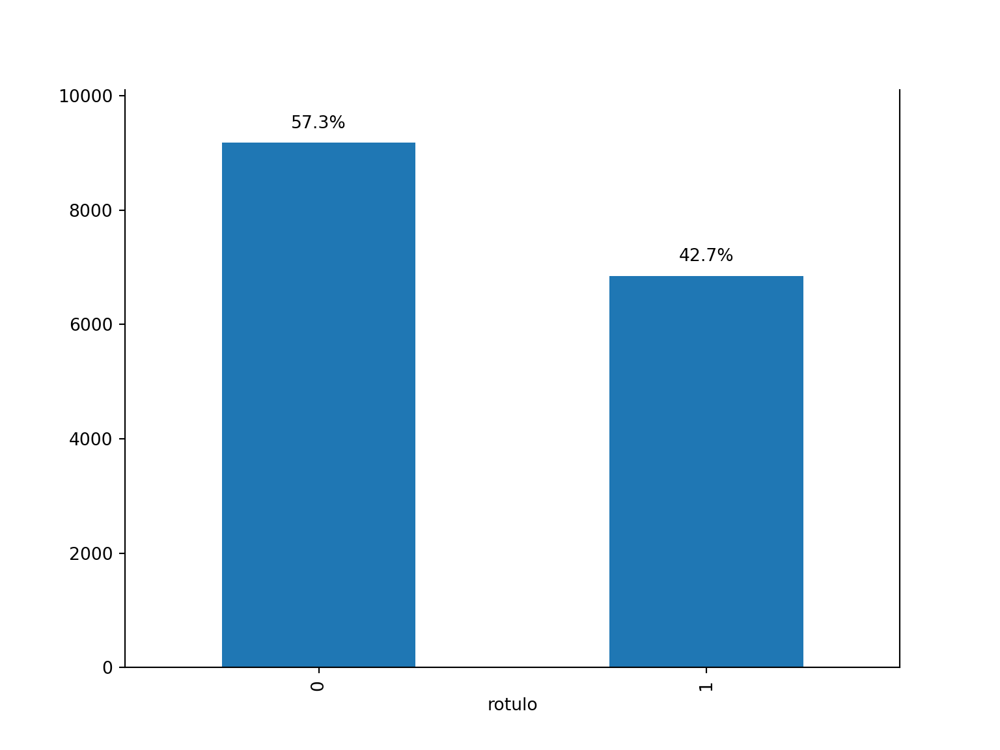

# Definindo o diretório de trabalho
import os
os.chdir("C:/Users/pedro/OneDrive/01 - Backups/Área de Trabalho/R/Projeto_Final_MESP")
import sqlite3 # Biblioteca para interagir com bancos de dados SQLite, permitindo criar, consultar e modificar bases de dados.
import pandas as pd # Biblioteca para manipulação e análise de dados em DataFrames.
import numpy as np # Biblioteca para manipulação eficiente de arrays e funções matemáticas.
import matplotlib.pyplot as plt #
import seaborn as sns # Biblioteca para visualização de dados baseada no Matplotlib.
from sklearn.model_selection import train_test_split # Função para dividir os dados em conjuntos de treino e teste.
from sklearn.pipeline import Pipeline # Utilitário para criação de pipelines que integram várias etapas de processamento.
from sklearn.preprocessing import OneHotEncoder # Codificador para transformar variáveis categóricas em binárias.
from sklearn import model_selection, preprocessing, linear_model, naive_bayes, metrics, svm, tree, neighbors # Módulos diversos do scikit-learn para modelagem, pré-processamento, e métricas.
from sklearn.ensemble import RandomForestClassifier # Classificador baseado em florestas aleatórias para tarefas de classificação.
from sklearn.compose import ColumnTransformer # Ferramenta para aplicar transformações diferentes a colunas específicas.
from sklearn.metrics import confusion_matrix # Função para calcular a matriz de confusão, avaliando o desempenho do modelo.
from sklearn.metrics import classification_report # Gera um relatório com métricas de classificação como precisão, recall e F1.
from random import seed # Função para definir uma semente para a geração de números aleatórios, garantindo reprodutibilidade.
import matplotlib.pyplot as plt # Biblioteca para criação de gráficos e visualizações.
from sklearn.neural_network import MLPClassifier # Classificador baseado em redes neurais de perceptron multicamadas.
from sklearn.ensemble import AdaBoostClassifier # Classificador que utiliza a técnica de boosting adaptativo para melhorar a precisão.
from sklearn.ensemble import GradientBoostingClassifier # Classificador que utiliza a técnica de boosting por gradiente para melhorar o desempenho.
from sklearn.ensemble import ExtraTreesClassifier # Classificador baseado em árvores de decisão com amostras aleatórias extras.
from sklearn.ensemble import BaggingClassifier # Classificador que utiliza a técnica de bagging para melhorar a robustez e precisão.
Universidade Federal da Paraíba - UFPB
Programa de Pós Graduação em Economia do Setor Público - PPESP
Dissertação de Mestrado
Título: Avaliação de risco em processos de aposentadoria no âmbito do Tribunal de Contas do Estado da Paraíba: uma aplicação baseada em aprendizagem de máquina supervisionada.
Autor: Pedro de Souza Fleury
Data: 2024-10-22
Da preparação do ambiente de trabalho e da importação das bibliotecas que serão utilizadas
Inicialmente, fixa-se o diretório de trabalho padrão, onde constarão todos os arquivos e documentos necessários à aplicação dos modelos. Em seguida, são incorporadas as bibliotecas que serão necessárias para a execução do código. O código utilizado para tais passos é apresentado abaixo:
Da preparação para aplicação dos modelos
Preliminarmente, é necessário importar a tabela_pretreinamento, obtida após a Análise Exploratória de Dados. Vejamos:
import tabulate
# Conectar ao banco de dados SQLite
conn = sqlite3.connect('mesp_previdencia_R_2.db')
# Criar um objeto cursor para executar comandos SQL
cursor = conn.cursor()
# Exemplo de consulta SELECT
consulta = """SELECT * from tabela_pretreinamento;
"""
dados_final = pd.read_sql_query(consulta, conn)
# Fechar a conexão
conn.close()
# Gerar visualização dos dados
html_table_a = tabulate.tabulate(dados_final.head(10), headers='keys', tablefmt='html')
html_table_a| index | nr_proc | jurisdicionado | ano | orgao | carreira | cargo | flag_aposesp | meio_publi | regra_apos | qtd_vinculos | qtd_vinculos_pub | qtd_vinculos_priv | qtd_vinculos_mesmo_cargo | qtd_vinculos_mesma_carreira | p_vencimento | p_ats | p_proventos | p_gratificacao | p_vantpessoal | p_insalubridade | p_adcqualificacao | p_representacao | p_antecipacao | p_indenizatorio | ind_sm | rotulo | |
|---|---|---|---|---|---|---|---|---|---|---|---|---|---|---|---|---|---|---|---|---|---|---|---|---|---|---|---|
| 0 | 0 | 00880/17 | Outros | 2016 | OUTROS | MAGISTÉRIO | Professor | 1 | BOLETIM OFICIAL | Aposentadoria voluntária por tempo de contribuição - Art. 6 - Proventos integrais para professores que ingressaram no serviço público até 31/12/2003 e que se aposentem, exclusivamente, com tempo de efetivo exercício das funções de magistério. | 2 vínculos | 2 vínculos públicos | Nenhum vínculo privado | 2 vínculos | 2 vínculos | 1 | 0 | 0 | 0 | 0 | 0 | 0 | 0 | 0 | 0 | 1 | 1 |
| 1 | 1 | 10366/16 | Instituto de Previdência do Município de João Pessoa | 2016 | OUTROS | VIGILANTE | Agentes de Segurança | 0 | OUTROS | Aposentadoria voluntária por tempo de contribuição - Art. 3 - Proventos integrais para servidores que ingressaram no serviço público até 16/12/1998 | 1 vínculo | 1 vínculo público | Nenhum vínculo privado | 1 vínculo | 1 vínculo | 0 | 0 | 1 | 0 | 1 | 0 | 0 | 0 | 0 | 0 | 1 | 1 |
| 2 | 2 | 18228/16 | Outros | 2016 | PREFEITURA MUNICIPAL DE CAJAZEIRAS | MAGISTÉRIO | Professor | 1 | DIÁRIO OFICIAL | Aposentadoria voluntária por tempo de contribuição - Art. 6 - Proventos integrais para professores que ingressaram no serviço público até 31/12/2003 e que se aposentem, exclusivamente, com tempo de efetivo exercício das funções de magistério. | 2 vínculos | 2 vínculos públicos | Nenhum vínculo privado | 2 vínculos | 2 vínculos | 0 | 0 | 1 | 1 | 0 | 0 | 0 | 0 | 0 | 0 | 1 | 1 |
| 3 | 3 | 17964/16 | Outros | 2016 | PREFEITURA MUNICIPAL DE CAJAZEIRAS | AUXILIAR DE SERVIÇOS GERAIS | Auxiliar de Serviços | 0 | DIÁRIO OFICIAL | Aposentadoria voluntária proporcional por idade e tempo de contribuição. | 1 vínculo | 1 vínculo público | Nenhum vínculo privado | 1 vínculo | 1 vínculo | 0 | 0 | 1 | 0 | 0 | 0 | 0 | 0 | 0 | 0 | 0 | 1 |
| 4 | 4 | 05836/17 | Outros | 2016 | OUTROS | ADMINISTRATIVO | Auxiliar de Serviços | 0 | SEMANÁRIO OFICIAL | Aposentadoria voluntária por tempo de contribuição - Art. 3 - Proventos integrais para servidores que ingressaram no serviço público até 16/12/1998 | 2 vínculos | 2 vínculos públicos | Nenhum vínculo privado | 2 vínculos | 2 vínculos | 0 | 0 | 1 | 0 | 0 | 0 | 0 | 0 | 0 | 0 | 0 | 1 |
| 5 | 5 | 15475/16 | Instituto de Previdência do Município de Santa Rita | 2016 | PREFEITURA MUNICIPAL DE SANTA RITA | AUXILIAR DE SERVIÇOS GERAIS | Auxiliar de Serviços | 0 | DIÁRIO OFICIAL | Aposentadoria voluntária por tempo de contribuição - Art. 6 - Proventos integrais para servidores que ingressaram no serviço público até 31/12/2003 | 1 vínculo | 1 vínculo público | Nenhum vínculo privado | 1 vínculo | 1 vínculo | 0 | 1 | 1 | 0 | 0 | 0 | 0 | 0 | 0 | 0 | 1 | 0 |
| 6 | 6 | 15319/16 | Instituto de Previdência do Município de Santa Rita | 2016 | PREFEITURA MUNICIPAL DE SANTA RITA | MAGISTÉRIO | Professor | 1 | DIÁRIO OFICIAL | Aposentadoria voluntária por tempo de contribuição - Art. 6 - Proventos integrais para professores que ingressaram no serviço público até 31/12/2003 e que se aposentem, exclusivamente, com tempo de efetivo exercício das funções de magistério. | 1 vínculo | 1 vínculo público | Nenhum vínculo privado | 1 vínculo | 1 vínculo | 1 | 1 | 0 | 0 | 0 | 0 | 0 | 0 | 0 | 0 | 1 | 1 |
| 7 | 7 | 01782/17 | Outros | 2016 | OUTROS | MAGISTÉRIO | Professor | 1 | BOLETIM OFICIAL | Aposentadoria voluntária por tempo de contribuição - Art. 6 - Proventos integrais para professores que ingressaram no serviço público até 31/12/2003 e que se aposentem, exclusivamente, com tempo de efetivo exercício das funções de magistério. | 1 vínculo | 1 vínculo público | Nenhum vínculo privado | 1 vínculo | 1 vínculo | 1 | 0 | 0 | 0 | 0 | 0 | 0 | 0 | 0 | 0 | 1 | 1 |
| 8 | 8 | 08840/16 | Instituto de Previdência do Município de João Pessoa | 2016 | OUTROS | AUXILIAR DE SERVIÇOS GERAIS | Auxiliar de Serviços | 0 | OUTROS | Aposentadoria voluntária por tempo de contribuição - Art. 3 - Proventos integrais para servidores que ingressaram no serviço público até 16/12/1998 | 1 vínculo | 1 vínculo público | Nenhum vínculo privado | 1 vínculo | 1 vínculo | 0 | 0 | 1 | 0 | 0 | 0 | 0 | 0 | 0 | 0 | 1 | 0 |
| 9 | 9 | 08874/16 | Instituto de Previdência do Município de João Pessoa | 2016 | OUTROS | ADMINISTRATIVO | Auxiliar Administrativo | 0 | OUTROS | Aposentadoria voluntária por tempo de contribuição - Art. 3 - Proventos integrais para servidores que ingressaram no serviço público até 16/12/1998 | 1 vínculo | 1 vínculo público | Nenhum vínculo privado | 1 vínculo | 1 vínculo | 0 | 0 | 1 | 0 | 0 | 0 | 0 | 0 | 0 | 0 | 1 | 0 |
Conversão de tipos
Em seguida, é necessário converter os tipos dos campos categóricos, para futura aplicação do OneHotEncoder:
# Transformar variáveis categóricas em tipo "category"
dados_final['nr_proc'] = dados_final['nr_proc'].astype("category")
dados_final['jurisdicionado'] = dados_final['jurisdicionado'].astype("category")
dados_final['ano'] = dados_final['ano'].astype("category")
dados_final['orgao'] = dados_final['orgao'].astype("category")
dados_final['carreira'] = dados_final['carreira'].astype("category")
dados_final['cargo'] = dados_final['cargo'].astype("category")
dados_final['flag_aposesp'] = dados_final['flag_aposesp'].astype("category")
dados_final['meio_publi'] = dados_final['meio_publi'].astype("category")
dados_final['regra_apos'] = dados_final['regra_apos'].astype("category")
dados_final['qtd_vinculos'] = dados_final['qtd_vinculos'].astype("category")
dados_final['qtd_vinculos_pub'] = dados_final['qtd_vinculos_pub'].astype("category")
dados_final['qtd_vinculos_priv'] = dados_final['qtd_vinculos_priv'].astype("category")
dados_final['qtd_vinculos_mesmo_cargo'] = dados_final['qtd_vinculos_mesmo_cargo'].astype("category")
dados_final['qtd_vinculos_mesma_carreira'] = dados_final['qtd_vinculos_mesma_carreira'].astype("category")
dados_final['p_vencimento'] = dados_final['p_vencimento'].astype("category")
dados_final['p_ats'] = dados_final['p_ats'].astype("category")
dados_final['p_proventos'] = dados_final['p_proventos'].astype("category")
dados_final['p_gratificacao'] = dados_final['p_gratificacao'].astype("category")
dados_final['p_vantpessoal'] = dados_final['p_vantpessoal'].astype("category")
dados_final['p_insalubridade'] = dados_final['p_insalubridade'].astype("category")
dados_final['p_adcqualificacao'] = dados_final['p_adcqualificacao'].astype("category")
dados_final['p_representacao'] = dados_final['p_representacao'].astype("category")
dados_final['p_antecipacao'] = dados_final['p_antecipacao'].astype("category")
dados_final['p_indenizatorio'] = dados_final['p_indenizatorio'].astype("category")
dados_final['ind_sm'] = dados_final['ind_sm'].astype("category")Composição das classes
Tal como já fora feito na AED, vejamos a composição das classes do dataset:
# Calcula as contagens e os percentuais
class_counts = dados_final['rotulo'].value_counts()
class_percent = 100 * class_counts / class_counts.sum()
# Cria o gráfico de barras
fig, ax = plt.subplots(figsize=(8, 6))
ax = class_counts.plot.bar(ylim=(0, class_counts.max() * 1.1))
# Adiciona os percentuais em cima de cada barra
for i, count in enumerate(class_counts):
percent = class_percent[i]
ax.text(i, count + 0.02 * class_counts.max(), f'{percent:.1f}%', ha='center', va='bottom')
# Remove a borda superior
ax.spines['top'].set_visible(False)
# Exibe o gráfico
plt.show()
Segmentação do dataset
Feito isso, é desejável que a base de dados seja segmentada em bases de treino (x_train e y_train) e de teste (x_valid e y_valid). Para tanto, deve ser mantida a proporção das classes observada na base completa, razão pela qual se utiliza o comando stratify. Vejamos:
# Separar dataset em bases de treino (train) e teste (valid) mantendo proporção dos labels (estratify) e com uma seed aleatoriamente escolhida
features = dados_final[['nr_proc', 'jurisdicionado', 'ano', 'orgao', 'carreira', 'cargo', 'flag_aposesp', 'meio_publi', 'regra_apos', 'qtd_vinculos', 'qtd_vinculos_pub', 'qtd_vinculos_priv', 'qtd_vinculos_mesmo_cargo', 'qtd_vinculos_mesma_carreira', 'p_vencimento', 'p_ats', 'p_proventos', 'p_gratificacao', 'p_vantpessoal', 'p_insalubridade', 'p_adcqualificacao', 'p_representacao', 'p_antecipacao', 'p_indenizatorio', 'ind_sm']]
label = dados_final['rotulo']
x_train, x_valid, y_train, y_valid = model_selection.train_test_split(features, label, random_state=857, stratify=label)Vejamos, após a segmentação, as dimensões das bases resultantes:
# Dimensões dos dataframes gerados com o train_test_split
print(x_train.shape)(12026, 25)print(y_train.shape)(12026,)print(x_valid.shape)(4009, 25)print(y_valid.shape)(4009,)Parametrizando o pré-processamento das features
Além disso, devem ser parametrizadas as transformações que serão feitas nos atributos para aplicação dos modelos. Como nesta pesquisa só há campos categóricos, será aplicado somente o OneHotEncoder, o qual é usado para transformar variáveis categóricas em variáveis dummy, também conhecidas como variáveis indicadoras. Ele converte cada categoria em uma nova coluna binária, onde um valor de 1 indica a presença da categoria e 0 a ausência:
categorical_features = ['nr_proc', 'jurisdicionado', 'ano', 'orgao', 'carreira', 'cargo', 'flag_aposesp', 'meio_publi', 'regra_apos', 'qtd_vinculos', 'qtd_vinculos_pub', 'qtd_vinculos_priv', 'qtd_vinculos_mesmo_cargo', 'qtd_vinculos_mesma_carreira', 'p_vencimento', 'p_ats', 'p_proventos', 'p_gratificacao', 'p_vantpessoal', 'p_insalubridade', 'p_adcqualificacao', 'p_representacao', 'p_antecipacao', 'p_indenizatorio', 'ind_sm']
categorical_transformer = OneHotEncoder(handle_unknown="ignore")
preprocessor = ColumnTransformer(
transformers=[
("categorical columns", categorical_transformer, categorical_features)
]
)Preparando dataframe e função para geração de matrizes de confusão
Antes de rodar os modelos, é importante que haja estruturas de dados tanto para armazenar as predições de cada modelo para cada processo da base de teste (global_df) quanto para armazenar as matrizes de confusão dos modelos contemplados (confusion_matrix_df). Vejamos a criação dessas estruturas:
global global_df
global_df = pd.DataFrame({'nr_proc': x_valid['nr_proc'], 'y_valid': y_valid})
# Criar um DataFrame para armazenar a matriz de confusão
confusion_matrix_df = pd.DataFrame(columns=['Model', 'TN', 'FP', 'FN', 'TP'])
# Função para adicionar uma matriz de confusão ao DataFrame criado
def add_confusion_matrix(model_name, confusion_matrix):
global confusion_matrix_df
# Extrair os valores da matriz de confusão
TN, FP, FN, TP = confusion_matrix.ravel()
# Criar um DataFrame temporário para a matriz de confusão atual
df = pd.DataFrame({
'Model': [model_name],
'TN': [TN],
'FP': [FP],
'FN': [FN],
'TP': [TP]
})
confusion_matrix_df = pd.concat([confusion_matrix_df, df], ignore_index=True)Criando função para treinamento dos modelos
Em sequência, é importante criar função que parametriza o treinamento de um modelo definido como input, realiza e preenche tanto as classificações geradas pelos modelos no dataframe df_global quanto as matrizes de confusão no dataframe confusion_matrix_df. Vejamos:
# Cria função que parametriza o treinamento de um modelo definido como input, faz suas predições, cria a matriz de confusão e preenche um dataframe global de informações importantes para o modelo rodado
def train_model(classifier, feature_vector_train, label, feature_vector_valid, label_valid, titulo_mapa, is_neural_net=False):
clf = Pipeline(steps=[("preprocessor", preprocessor), ("classifier", classifier)])
clf.fit(feature_vector_train, label)
pred_test = clf.predict(feature_vector_valid)
conf_mat = confusion_matrix(label_valid, pred_test)
add_confusion_matrix(titulo_mapa, conf_mat)
global_df[titulo_mapa] = pred_testAplicação dos modelos
Treinando os 11 modelos
Em seguida, é feito o chamamento reiterado da função “train_model” para cada um dos 11 modelos classificadores. Ao rodar tal função, são efetivadas as seguintes tarefas, para cada modelo:
- ajuste das features de treinamento com os rótulos de treinamento;
- predições dos processos da base de teste e seu armazenamento no dataframe global_df;
- cálculo e armazenamento as matrizes de confusão no dataframe confusion_matrix_df.
Vejamos:
# parametrização do classificador de cada modelo
classificador={
"Logistic Regression":linear_model.LogisticRegression(max_iter = 50000),
"Naive Bayes": naive_bayes.MultinomialNB(),
"KNN": neighbors.KNeighborsClassifier(),
"SVM": svm.SVC(),
"Decision Tree": tree.DecisionTreeClassifier(random_state=42),
"Random Forest":RandomForestClassifier(random_state=42),
"Bagging":BaggingClassifier(random_state=42),
"MLPClassifier": MLPClassifier(hidden_layer_sizes=(15,15,15,15), activation='relu', solver='adam', alpha=0.0001,
batch_size='auto', learning_rate='constant', learning_rate_init=0.001,
power_t=0.5, max_iter=200000, shuffle=True, random_state=847, tol=0.0001,
verbose=False, warm_start=True, momentum=0.9, nesterovs_momentum=True, early_stopping=False,
validation_fraction=0.1, beta_1=0.9, beta_2=0.999, epsilon=1e-08, n_iter_no_change=100, max_fun=15000),
"ADA": AdaBoostClassifier(n_estimators=100, algorithm="SAMME",),
"Gradient Boost": GradientBoostingClassifier(n_estimators=100, learning_rate=1.0,max_depth=1, random_state=0),
"Extratree" : ExtraTreesClassifier(n_estimators=10, max_depth=None, min_samples_split=2, random_state=0)
}
# Chamada reiterada da função criada para o treinamento de cada modelo e sua aplicação na base de teste
for i , (clf_name, classifier) in enumerate (classificador.items()):
train_model(classifier, x_train, y_train, x_valid, y_valid, clf_name)Da identificação da escolha coletiva
A partir do dataframe com as predições (classificações) geradas por todos os modelos em relação aos processos constantes da base de teste (global_df), identifica-se a escolha coletiva derivada da classificação majoritária dos modelos:
# Transformar as classificações na classe 0 como -1, para poder afetar a soma
global_df_adjust = global_df.copy()
colunas_nao_binarias = ['nr_proc', 'y_valid']
colunas_binarias = [coluna for coluna in global_df_adjust.columns if coluna not in colunas_nao_binarias]
global_df_adjust[colunas_binarias] = global_df_adjust[colunas_binarias].replace(0, -1)
global_df_adjust['Soma_Modelos']=global_df_adjust[colunas_binarias].sum(axis=1)
# Após realizar a soma, converte -1 em 0 de volta
colunas_nao_binarias = ['nr_proc', 'y_valid', 'Soma_Modelos']
colunas_binarias = [coluna for coluna in global_df_adjust.columns if coluna not in colunas_nao_binarias]
global_df_adjust[colunas_binarias] = global_df_adjust[colunas_binarias].replace(-1, 0)
# Calcula o módulo da soma das classificações
global_df_adjust['Modulo_Soma'] = global_df_adjust['Soma_Modelos'].abs()
# Calcula a escolha coletiva a partir da escolha majoritária dos modelos
global_df_adjust['Class_Coletiva'] = global_df_adjust.Soma_Modelos.apply(lambda x: 1 if x >=0 else 0)
# Gerar visualização dos dados
html_table_x = tabulate.tabulate(global_df_adjust.head(10), headers='keys', tablefmt='html')
html_table_x| nr_proc | y_valid | Logistic Regression | Naive Bayes | KNN | SVM | Decision Tree | Random Forest | Bagging | MLPClassifier | ADA | Gradient Boost | Extratree | Soma_Modelos | Modulo_Soma | Class_Coletiva | |
|---|---|---|---|---|---|---|---|---|---|---|---|---|---|---|---|---|
| 1604 | 04241/17 | 0 | 0 | 0 | 0 | 0 | 0 | 0 | 0 | 0 | 0 | 0 | 0 | -11 | 11 | 0 |
| 8904 | 07107/19 | 0 | 0 | 0 | 0 | 0 | 0 | 0 | 0 | 0 | 0 | 0 | 0 | -11 | 11 | 0 |
| 8916 | 07435/19 | 1 | 0 | 1 | 0 | 0 | 0 | 0 | 0 | 0 | 0 | 1 | 0 | -7 | 7 | 0 |
| 9454 | 09003/19 | 1 | 0 | 0 | 0 | 0 | 0 | 0 | 0 | 0 | 1 | 0 | 1 | -7 | 7 | 0 |
| 14239 | 15240/21 | 0 | 0 | 1 | 1 | 0 | 0 | 1 | 0 | 0 | 1 | 0 | 0 | -3 | 3 | 0 |
| 8464 | 02579/19 | 1 | 1 | 1 | 1 | 1 | 1 | 1 | 1 | 1 | 1 | 1 | 1 | 11 | 11 | 1 |
| 853 | 02315/17 | 0 | 0 | 0 | 0 | 0 | 0 | 0 | 0 | 0 | 0 | 0 | 0 | -11 | 11 | 0 |
| 1733 | 03903/17 | 0 | 0 | 0 | 0 | 0 | 0 | 0 | 0 | 0 | 0 | 0 | 0 | -11 | 11 | 0 |
| 9414 | 09295/19 | 0 | 0 | 0 | 1 | 0 | 0 | 0 | 0 | 0 | 0 | 0 | 0 | -9 | 9 | 0 |
| 3805 | 13085/17 | 0 | 0 | 0 | 0 | 0 | 0 | 0 | 0 | 0 | 0 | 0 | 0 | -11 | 11 | 0 |
Segmentando indicadores de acordo com subconjuntos da base de teste
O módulo da soma das classificações anteriormente obtidas nos permite capturar o grau de consenso entre as classificações dos modelos. O raciocínio da avaliação do consenso por meio da soma é o seguinte:
- Quando o módulo da soma é igual a 11, significa que todos os modelos concordaram;
- Quando o módulo da soma é igual a 9, significa que 10 modelos concordaram (+-10) e um foi contrário (-+1);
- Quando o módulo da soma é igual a 7, significa que 9 modelos concordaram (+-9) e 2 foram contrários (-+2);
- Quando o módulo da soma é igual a 5, significa que 8 modelos concordaram (+-8) e 3 foram contrários (-+3);
- Quando o módulo da soma é igual a 3, significa que 7 modelos concordaram (+-7) e 4 foram contrários (-+4);
- Quando o módulo da soma é igual a 1, significa que 6 modelos concordaram (+-6) e 3 foram contrários (-+5).
Como o problema enfrentado é de classificação binária, sempre haverá concordância de ao menos 6 modelos, razão pela qual os exemplos acima contemplam a base de teste completa.
Iterando nesses subconjuntos da base de teste, é possível avaliar os modelos e a escolha coletiva para cada grau de consenso, obtendo-se a matriz de confusão e o classification_report específicos para cada subconjunto. Vejamos:
# Crie um DataFrame vazio para armazenar os resultados
df_consolidado = pd.DataFrame()
# Mapeamento de nomes dos subconjuntos de dados
comite_names = {
11: "Subconjunto Consenso 11",
9: "Subconjunto Consenso 10",
7: "Subconjunto Consenso 9",
5: "Subconjunto Consenso 8",
3: "Subconjunto Consenso 7",
1: "Subconjunto Consenso 6"
}
# Nome das colunas dos modelos preditivos
model_columns = [
'Logistic Regression', 'Naive Bayes', 'KNN', 'SVM',
'Decision Tree', 'Random Forest', 'Bagging',
'MLPClassifier', 'ADA', 'Gradient Boost', 'Extratree'
]
# Iterar sobre os possíveis valores de módulo soma, decrescendo de 11 a 1, de 2 em 2
for i in range(11, 0, -2):
# Selecionar registros que compõem o subconjunto
transfor_n = global_df_adjust.loc[global_df_adjust['Modulo_Soma'] == i].copy()
# Aplicar a transformação nos valores de Soma_Modelos
transfor_n_report = transfor_n['Soma_Modelos'].apply(lambda x: 1 if x >= 0 else 0)
# Gerar o relatório de classificação para a escolha coletiva do subconjunto de dados
dicio = classification_report(transfor_n['y_valid'].values, transfor_n_report.values, digits=6, output_dict=True)
dicio.pop("accuracy")
dicio.pop("macro avg")
dicio.pop("weighted avg")
# Gerar a matriz de confusão para a escolha coletiva
conf_mat_cs = confusion_matrix(transfor_n['y_valid'], transfor_n_report)
comite_name = comite_names.get(i)
add_confusion_matrix(comite_name, conf_mat_cs)
# Transformar o dicionário resultante em DataFrame e adicionar uma coluna para a iteração
df_temp = pd.DataFrame(dicio).T
df_temp["Modelo"] = comite_name
df_temp["Classe"] = df_temp.index
# Concatenar o DataFrame temporário ao DataFrame consolidado
df_consolidado = pd.concat([df_consolidado, df_temp])
# Calcular a matriz de confusão para cada modelo individual no subconjunto de dados
for model in model_columns:
print("teste3-{model}")
y_pred = transfor_n[model]
y_true = transfor_n['y_valid']
conf_matrix = confusion_matrix(y_true, y_pred)
add_confusion_matrix(f"{comite_name} - {model}", conf_matrix)
# Gerar o relatório de classificação para cada modelo individual
dicio_model = classification_report(y_true, y_pred, digits=6, output_dict=True)
dicio_model.pop("accuracy")
dicio_model.pop("macro avg")
dicio_model.pop("weighted avg")
# Transformar o dicionário resultante em DataFrame e adicionar uma coluna para a iteração
df_temp_model = pd.DataFrame(dicio_model).T
df_temp_model["Modelo"] = f"{comite_name} - {model}"
df_temp_model["Classe"] = df_temp_model.index
# Concatenar o DataFrame temporário ao DataFrame consolidado
df_consolidado = pd.concat([df_consolidado, df_temp_model])0.7486278814489572
{'precision': 0.7370300889778552, 'recall': 0.6546282432571018, 'f1-score': 0.6655701701653562, 'support': 1822.0}
{'precision': 0.7431609085669562, 'recall': 0.7486278814489572, 'f1-score': 0.7230153713615032, 'support': 1822.0}
teste3-{model}
0.7486278814489572
{'precision': 0.7370300889778552, 'recall': 0.6546282432571018, 'f1-score': 0.6655701701653562, 'support': 1822.0}
{'precision': 0.7431609085669562, 'recall': 0.7486278814489572, 'f1-score': 0.7230153713615032, 'support': 1822.0}
teste3-{model}
0.7486278814489572
{'precision': 0.7370300889778552, 'recall': 0.6546282432571018, 'f1-score': 0.6655701701653562, 'support': 1822.0}
{'precision': 0.7431609085669562, 'recall': 0.7486278814489572, 'f1-score': 0.7230153713615032, 'support': 1822.0}
teste3-{model}
0.7486278814489572
{'precision': 0.7370300889778552, 'recall': 0.6546282432571018, 'f1-score': 0.6655701701653562, 'support': 1822.0}
{'precision': 0.7431609085669562, 'recall': 0.7486278814489572, 'f1-score': 0.7230153713615032, 'support': 1822.0}
teste3-{model}
0.7486278814489572
{'precision': 0.7370300889778552, 'recall': 0.6546282432571018, 'f1-score': 0.6655701701653562, 'support': 1822.0}
{'precision': 0.7431609085669562, 'recall': 0.7486278814489572, 'f1-score': 0.7230153713615032, 'support': 1822.0}
teste3-{model}
0.7486278814489572
{'precision': 0.7370300889778552, 'recall': 0.6546282432571018, 'f1-score': 0.6655701701653562, 'support': 1822.0}
{'precision': 0.7431609085669562, 'recall': 0.7486278814489572, 'f1-score': 0.7230153713615032, 'support': 1822.0}
teste3-{model}
0.7486278814489572
{'precision': 0.7370300889778552, 'recall': 0.6546282432571018, 'f1-score': 0.6655701701653562, 'support': 1822.0}
{'precision': 0.7431609085669562, 'recall': 0.7486278814489572, 'f1-score': 0.7230153713615032, 'support': 1822.0}
teste3-{model}
0.7486278814489572
{'precision': 0.7370300889778552, 'recall': 0.6546282432571018, 'f1-score': 0.6655701701653562, 'support': 1822.0}
{'precision': 0.7431609085669562, 'recall': 0.7486278814489572, 'f1-score': 0.7230153713615032, 'support': 1822.0}
teste3-{model}
0.7486278814489572
{'precision': 0.7370300889778552, 'recall': 0.6546282432571018, 'f1-score': 0.6655701701653562, 'support': 1822.0}
{'precision': 0.7431609085669562, 'recall': 0.7486278814489572, 'f1-score': 0.7230153713615032, 'support': 1822.0}
teste3-{model}
0.7486278814489572
{'precision': 0.7370300889778552, 'recall': 0.6546282432571018, 'f1-score': 0.6655701701653562, 'support': 1822.0}
{'precision': 0.7431609085669562, 'recall': 0.7486278814489572, 'f1-score': 0.7230153713615032, 'support': 1822.0}
teste3-{model}
0.7486278814489572
{'precision': 0.7370300889778552, 'recall': 0.6546282432571018, 'f1-score': 0.6655701701653562, 'support': 1822.0}
{'precision': 0.7431609085669562, 'recall': 0.7486278814489572, 'f1-score': 0.7230153713615032, 'support': 1822.0}
teste3-{model}
0.7486278814489572
{'precision': 0.7370300889778552, 'recall': 0.6546282432571018, 'f1-score': 0.6655701701653562, 'support': 1822.0}
{'precision': 0.7431609085669562, 'recall': 0.7486278814489572, 'f1-score': 0.7230153713615032, 'support': 1822.0}
0.6809605488850772
{'precision': 0.6956053927923256, 'recall': 0.6776639585541033, 'f1-score': 0.6722580879152764, 'support': 583.0}
{'precision': 0.6945297827878385, 'recall': 0.6809605488850772, 'f1-score': 0.6734489509953543, 'support': 583.0}
teste3-{model}
0.6792452830188679
{'precision': 0.6917884615384615, 'recall': 0.6761391734369481, 'f1-score': 0.6714146641389558, 'support': 583.0}
{'precision': 0.690812046444122, 'recall': 0.6792452830188679, 'f1-score': 0.6725457535327208, 'support': 583.0}
teste3-{model}
0.614065180102916
{'precision': 0.6226501305483029, 'recall': 0.6106205110090663, 'f1-score': 0.6028429992279395, 'support': 583.0}
{'precision': 0.6220402706805978, 'recall': 0.614065180102916, 'f1-score': 0.60433165587462, 'support': 583.0}
teste3-{model}
0.5797598627787307
{'precision': 0.5806493506493506, 'recall': 0.5804309431296362, 'f1-score': 0.579636185986009, 'support': 583.0}
{'precision': 0.5809997549620192, 'recall': 0.5797598627787307, 'f1-score': 0.5794754061554708, 'support': 583.0}
teste3-{model}
0.6809605488850772
{'precision': 0.6940333024976872, 'recall': 0.6778170257859414, 'f1-score': 0.6729934139104002, 'support': 583.0}
{'precision': 0.6930277060659481, 'recall': 0.6809605488850772, 'f1-score': 0.6741315760496398, 'support': 583.0}
teste3-{model}
0.6295025728987993
{'precision': 0.6297565502962804, 'recall': 0.6283998587071706, 'f1-score': 0.6280042538107053, 'support': 583.0}
{'precision': 0.6297024239656697, 'recall': 0.6295025728987993, 'f1-score': 0.6285306902470628, 'support': 583.0}
teste3-{model}
0.6809605488850772
{'precision': 0.689936775553214, 'recall': 0.6782762274814553, 'f1-score': 0.6749928067903899, 'support': 583.0}
{'precision': 0.6891320104036569, 'recall': 0.6809605488850772, 'f1-score': 0.6759748402996422, 'support': 583.0}
teste3-{model}
0.6775300171526587
{'precision': 0.6902880563264467, 'recall': 0.6743847874720358, 'f1-score': 0.6694772140599745, 'support': 583.0}
{'precision': 0.6893066686976939, 'recall': 0.6775300171526587, 'f1-score': 0.6706276145017864, 'support': 583.0}
teste3-{model}
0.6809605488850772
{'precision': 0.6940333024976872, 'recall': 0.6778170257859414, 'f1-score': 0.6729934139104002, 'support': 583.0}
{'precision': 0.6930277060659481, 'recall': 0.6809605488850772, 'f1-score': 0.6741315760496398, 'support': 583.0}
teste3-{model}
0.614065180102916
{'precision': 0.6259897656881228, 'recall': 0.6101613093135523, 'f1-score': 0.5998187858652975, 'support': 583.0}
{'precision': 0.6252408786706944, 'recall': 0.614065180102916, 'f1-score': 0.6015024506388343, 'support': 583.0}
teste3-{model}
0.6758147512864494
{'precision': 0.6887860214776853, 'recall': 0.6726304015071235, 'f1-score': 0.6675356415478615, 'support': 583.0}
{'precision': 0.6877999015216265, 'recall': 0.6758147512864494, 'f1-score': 0.6687055157500533, 'support': 583.0}
teste3-{model}
0.6157804459691252
{'precision': 0.6248102491624791, 'recall': 0.6122983633580595, 'f1-score': 0.6043721674220208, 'support': 583.0}
{'precision': 0.6241757224515947, 'recall': 0.6157804459691252, 'f1-score': 0.6058702242009334, 'support': 583.0}
0.6402714932126696
{'precision': 0.6491356382978724, 'recall': 0.6378187403993856, 'f1-score': 0.6323199347072026, 'support': 442.0}
{'precision': 0.6485543828824493, 'recall': 0.6402714932126696, 'f1-score': 0.6332985880617216, 'support': 442.0}
teste3-{model}
0.6018099547511312
{'precision': 0.6055226824457594, 'recall': 0.5997132616487455, 'f1-score': 0.5953138980793642, 'support': 442.0}
{'precision': 0.605237088007711, 'recall': 0.6018099547511312, 'f1-score': 0.5962419061753308, 'support': 442.0}
teste3-{model}
0.5090497737556561
{'precision': 0.5087719298245614, 'recall': 0.5087660010240656, 'f1-score': 0.5087455120029911, 'support': 442.0}
{'precision': 0.508930697785187, 'recall': 0.5090497737556561, 'f1-score': 0.5089667932776566, 'support': 442.0}
teste3-{model}
0.5769230769230769
{'precision': 0.5770625, 'recall': 0.5757603686635945, 'f1-score': 0.574551537768627, 'support': 442.0}
{'precision': 0.5770432692307692, 'recall': 0.5769230769230769, 'f1-score': 0.5751264563515238, 'support': 442.0}
teste3-{model}
0.6380090497737556
{'precision': 0.6463384982648482, 'recall': 0.6355965181771633, 'f1-score': 0.6302570215613694, 'support': 442.0}
{'precision': 0.6457832016987755, 'recall': 0.6380090497737556, 'f1-score': 0.6312260250879178, 'support': 442.0}
teste3-{model}
0.583710407239819
{'precision': 0.5837991686631038, 'recall': 0.5838197644649257, 'f1-score': 0.5837018837018837, 'support': 442.0}
{'precision': 0.5839766915096734, 'recall': 0.583710407239819, 'f1-score': 0.583735977853625, 'support': 442.0}
teste3-{model}
0.6040723981900452
{'precision': 0.6048663324979114, 'recall': 0.602836661546339, 'f1-score': 0.6015741298760167, 'support': 442.0}
{'precision': 0.6047638893614126, 'recall': 0.6040723981900452, 'f1-score': 0.6021451626335089, 'support': 442.0}
teste3-{model}
0.6221719457013575
{'precision': 0.6259435580717104, 'recall': 0.6202867383512545, 'f1-score': 0.6170738160331599, 'support': 442.0}
{'precision': 0.625622569784872, 'recall': 0.6221719457013575, 'f1-score': 0.6178735226477791, 'support': 442.0}
teste3-{model}
0.6108597285067874
{'precision': 0.6135593220338983, 'recall': 0.6090937019969278, 'f1-score': 0.6062156842432405, 'support': 442.0}
{'precision': 0.6133139044405246, 'recall': 0.6108597285067874, 'f1-score': 0.6069896916204983, 'support': 442.0}
teste3-{model}
0.5294117647058824
{'precision': 0.528714464130734, 'recall': 0.5277828981054787, 'f1-score': 0.5247016977893583, 'support': 442.0}
{'precision': 0.5287841941882487, 'recall': 0.5294117647058824, 'f1-score': 0.5255580735923626, 'support': 442.0}
teste3-{model}
0.6447963800904978
{'precision': 0.6482188295165394, 'recall': 0.6431643625192012, 'f1-score': 0.6410760374264892, 'support': 442.0}
{'precision': 0.6478849320115597, 'recall': 0.6447963800904978, 'f1-score': 0.6417374316778686, 'support': 442.0}
teste3-{model}
0.5610859728506787
{'precision': 0.5661295226512617, 'recall': 0.557910906298003, 'f1-score': 0.5454410517387617, 'support': 442.0}
{'precision': 0.5658708790717447, 'recall': 0.5610859728506787, 'f1-score': 0.546967385505778, 'support': 442.0}
0.5717488789237668
{'precision': 0.5873401534526854, 'recall': 0.5830748646840601, 'f1-score': 0.5693914379735829, 'support': 446.0}
{'precision': 0.5932236532749188, 'recall': 0.5717488789237668, 'f1-score': 0.5665339337915419, 'support': 446.0}
teste3-{model}
0.5224215246636771
{'precision': 0.5368664590901228, 'recall': 0.5345638468243832, 'f1-score': 0.518741609463259, 'support': 446.0}
{'precision': 0.5417630470312909, 'recall': 0.5224215246636771, 'f1-score': 0.5149673374628301, 'support': 446.0}
teste3-{model}
0.4910313901345291
{'precision': 0.5005050505050505, 'recall': 0.5004865292221614, 'f1-score': 0.48915922840549586, 'support': 446.0}
{'precision': 0.5045363953435702, 'recall': 0.4910313901345291, 'f1-score': 0.4863856554735946, 'support': 446.0}
teste3-{model}
0.5672645739910314
{'precision': 0.5624897725413189, 'recall': 0.5619311155709623, 'f1-score': 0.561977457191563, 'support': 446.0}
{'precision': 0.565782739058362, 'recall': 0.5672645739910314, 'f1-score': 0.5662934709054148, 'support': 446.0}
teste3-{model}
0.5717488789237668
{'precision': 0.5827922077922079, 'recall': 0.580642218573253, 'f1-score': 0.5707973296384935, 'support': 446.0}
{'precision': 0.5881791974841303, 'recall': 0.5717488789237668, 'f1-score': 0.5689848548094015, 'support': 446.0}
teste3-{model}
0.5426008968609866
{'precision': 0.5354112373605754, 'recall': 0.5344320784933811, 'f1-score': 0.5335875984251969, 'support': 446.0}
{'precision': 0.5388348847417236, 'recall': 0.5426008968609866, 'f1-score': 0.5394026296740935, 'support': 446.0}
teste3-{model}
0.5538116591928252
{'precision': 0.5520866902997099, 'recall': 0.5524235236878915, 'f1-score': 0.5519172030796415, 'support': 446.0}
{'precision': 0.5559199545066326, 'recall': 0.5538116591928252, 'f1-score': 0.5545302459943775, 'support': 446.0}
teste3-{model}
0.5762331838565022
{'precision': 0.5834765177548682, 'recall': 0.5827302398183625, 'f1-score': 0.5760605527195917, 'support': 446.0}
{'precision': 0.5884719204433966, 'recall': 0.5762331838565022, 'f1-score': 0.5752933032222111, 'support': 446.0}
teste3-{model}
0.515695067264574
{'precision': 0.5265788086452293, 'recall': 0.5255529201889355, 'f1-score': 0.5137786929925504, 'support': 446.0}
{'precision': 0.531113700887169, 'recall': 0.515695067264574, 'f1-score': 0.5110410154610883, 'support': 446.0}
teste3-{model}
0.5067264573991032
{'precision': 0.5186807083502446, 'recall': 0.5177279085325062, 'f1-score': 0.5038430420711975, 'support': 446.0}
{'precision': 0.5231082087025192, 'recall': 0.5067264573991032, 'f1-score': 0.5004507887442494, 'support': 446.0}
teste3-{model}
0.5246636771300448
{'precision': 0.5365559296195135, 'recall': 0.5349996959192361, 'f1-score': 0.5225032320620556, 'support': 446.0}
{'precision': 0.5413128306153009, 'recall': 0.5246636771300448, 'f1-score': 0.5196226386380699, 'support': 446.0}
teste3-{model}
0.48654708520179374
{'precision': 0.48990695792880257, 'recall': 0.48988424658922747, 'f1-score': 0.48652385285585725, 'support': 446.0}
{'precision': 0.49385974937234245, 'recall': 0.48654708520179374, 'f1-score': 0.4868336174683434, 'support': 446.0}
0.5649717514124294
{'precision': 0.5681643625192012, 'recall': 0.568958818958819, 'f1-score': 0.5644712875083884, 'support': 354.0}
{'precision': 0.5756137884350022, 'recall': 0.5649717514124294, 'f1-score': 0.5662229111725317, 'support': 354.0}
teste3-{model}
0.4745762711864407
{'precision': 0.48829715061058343, 'recall': 0.48883061383061377, 'f1-score': 0.4725390925403743, 'support': 354.0}
{'precision': 0.4949980452130718, 'recall': 0.4745762711864407, 'f1-score': 0.4686499333069747, 'support': 354.0}
teste3-{model}
0.4830508474576271
{'precision': 0.4883178322015898, 'recall': 0.48824786324786323, 'f1-score': 0.4829476977596156, 'support': 354.0}
{'precision': 0.4952307496780408, 'recall': 0.4830508474576271, 'f1-score': 0.4838141552229122, 'support': 354.0}
teste3-{model}
0.53954802259887
{'precision': 0.5253229974160206, 'recall': 0.5237956487956488, 'f1-score': 0.5213636929202439, 'support': 354.0}
{'precision': 0.5315464459335172, 'recall': 0.53954802259887, 'f1-score': 0.5324324153333208, 'support': 354.0}
teste3-{model}
0.556497175141243
{'precision': 0.5558339984038309, 'recall': 0.5566239316239316, 'f1-score': 0.554617067482991, 'support': 354.0}
{'precision': 0.5627973541466582, 'recall': 0.556497175141243, 'f1-score': 0.5580503075545814, 'support': 354.0}
teste3-{model}
0.559322033898305
{'precision': 0.54375, 'recall': 0.5387529137529138, 'f1-score': 0.5330289193302892, 'support': 354.0}
{'precision': 0.5489406779661017, 'recall': 0.559322033898305, 'f1-score': 0.5461754766142971, 'support': 354.0}
teste3-{model}
0.5734463276836158
{'precision': 0.5622325676924657, 'recall': 0.5588578088578089, 'f1-score': 0.5575988810447996, 'support': 354.0}
{'precision': 0.5673518929058168, 'recall': 0.5734463276836158, 'f1-score': 0.5675331013258487, 'support': 354.0}
teste3-{model}
0.53954802259887
{'precision': 0.5416067491132202, 'recall': 0.5421522921522921, 'f1-score': 0.5387198119768808, 'support': 354.0}
{'precision': 0.5488122919134458, 'recall': 0.53954802259887, 'f1-score': 0.5410388017184508, 'support': 354.0}
teste3-{model}
0.5028248587570622
{'precision': 0.5151474887058198, 'recall': 0.5147630147630148, 'f1-score': 0.5020460358056266, 'support': 354.0}
{'precision': 0.5225410666750744, 'recall': 0.5028248587570622, 'f1-score': 0.49970956695131985, 'support': 354.0}
teste3-{model}
0.4661016949152542
{'precision': 0.4801800568240167, 'recall': 0.4812548562548562, 'f1-score': 0.4634255880536686, 'support': 354.0}
{'precision': 0.48660713508671266, 'recall': 0.4661016949152542, 'f1-score': 0.4589297285262049, 'support': 354.0}
teste3-{model}
0.4604519774011299
{'precision': 0.47300862506341956, 'recall': 0.47416472416472416, 'f1-score': 0.45854654654654653, 'support': 354.0}
{'precision': 0.4792869488945644, 'recall': 0.4604519774011299, 'f1-score': 0.45473568483737975, 'support': 354.0}
teste3-{model}
0.53954802259887
{'precision': 0.5388826815642458, 'recall': 0.5394327894327895, 'f1-score': 0.5375960636925321, 'support': 354.0}
{'precision': 0.5458687624278004, 'recall': 0.53954802259887, 'f1-score': 0.5411605103910623, 'support': 354.0}
0.56353591160221
{'precision': 0.5623447895269338, 'recall': 0.5621922500535217, 'f1-score': 0.5621995652307032, 'support': 362.0}
{'precision': 0.5631388709104512, 'recall': 0.56353591160221, 'f1-score': 0.5632686423279085, 'support': 362.0}
teste3-{model}
0.48342541436464087
{'precision': 0.48354700854700855, 'recall': 0.48351530721472913, 'f1-score': 0.48323218443452043, 'support': 362.0}
{'precision': 0.48451976200594987, 'recall': 0.48342541436464087, 'f1-score': 0.48367385284622433, 'support': 362.0}
teste3-{model}
0.44751381215469616
{'precision': 0.4490693739424704, 'recall': 0.44936844358809674, 'f1-score': 0.4472438540235151, 'support': 362.0}
{'precision': 0.44984715483635745, 'recall': 0.44751381215469616, 'f1-score': 0.44670393776115286, 'support': 362.0}
teste3-{model}
0.5276243093922652
{'precision': 0.5299642769154964, 'recall': 0.5297580817812032, 'f1-score': 0.527332147247696, 'support': 362.0}
{'precision': 0.5310654381028994, 'recall': 0.5276243093922652, 'f1-score': 0.5268127478795728, 'support': 362.0}
teste3-{model}
0.5027624309392266
{'precision': 0.5025185456543639, 'recall': 0.5025231672630517, 'f1-score': 0.5023826979472141, 'support': 362.0}
{'precision': 0.5034940867938141, 'recall': 0.5027624309392266, 'f1-score': 0.5029902707344339, 'support': 362.0}
teste3-{model}
0.5220994475138122
{'precision': 0.5235294117647059, 'recall': 0.52348839343059, 'f1-score': 0.5220666234212232, 'support': 362.0}
{'precision': 0.5245693857653559, 'recall': 0.5220994475138122, 'f1-score': 0.5218915615940829, 'support': 362.0}
teste3-{model}
0.5441988950276243
{'precision': 0.5438446507083536, 'recall': 0.5439184022999052, 'f1-score': 0.5437776402923856, 'support': 362.0}
{'precision': 0.5447893022264088, 'recall': 0.5441988950276243, 'f1-score': 0.5443903744527328, 'support': 362.0}
teste3-{model}
0.5939226519337016
{'precision': 0.5928616352201258, 'recall': 0.5903140960944429, 'f1-score': 0.5891540498598704, 'support': 362.0}
{'precision': 0.5931354459849195, 'recall': 0.5939226519337016, 'f1-score': 0.5911103994286216, 'support': 362.0}
teste3-{model}
0.49171270718232046
{'precision': 0.49219728202779056, 'recall': 0.4921858274459431, 'f1-score': 0.49165063955795707, 'support': 362.0}
{'precision': 0.4931664317187307, 'recall': 0.49171270718232046, 'f1-score': 0.49189891005541053, 'support': 362.0}
teste3-{model}
0.4447513812154696
{'precision': 0.4438126681340181, 'recall': 0.4437868917637704, 'f1-score': 0.44379639043258245, 'support': 362.0}
{'precision': 0.44488548308424847, 'recall': 0.4447513812154696, 'f1-score': 0.44481504726766213, 'support': 362.0}
teste3-{model}
0.4558011049723757
{'precision': 0.45679314565483475, 'recall': 0.45681560999480075, 'f1-score': 0.455796952145479, 'support': 362.0}
{'precision': 0.4576749595947984, 'recall': 0.4558011049723757, 'f1-score': 0.45573050691513134, 'support': 362.0}
teste3-{model}
0.5497237569060773
{'precision': 0.5474837662337662, 'recall': 0.5465180291769887, 'f1-score': 0.5454748534498032, 'support': 362.0}
{'precision': 0.5481474671737102, 'recall': 0.5497237569060773, 'f1-score': 0.5474172093155285, 'support': 362.0}Obtendo os resultados de cada modelo na base de teste completa
Além dos dados referentes à aplicação dos modelos nos subconjuntos da base de teste, é importante que se tenha também os dados da aplicação dos modelos à base de testes completa:
# Obter o classification report de cada modelo
rl = classification_report(y_valid, global_df['Logistic Regression'], digits=6, output_dict=True)
nb = classification_report(y_valid, global_df['Naive Bayes'], digits=6, output_dict=True)
knn = classification_report(y_valid, global_df['KNN'], digits=6, output_dict=True)
svm = classification_report(y_valid, global_df['SVM'], digits=6, output_dict=True)
ad = classification_report(y_valid, global_df['Decision Tree'], digits=6, output_dict=True)
fr = classification_report(y_valid, global_df['Random Forest'], digits=6, output_dict=True)
bag = classification_report(y_valid, global_df['Bagging'], digits=6, output_dict=True)
mlpc = classification_report(y_valid, global_df['MLPClassifier'], digits=6, output_dict=True)
ada = classification_report(y_valid, global_df['ADA'], digits=6, output_dict=True)
gboo = classification_report(y_valid, global_df['Gradient Boost'], digits=6, output_dict=True)
xt = classification_report(y_valid, global_df['Extratree'], digits=6, output_dict=True)
# Consolidar os dicionários em um único dicionário de dicionários
reports_dict = {'Logistic Regression': rl,
'Naive Bayes': nb,
'KNN': knn,
'SVM': svm,
'Decision Tree': ad,
'Random Forest': fr,
'Bagging': bag,
'MLPClassifier': mlpc,
'ADA': ada,
'Gradient Boost': gboo,
'Extratree': xt}
# Lista para armazenar os dados consolidados
consolidated_data = []
# Iterar sobre os dicionários de classification_report de cada modelo
for model_name, report_dict in reports_dict.items():
# Iterar sobre as classes de cada modelo
for class_name, metrics_dict in report_dict.items():
# Verificar se metrics_dict é um dicionário válido
if isinstance(metrics_dict, dict):
# Adicionar um novo dicionário com os indicadores, incluindo o nome do modelo e o nome da classe
consolidated_data.append({'Modelo': model_name, 'Classe': class_name, **metrics_dict})
# Criar DataFrame a partir dos dados consolidados
consolidated_df = pd.DataFrame(consolidated_data)
consolidated_df = consolidated_df.loc[consolidated_df['Classe'].isin(['0', '1'])]
# Consolidando os classification reports dos subconjuntos com os do modelos na base completa
df_final = pd.concat([consolidated_df, df_consolidado], ignore_index=True)Consolidando os classification reports com as matrizes de confusão
Para que se possa avaliar os resultados, é importante que os indicadores do classification report (precisão, revocação, f1-score e acurácia) e as matrizes de confusão estejam consolidados em uma só tabela. Além disso, deve ser calculado o indicador de benefício/custo de cada registro. Vejamos:
# Transformar o DataFrame usando pivot_table
transformed_df = df_final.pivot_table(index='Modelo', columns='Classe', values=['precision', 'recall', 'f1-score', 'support'])
# Renomear as colunas para refletir as classes
transformed_df.columns = [f'{indicator}_{class_}' for indicator, class_ in transformed_df.columns]
# Resetar o índice para garantir que 'Modelo' seja uma coluna
transformed_df = transformed_df.reset_index()
# Mesclar os DataFrames usando os campos de cruzamento diferentes
transformed_df = pd.merge(transformed_df, confusion_matrix_df, left_on='Modelo', right_on='Model')
ordem_colunas = ['Modelo','TN', 'FP', 'FN', 'TP', 'f1-score_0', 'f1-score_1', 'precision_0', 'precision_1', 'recall_0', 'recall_1', 'support_0', 'support_1']
transformed_df = transformed_df[ordem_colunas]
test_base_size = y_valid.shape[0]
transformed_df["Beneficio"] = transformed_df["TN"]
transformed_df["Custo"] = transformed_df["FN"]
transformed_df["Beneficio/Custo"] = transformed_df["Beneficio"] / transformed_df["Custo"]
coluna_para_ordenar = 'Beneficio/Custo'
transformed_df = transformed_df.sort_values(by=coluna_para_ordenar, ascending=False)
transformed_df['Accuracy'] = (transformed_df['TN'] + transformed_df['TP']) / (transformed_df['support_0'] + transformed_df['support_1'])
transformed_df = transformed_df.drop_duplicates()
# Gerar a tabela com tabulate
html_table_2 = tabulate.tabulate(transformed_df.head(150), headers='keys', tablefmt='html')
html_table_2| Modelo | TN | FP | FN | TP | f1-score_0 | f1-score_1 | precision_0 | precision_1 | recall_0 | recall_1 | support_0 | support_1 | Beneficio | Custo | Beneficio/Custo | Accuracy | |
|---|---|---|---|---|---|---|---|---|---|---|---|---|---|---|---|---|---|
| 32 | Subconjunto Consenso 11 - Naive Bayes | 1136 | 89 | 369 | 228 | 0.832234 | 0.498906 | 0.754817 | 0.719243 | 0.927347 | 0.38191 | 1225 | 597 | 1136 | 369 | 3.07859 | 0.748628 |
| 30 | Subconjunto Consenso 11 - Logistic Regression | 1136 | 89 | 369 | 228 | 0.832234 | 0.498906 | 0.754817 | 0.719243 | 0.927347 | 0.38191 | 1225 | 597 | 1136 | 369 | 3.07859 | 0.748628 |
| 25 | Subconjunto Consenso 11 - Bagging | 1136 | 89 | 369 | 228 | 0.832234 | 0.498906 | 0.754817 | 0.719243 | 0.927347 | 0.38191 | 1225 | 597 | 1136 | 369 | 3.07859 | 0.748628 |
| 24 | Subconjunto Consenso 11 - ADA | 1136 | 89 | 369 | 228 | 0.832234 | 0.498906 | 0.754817 | 0.719243 | 0.927347 | 0.38191 | 1225 | 597 | 1136 | 369 | 3.07859 | 0.748628 |
| 23 | Subconjunto Consenso 11 | 1136 | 89 | 369 | 228 | 0.832234 | 0.498906 | 0.754817 | 0.719243 | 0.927347 | 0.38191 | 1225 | 597 | 1136 | 369 | 3.07859 | 0.748628 |
| 34 | Subconjunto Consenso 11 - SVM | 1136 | 89 | 369 | 228 | 0.832234 | 0.498906 | 0.754817 | 0.719243 | 0.927347 | 0.38191 | 1225 | 597 | 1136 | 369 | 3.07859 | 0.748628 |
| 33 | Subconjunto Consenso 11 - Random Forest | 1136 | 89 | 369 | 228 | 0.832234 | 0.498906 | 0.754817 | 0.719243 | 0.927347 | 0.38191 | 1225 | 597 | 1136 | 369 | 3.07859 | 0.748628 |
| 28 | Subconjunto Consenso 11 - Gradient Boost | 1136 | 89 | 369 | 228 | 0.832234 | 0.498906 | 0.754817 | 0.719243 | 0.927347 | 0.38191 | 1225 | 597 | 1136 | 369 | 3.07859 | 0.748628 |
| 29 | Subconjunto Consenso 11 - KNN | 1136 | 89 | 369 | 228 | 0.832234 | 0.498906 | 0.754817 | 0.719243 | 0.927347 | 0.38191 | 1225 | 597 | 1136 | 369 | 3.07859 | 0.748628 |
| 27 | Subconjunto Consenso 11 - Extratree | 1136 | 89 | 369 | 228 | 0.832234 | 0.498906 | 0.754817 | 0.719243 | 0.927347 | 0.38191 | 1225 | 597 | 1136 | 369 | 3.07859 | 0.748628 |
| 26 | Subconjunto Consenso 11 - Decision Tree | 1136 | 89 | 369 | 228 | 0.832234 | 0.498906 | 0.754817 | 0.719243 | 0.927347 | 0.38191 | 1225 | 597 | 1136 | 369 | 3.07859 | 0.748628 |
| 31 | Subconjunto Consenso 11 - MLPClassifier | 1136 | 89 | 369 | 228 | 0.832234 | 0.498906 | 0.754817 | 0.719243 | 0.927347 | 0.38191 | 1225 | 597 | 1136 | 369 | 3.07859 | 0.748628 |
| 9 | Random Forest | 1806 | 490 | 844 | 869 | 0.730287 | 0.565755 | 0.681509 | 0.639441 | 0.786585 | 0.507297 | 2296 | 1713 | 1806 | 844 | 2.13981 | 0.667249 |
| 2 | Decision Tree | 1708 | 588 | 803 | 910 | 0.71063 | 0.566802 | 0.680207 | 0.607477 | 0.743902 | 0.531232 | 2296 | 1713 | 1708 | 803 | 2.12702 | 0.653031 |
| 1 | Bagging | 1890 | 406 | 906 | 807 | 0.742341 | 0.551606 | 0.675966 | 0.665293 | 0.823171 | 0.471103 | 2296 | 1713 | 1890 | 906 | 2.08609 | 0.672736 |
| 5 | KNN | 1698 | 598 | 819 | 894 | 0.705589 | 0.557878 | 0.674613 | 0.599196 | 0.739547 | 0.521891 | 2296 | 1713 | 1698 | 819 | 2.07326 | 0.646545 |
| 10 | SVM | 1874 | 422 | 910 | 803 | 0.737795 | 0.54663 | 0.673132 | 0.65551 | 0.816202 | 0.468768 | 2296 | 1713 | 1874 | 910 | 2.05934 | 0.667748 |
| 7 | MLPClassifier | 1855 | 441 | 951 | 762 | 0.727166 | 0.522634 | 0.661083 | 0.633416 | 0.807927 | 0.444834 | 2296 | 1713 | 1855 | 951 | 1.95058 | 0.652781 |
| 4 | Gradient Boost | 1850 | 446 | 958 | 755 | 0.724922 | 0.518188 | 0.658832 | 0.628643 | 0.805749 | 0.440747 | 2296 | 1713 | 1850 | 958 | 1.93111 | 0.649788 |
| 6 | Logistic Regression | 1862 | 434 | 973 | 740 | 0.725784 | 0.512643 | 0.65679 | 0.630324 | 0.810976 | 0.431991 | 2296 | 1713 | 1862 | 973 | 1.91367 | 0.64904 |
| 3 | Extratree | 1838 | 458 | 973 | 740 | 0.719796 | 0.508416 | 0.65386 | 0.617696 | 0.800523 | 0.431991 | 2296 | 1713 | 1838 | 973 | 1.889 | 0.643053 |
| 21 | Subconjunto Consenso 10 - Random Forest | 238 | 60 | 126 | 159 | 0.719033 | 0.630952 | 0.653846 | 0.726027 | 0.798658 | 0.557895 | 298 | 285 | 238 | 126 | 1.88889 | 0.680961 |
| 19 | Subconjunto Consenso 10 - MLPClassifier | 244 | 54 | 132 | 153 | 0.724036 | 0.621951 | 0.648936 | 0.73913 | 0.818792 | 0.536842 | 298 | 285 | 244 | 132 | 1.84848 | 0.680961 |
| 22 | Subconjunto Consenso 10 - SVM | 244 | 54 | 132 | 153 | 0.724036 | 0.621951 | 0.648936 | 0.73913 | 0.818792 | 0.536842 | 298 | 285 | 244 | 132 | 1.84848 | 0.680961 |
| 18 | Subconjunto Consenso 10 - Logistic Regression | 243 | 55 | 132 | 153 | 0.72214 | 0.62069 | 0.648 | 0.735577 | 0.815436 | 0.536842 | 298 | 285 | 243 | 132 | 1.84091 | 0.679245 |
| 11 | Subconjunto Consenso 10 | 246 | 52 | 134 | 151 | 0.725664 | 0.618852 | 0.647368 | 0.743842 | 0.825503 | 0.529825 | 298 | 285 | 246 | 134 | 1.83582 | 0.680961 |
| 13 | Subconjunto Consenso 10 - Bagging | 243 | 55 | 133 | 152 | 0.721068 | 0.617886 | 0.646277 | 0.7343 | 0.815436 | 0.533333 | 298 | 285 | 243 | 133 | 1.82707 | 0.67753 |
| 16 | Subconjunto Consenso 10 - Gradient Boost | 243 | 55 | 134 | 151 | 0.72 | 0.615071 | 0.644562 | 0.73301 | 0.815436 | 0.529825 | 298 | 285 | 243 | 134 | 1.81343 | 0.675815 |
| 8 | Naive Bayes | 1765 | 531 | 979 | 734 | 0.700397 | 0.492948 | 0.643222 | 0.580237 | 0.768728 | 0.428488 | 2296 | 1713 | 1765 | 979 | 1.80286 | 0.623347 |
| 0 | ADA | 1822 | 474 | 1027 | 686 | 0.70826 | 0.47755 | 0.639523 | 0.591379 | 0.793554 | 0.400467 | 2296 | 1713 | 1822 | 1027 | 1.7741 | 0.625592 |
| 76 | Subconjunto Consenso 9 - Gradient Boost | 165 | 60 | 97 | 120 | 0.677618 | 0.604534 | 0.629771 | 0.666667 | 0.733333 | 0.552995 | 225 | 217 | 165 | 97 | 1.70103 | 0.644796 |
| 14 | Subconjunto Consenso 10 - Decision Tree | 202 | 96 | 120 | 165 | 0.651613 | 0.604396 | 0.627329 | 0.632184 | 0.677852 | 0.578947 | 298 | 285 | 202 | 120 | 1.68333 | 0.629503 |
| 71 | Subconjunto Consenso 9 | 174 | 51 | 108 | 109 | 0.686391 | 0.578249 | 0.617021 | 0.68125 | 0.773333 | 0.502304 | 225 | 217 | 174 | 108 | 1.61111 | 0.640271 |
| 82 | Subconjunto Consenso 9 - SVM | 173 | 52 | 108 | 109 | 0.683794 | 0.57672 | 0.615658 | 0.677019 | 0.768889 | 0.502304 | 225 | 217 | 173 | 108 | 1.60185 | 0.638009 |
| 73 | Subconjunto Consenso 9 - Bagging | 163 | 62 | 105 | 112 | 0.661258 | 0.57289 | 0.608209 | 0.643678 | 0.724444 | 0.516129 | 225 | 217 | 163 | 105 | 1.55238 | 0.622172 |
| 79 | Subconjunto Consenso 9 - MLPClassifier | 159 | 66 | 106 | 111 | 0.64898 | 0.563452 | 0.6 | 0.627119 | 0.706667 | 0.511521 | 225 | 217 | 159 | 106 | 1.5 | 0.61086 |
| 81 | Subconjunto Consenso 9 - Random Forest | 151 | 74 | 101 | 116 | 0.633124 | 0.570025 | 0.599206 | 0.610526 | 0.671111 | 0.534562 | 225 | 217 | 151 | 101 | 1.49505 | 0.604072 |
| 37 | Subconjunto Consenso 6 - Bagging | 127 | 62 | 85 | 88 | 0.633416 | 0.544892 | 0.599057 | 0.586667 | 0.671958 | 0.508671 | 189 | 173 | 127 | 85 | 1.49412 | 0.593923 |
| 17 | Subconjunto Consenso 10 - KNN | 164 | 134 | 111 | 174 | 0.572426 | 0.586847 | 0.596364 | 0.564935 | 0.550336 | 0.610526 | 298 | 285 | 164 | 111 | 1.47748 | 0.57976 |
| 15 | Subconjunto Consenso 10 - Extratree | 229 | 69 | 155 | 130 | 0.671554 | 0.53719 | 0.596354 | 0.653266 | 0.768456 | 0.45614 | 298 | 285 | 229 | 155 | 1.47742 | 0.61578 |
| 20 | Subconjunto Consenso 10 - Naive Bayes | 228 | 70 | 155 | 130 | 0.669604 | 0.536082 | 0.5953 | 0.65 | 0.765101 | 0.45614 | 298 | 285 | 228 | 155 | 1.47097 | 0.614065 |
| 74 | Subconjunto Consenso 9 - Decision Tree | 130 | 95 | 89 | 128 | 0.585586 | 0.581818 | 0.593607 | 0.573991 | 0.577778 | 0.589862 | 225 | 217 | 130 | 89 | 1.46067 | 0.58371 |
| 12 | Subconjunto Consenso 10 - ADA | 234 | 64 | 161 | 124 | 0.675325 | 0.524313 | 0.592405 | 0.659574 | 0.785235 | 0.435088 | 298 | 285 | 234 | 161 | 1.45342 | 0.614065 |
| 78 | Subconjunto Consenso 9 - Logistic Regression | 161 | 64 | 112 | 105 | 0.646586 | 0.544041 | 0.589744 | 0.621302 | 0.715556 | 0.483871 | 225 | 217 | 161 | 112 | 1.4375 | 0.60181 |
| 35 | Subconjunto Consenso 6 | 112 | 77 | 81 | 92 | 0.586387 | 0.538012 | 0.580311 | 0.544379 | 0.592593 | 0.531792 | 189 | 173 | 112 | 81 | 1.38272 | 0.563536 |
| 77 | Subconjunto Consenso 9 - KNN | 144 | 81 | 106 | 111 | 0.606316 | 0.542787 | 0.576 | 0.578125 | 0.64 | 0.511521 | 225 | 217 | 144 | 106 | 1.35849 | 0.576923 |
| 45 | Subconjunto Consenso 6 - Random Forest | 104 | 85 | 80 | 93 | 0.557641 | 0.529915 | 0.565217 | 0.522472 | 0.550265 | 0.537572 | 189 | 173 | 104 | 80 | 1.3 | 0.544199 |
| 39 | Subconjunto Consenso 6 - Extratree | 117 | 72 | 91 | 82 | 0.589421 | 0.501529 | 0.5625 | 0.532468 | 0.619048 | 0.473988 | 189 | 173 | 117 | 91 | 1.28571 | 0.549724 |
| 41 | Subconjunto Consenso 6 - KNN | 91 | 98 | 73 | 100 | 0.515581 | 0.539084 | 0.554878 | 0.505051 | 0.481481 | 0.578035 | 189 | 173 | 91 | 73 | 1.24658 | 0.527624 |
| 75 | Subconjunto Consenso 9 - Extratree | 165 | 60 | 134 | 83 | 0.629771 | 0.461111 | 0.551839 | 0.58042 | 0.733333 | 0.382488 | 225 | 217 | 165 | 134 | 1.23134 | 0.561086 |
| 38 | Subconjunto Consenso 6 - Decision Tree | 93 | 96 | 77 | 96 | 0.518106 | 0.526027 | 0.547059 | 0.5 | 0.492063 | 0.554913 | 189 | 173 | 93 | 77 | 1.20779 | 0.522099 |
| 72 | Subconjunto Consenso 9 - ADA | 139 | 86 | 122 | 95 | 0.572016 | 0.477387 | 0.532567 | 0.524862 | 0.617778 | 0.437788 | 225 | 217 | 139 | 122 | 1.13934 | 0.529412 |
| 61 | Subconjunto Consenso 8 - Bagging | 133 | 70 | 119 | 124 | 0.584615 | 0.567506 | 0.527778 | 0.639175 | 0.655172 | 0.510288 | 203 | 243 | 133 | 119 | 1.11765 | 0.576233 |
| 65 | Subconjunto Consenso 8 - KNN | 102 | 101 | 92 | 151 | 0.513854 | 0.610101 | 0.525773 | 0.599206 | 0.502463 | 0.621399 | 203 | 243 | 102 | 92 | 1.1087 | 0.567265 |
| 46 | Subconjunto Consenso 6 - SVM | 96 | 93 | 87 | 86 | 0.516129 | 0.488636 | 0.52459 | 0.480447 | 0.507937 | 0.49711 | 189 | 173 | 96 | 87 | 1.10345 | 0.502762 |
| 70 | Subconjunto Consenso 8 - SVM | 138 | 65 | 126 | 117 | 0.591006 | 0.550588 | 0.522727 | 0.642857 | 0.679803 | 0.481481 | 203 | 243 | 138 | 126 | 1.09524 | 0.571749 |
| 59 | Subconjunto Consenso 8 | 144 | 59 | 132 | 111 | 0.601253 | 0.53753 | 0.521739 | 0.652941 | 0.70936 | 0.45679 | 203 | 243 | 144 | 132 | 1.09091 | 0.571749 |
| 57 | Subconjunto Consenso 7 - Random Forest | 68 | 88 | 63 | 135 | 0.473868 | 0.64133 | 0.519084 | 0.605381 | 0.435897 | 0.681818 | 156 | 198 | 68 | 63 | 1.07937 | 0.573446 |
| 80 | Subconjunto Consenso 9 - Naive Bayes | 118 | 107 | 110 | 107 | 0.520971 | 0.49652 | 0.517544 | 0.5 | 0.524444 | 0.493088 | 225 | 217 | 118 | 110 | 1.07273 | 0.50905 |
| 43 | Subconjunto Consenso 6 - MLPClassifier | 91 | 98 | 86 | 87 | 0.497268 | 0.486034 | 0.514124 | 0.47027 | 0.481481 | 0.50289 | 189 | 173 | 91 | 86 | 1.05814 | 0.491713 |
| 69 | Subconjunto Consenso 8 - Random Forest | 109 | 94 | 105 | 138 | 0.522782 | 0.581053 | 0.509346 | 0.594828 | 0.536946 | 0.567901 | 203 | 243 | 109 | 105 | 1.0381 | 0.553812 |
| 42 | Subconjunto Consenso 6 - Logistic Regression | 91 | 98 | 89 | 84 | 0.493225 | 0.473239 | 0.505556 | 0.461538 | 0.481481 | 0.485549 | 189 | 173 | 91 | 89 | 1.02247 | 0.483425 |
| 47 | Subconjunto Consenso 7 | 94 | 62 | 92 | 106 | 0.549708 | 0.579235 | 0.505376 | 0.630952 | 0.602564 | 0.535354 | 156 | 198 | 94 | 92 | 1.02174 | 0.564972 |
| 50 | Subconjunto Consenso 7 - Decision Tree | 57 | 99 | 57 | 141 | 0.422222 | 0.643836 | 0.5 | 0.5875 | 0.365385 | 0.712121 | 156 | 198 | 57 | 57 | 1 | 0.559322 |
| 62 | Subconjunto Consenso 8 - Decision Tree | 90 | 113 | 91 | 152 | 0.46875 | 0.598425 | 0.497238 | 0.573585 | 0.44335 | 0.625514 | 203 | 243 | 90 | 91 | 0.989011 | 0.542601 |
| 58 | Subconjunto Consenso 7 - SVM | 87 | 69 | 88 | 110 | 0.52568 | 0.583554 | 0.497143 | 0.614525 | 0.557692 | 0.555556 | 156 | 198 | 87 | 88 | 0.988636 | 0.556497 |
| 64 | Subconjunto Consenso 8 - Gradient Boost | 132 | 71 | 141 | 102 | 0.554622 | 0.490385 | 0.483516 | 0.589595 | 0.650246 | 0.419753 | 203 | 243 | 132 | 141 | 0.93617 | 0.524664 |
| 66 | Subconjunto Consenso 8 - Logistic Regression | 136 | 67 | 146 | 97 | 0.560825 | 0.476658 | 0.48227 | 0.591463 | 0.669951 | 0.399177 | 203 | 243 | 136 | 146 | 0.931507 | 0.522422 |
| 49 | Subconjunto Consenso 7 - Bagging | 88 | 68 | 95 | 103 | 0.519174 | 0.558266 | 0.480874 | 0.602339 | 0.564103 | 0.520202 | 156 | 198 | 88 | 95 | 0.926316 | 0.539548 |
| 51 | Subconjunto Consenso 7 - Extratree | 84 | 72 | 91 | 107 | 0.507553 | 0.567639 | 0.48 | 0.597765 | 0.538462 | 0.540404 | 156 | 198 | 84 | 91 | 0.923077 | 0.539548 |
| 40 | Subconjunto Consenso 6 - Gradient Boost | 82 | 107 | 90 | 83 | 0.454294 | 0.4573 | 0.476744 | 0.436842 | 0.433862 | 0.479769 | 189 | 173 | 82 | 90 | 0.911111 | 0.455801 |
| 67 | Subconjunto Consenso 8 - MLPClassifier | 129 | 74 | 142 | 101 | 0.544304 | 0.483254 | 0.476015 | 0.577143 | 0.635468 | 0.415638 | 203 | 243 | 129 | 142 | 0.908451 | 0.515695 |
| 53 | Subconjunto Consenso 7 - KNN | 61 | 95 | 68 | 130 | 0.42807 | 0.614657 | 0.472868 | 0.577778 | 0.391026 | 0.656566 | 156 | 198 | 61 | 68 | 0.897059 | 0.539548 |
| 60 | Subconjunto Consenso 8 - ADA | 130 | 73 | 147 | 96 | 0.541667 | 0.466019 | 0.469314 | 0.568047 | 0.640394 | 0.395062 | 203 | 243 | 130 | 147 | 0.884354 | 0.506726 |
| 36 | Subconjunto Consenso 6 - ADA | 88 | 101 | 100 | 73 | 0.466844 | 0.420749 | 0.468085 | 0.41954 | 0.465608 | 0.421965 | 189 | 173 | 88 | 100 | 0.88 | 0.444751 |
| 44 | Subconjunto Consenso 6 - Naive Bayes | 77 | 112 | 88 | 85 | 0.435028 | 0.459459 | 0.466667 | 0.431472 | 0.407407 | 0.491329 | 189 | 173 | 77 | 88 | 0.875 | 0.447514 |
| 68 | Subconjunto Consenso 8 - Naive Bayes | 123 | 80 | 147 | 96 | 0.520085 | 0.458234 | 0.455556 | 0.545455 | 0.605911 | 0.395062 | 203 | 243 | 123 | 147 | 0.836735 | 0.491031 |
| 55 | Subconjunto Consenso 7 - MLPClassifier | 96 | 60 | 116 | 82 | 0.521739 | 0.482353 | 0.45283 | 0.577465 | 0.615385 | 0.414141 | 156 | 198 | 96 | 116 | 0.827586 | 0.502825 |
| 63 | Subconjunto Consenso 8 - Extratree | 107 | 96 | 133 | 110 | 0.48307 | 0.489978 | 0.445833 | 0.533981 | 0.527094 | 0.452675 | 203 | 243 | 107 | 133 | 0.804511 | 0.486547 |
| 54 | Subconjunto Consenso 7 - Logistic Regression | 95 | 61 | 125 | 73 | 0.505319 | 0.439759 | 0.431818 | 0.544776 | 0.608974 | 0.368687 | 156 | 198 | 95 | 125 | 0.76 | 0.474576 |
| 56 | Subconjunto Consenso 7 - Naive Bayes | 83 | 73 | 110 | 88 | 0.475645 | 0.490251 | 0.430052 | 0.546584 | 0.532051 | 0.444444 | 156 | 198 | 83 | 110 | 0.754545 | 0.483051 |
| 48 | Subconjunto Consenso 7 - ADA | 95 | 61 | 128 | 70 | 0.501319 | 0.425532 | 0.426009 | 0.534351 | 0.608974 | 0.353535 | 156 | 198 | 95 | 128 | 0.742188 | 0.466102 |
| 52 | Subconjunto Consenso 7 - Gradient Boost | 92 | 64 | 127 | 71 | 0.490667 | 0.426426 | 0.420091 | 0.525926 | 0.589744 | 0.358586 | 156 | 198 | 92 | 127 | 0.724409 | 0.460452 |
Realizando a validação cruzada de dados
Aplicando os modelos em 150 particionamentos distintos do dataset entre base de treino e base de teste
O código visto até agora nos proporcionou os indicadores e a matriz de confusão de cada modelo para a base de teste completa e para cada subconjunto de dados obtidos de acordo com o grau de consenso verificado entre os modelos. Todavia, os resultados derivados do código apresentado são todos dependentes da forma como a o dataset completo foi dividido entre a base de treinamento e a base teste, na execução do comando train_test_split.
Nesse contexto, para evitar que os resultados apresentados sejam enviesados por uma divisão particular dos dados que possa ter favorecido ou prejudicado determinado(s) modelo(s), todo o código, a partir do tópico “Segmentação do dataset”, passa a ser incluído em uma estrutura de código “for … loop”, a ser reiterado 150 vezes, variando o indicador de iteração entre 0 e 149. Esse indicador, chamado rnd_int, passa a fazer as vezes do parâmetro random_state da função train_test_split, de forma que, em cada iteração do código, o dataset completo seja dividido de forma distinta.
Assim, em cada loop do código, vão sendo armazenados, no dataframe consolidador global chamado cons_transformed_df, os dados de classification_report e das matrizes de confusão da base de testes específica daquela iteração.
Vejamos o código completo:
for rnd_ind in range(0, 150):
# Separar dataset em bases de treino (train) e teste (valid)
# mantendo proporção dos labels (estratify) e com uma seed aleatoriamente escolhida
features = dados_final[['nr_proc', 'jurisdicionado', 'ano', 'orgao', 'carreira', 'cargo', 'flag_aposesp', 'meio_publi', 'regra_apos', 'qtd_vinculos', 'qtd_vinculos_pub', 'qtd_vinculos_priv', 'qtd_vinculos_mesmo_cargo', 'qtd_vinculos_mesma_carreira', 'p_vencimento', 'p_ats', 'p_proventos', 'p_gratificacao', 'p_vantpessoal', 'p_insalubridade', 'p_adcqualificacao', 'p_representacao', 'p_antecipacao', 'p_indenizatorio', 'ind_sm']]
label = dados_final['rotulo']
x_train, x_valid, y_train, y_valid = model_selection.train_test_split(features, label, random_state=rnd_ind, stratify=label)
# Parametrizando o pré-processamento das features
categorical_features = ['nr_proc', 'jurisdicionado', 'ano', 'orgao', 'carreira', 'cargo', 'flag_aposesp', 'meio_publi', 'regra_apos', 'qtd_vinculos', 'qtd_vinculos_pub', 'qtd_vinculos_priv', 'qtd_vinculos_mesmo_cargo', 'qtd_vinculos_mesma_carreira', 'p_vencimento', 'p_ats', 'p_proventos', 'p_gratificacao', 'p_vantpessoal', 'p_insalubridade', 'p_adcqualificacao', 'p_representacao', 'p_antecipacao', 'p_indenizatorio', 'ind_sm']
categorical_transformer = OneHotEncoder(handle_unknown="ignore")
preprocessor = ColumnTransformer(
transformers=[
("categorical columns", categorical_transformer, categorical_features)
]
)
global global_df
global_df = pd.DataFrame({'nr_proc': x_valid['nr_proc'], 'y_valid': y_valid})
# Criar um DataFrame global vazio
confusion_matrix_df = pd.DataFrame(columns=['Model', 'TN', 'FP', 'FN', 'TP'])
# Função para adicionar uma matriz de confusão ao DataFrame global
def add_confusion_matrix(model_name, confusion_matrix):
global confusion_matrix_df
# Extrair os valores da matriz de confusão
TN, FP, FN, TP = confusion_matrix.ravel()
# Criar um DataFrame temporário para a matriz de confusão atual
df = pd.DataFrame({
'Model': [model_name],
'TN': [TN],
'FP': [FP],
'FN': [FN],
'TP': [TP]
})
confusion_matrix_df = pd.concat([confusion_matrix_df, df], ignore_index=True)
# Cria função que parametriza o treinamento de um modelo definido como input, faz suas predições, cria a matriz de confusão e preenche um dataframe global de informações importantes para o modelo rodado
def train_model(classifier, feature_vector_train, label, feature_vector_valid, label_valid, titulo_mapa, is_neural_net=False):
clf = Pipeline(steps=[("preprocessor", preprocessor), ("classifier", classifier)])
clf.fit(feature_vector_train, label)
pred_test = clf.predict(feature_vector_valid)
conf_mat = confusion_matrix(label_valid, pred_test)
add_confusion_matrix(titulo_mapa, conf_mat)
global_df[titulo_mapa] = pred_test
import numpy as np
import pandas as pd
import seaborn as sns
from sklearn.model_selection import train_test_split
from sklearn.pipeline import Pipeline
from sklearn.preprocessing import OneHotEncoder
from sklearn import model_selection, preprocessing, linear_model, naive_bayes, metrics, svm, tree, neighbors
from sklearn.ensemble import RandomForestClassifier
from sklearn.compose import ColumnTransformer
from sklearn.metrics import confusion_matrix
from sklearn.metrics import classification_report
from random import seed
import matplotlib.pyplot as plt
from sklearn.neural_network import MLPClassifier
from sklearn.ensemble import AdaBoostClassifier
from sklearn.ensemble import GradientBoostingClassifier
from sklearn.ensemble import ExtraTreesClassifier
from sklearn.ensemble import BaggingClassifier
### Função das previsões do Comitê Classificador:
classificador={
"Logistic Regression":linear_model.LogisticRegression(max_iter = 50000),
"Naive Bayes": naive_bayes.MultinomialNB(),
"KNN": neighbors.KNeighborsClassifier(n_neighbors=5, algorithm='auto'),
"SVM": svm.SVC(),
"Decision Tree": tree.DecisionTreeClassifier(random_state=rnd_ind),
"Random Forest":RandomForestClassifier(random_state=rnd_ind),
"Bagging":BaggingClassifier(random_state=rnd_ind),
"MLPClassifier": MLPClassifier(hidden_layer_sizes=(15,15,15,15), activation='relu', solver='adam', alpha=0.0001,
batch_size='auto', learning_rate='constant', learning_rate_init=0.001,
power_t=0.5, max_iter=200000, shuffle=True, random_state=rnd_ind, tol=0.0001,
verbose=False, warm_start=True, momentum=0.9, nesterovs_momentum=True, early_stopping=False,
validation_fraction=0.1, beta_1=0.9, beta_2=0.999, epsilon=1e-08, n_iter_no_change=100, max_fun=15000),
"ADA": AdaBoostClassifier(n_estimators=100, algorithm="SAMME",),
"Gradient Boost": GradientBoostingClassifier(n_estimators=100, learning_rate=1.0,max_depth=1, random_state=rnd_ind),
"Extratree" : ExtraTreesClassifier(n_estimators=10, max_depth=None, min_samples_split=2, random_state=rnd_ind)
}
for i , (clf_name, classifier) in enumerate (classificador.items()):
train_model(classifier, x_train, y_train, x_valid, y_valid, clf_name)
global_df_adjust = global_df.copy()
colunas_nao_binarias = ['nr_proc', 'y_valid']
colunas_binarias = [coluna for coluna in global_df_adjust.columns if coluna not in colunas_nao_binarias]
global_df_adjust[colunas_binarias] = global_df_adjust[colunas_binarias].replace(0, -1)
global_df_adjust['Soma_Modelos']=global_df_adjust[colunas_binarias].sum(axis=1)
colunas_nao_binarias = ['nr_proc', 'y_valid', 'Soma_Modelos']
colunas_binarias = [coluna for coluna in global_df_adjust.columns if coluna not in colunas_nao_binarias]
global_df_adjust[colunas_binarias] = global_df_adjust[colunas_binarias].replace(-1, 0)
global_df_adjust['Modulo_Soma'] = global_df_adjust['Soma_Modelos'].abs()
global_df_adjust['Class_Coletiva'] = global_df_adjust.Soma_Modelos.apply(lambda x: 1 if x >=0 else 0)
import pandas as pd
from sklearn.metrics import classification_report, confusion_matrix
import numpy as np
# Crie um DataFrame vazio para armazenar os resultados
df_consolidado = pd.DataFrame()
# Mapeamento de nomes dos subconjuntos de dados
comite_names = {
11: "Subconjunto Consenso 11",
9: "Subconjunto Consenso 10",
7: "Subconjunto Consenso 9",
5: "Subconjunto Consenso 8",
3: "Subconjunto Consenso 7",
1: "Subconjunto Consenso 6"
}
# Nome das colunas dos modelos preditivos
model_columns = [
'Logistic Regression', 'Naive Bayes', 'KNN', 'SVM',
'Decision Tree', 'Random Forest', 'Bagging',
'MLPClassifier', 'ADA', 'Gradient Boost', 'Extratree'
]
# Iterar sobre os possíveis valores de módulo soma (modulo_soma = 11 é consenso unânime, =9 é consenso de 10, =7 consenso de 9, =5 consenso de 8, =3 consenso de 7, =1 consenso de 6)
for i in range(11, 0, -2):
# Selecionar registros que compõem o subconjunto
transfor_n = global_df_adjust.loc[global_df_adjust['Modulo_Soma'] == i].copy()
# Aplicar a transformação nos valores de Soma_Modelos
transfor_n_report = transfor_n['Soma_Modelos'].apply(lambda x: 1 if x >= 0 else 0)
# Gerar o relatório de classificação para a escolha coletiva do subconjunto de dados
dicio = classification_report(transfor_n['y_valid'].values, transfor_n_report.values, digits=6, output_dict=True)
dicio.pop("accuracy")
dicio.pop("macro avg")
dicio.pop("weighted avg")
# Gerar a matriz de confusão para a escolha coletiva
conf_mat_cs = confusion_matrix(transfor_n['y_valid'], transfor_n_report)
comite_name = comite_names.get(i)
add_confusion_matrix(comite_name, conf_mat_cs)
# Transformar o dicionário resultante em DataFrame e adicionar uma coluna para a iteração
df_temp = pd.DataFrame(dicio).T
df_temp["Modelo"] = comite_name
df_temp["Classe"] = df_temp.index
# Concatenar o DataFrame temporário ao DataFrame consolidado
df_consolidado = pd.concat([df_consolidado, df_temp])
# Calcular a matriz de confusão para cada modelo individual no subconjunto de dados
for model in model_columns:
y_pred = transfor_n[model]
y_true = transfor_n['y_valid']
conf_matrix = confusion_matrix(y_true, y_pred)
add_confusion_matrix(f"{comite_name} - {model}", conf_matrix)
# Gerar o relatório de classificação para cada modelo individual
dicio_model = classification_report(y_true, y_pred, digits=6, output_dict=True)
dicio_model.pop("accuracy")
dicio_model.pop("macro avg")
dicio_model.pop("weighted avg")
# Transformar o dicionário resultante em DataFrame e adicionar uma coluna para a iteração
df_temp_model = pd.DataFrame(dicio_model).T
df_temp_model["Modelo"] = f"{comite_name} - {model}"
df_temp_model["Classe"] = df_temp_model.index
# Concatenar o DataFrame temporário ao DataFrame consolidado
df_consolidado = pd.concat([df_consolidado, df_temp_model])
import pandas as pd
rl = classification_report(y_valid, global_df['Logistic Regression'], digits=6, output_dict=True)
nb = classification_report(y_valid, global_df['Naive Bayes'], digits=6, output_dict=True)
knn = classification_report(y_valid, global_df['KNN'], digits=6, output_dict=True)
svm = classification_report(y_valid, global_df['SVM'], digits=6, output_dict=True)
ad = classification_report(y_valid, global_df['Decision Tree'], digits=6, output_dict=True)
fr = classification_report(y_valid, global_df['Random Forest'], digits=6, output_dict=True)
bag = classification_report(y_valid, global_df['Bagging'], digits=6, output_dict=True)
mlpc = classification_report(y_valid, global_df['MLPClassifier'], digits=6, output_dict=True)
ada = classification_report(y_valid, global_df['ADA'], digits=6, output_dict=True)
gboo = classification_report(y_valid, global_df['Gradient Boost'], digits=6, output_dict=True)
xt = classification_report(y_valid, global_df['Extratree'], digits=6, output_dict=True)
# Consolidar os dicionários em um único dicionário de dicionários
reports_dict = {'Logistic Regression': rl,
'Naive Bayes': nb,
'KNN': knn,
'SVM': svm,
'Decision Tree': ad,
'Random Forest': fr,
'Bagging': bag,
'MLPClassifier': mlpc,
'ADA': ada,
'Gradient Boost': gboo,
'Extratree': xt}
# Lista para armazenar os dados consolidados
consolidated_data = []
# Iterar sobre os dicionários de classification_report de cada modelo
for model_name, report_dict in reports_dict.items():
# Iterar sobre as classes de cada modelo
for class_name, metrics_dict in report_dict.items():
# Verificar se metrics_dict é um dicionário válido
if isinstance(metrics_dict, dict):
# Adicionar um novo dicionário com os indicadores, incluindo o nome do modelo e o nome da classe
consolidated_data.append({'Modelo': model_name, 'Classe': class_name, **metrics_dict})
# Criar DataFrame a partir dos dados consolidados
consolidated_df = pd.DataFrame(consolidated_data)
consolidated_df = consolidated_df.loc[consolidated_df['Classe'].isin(['0', '1'])]
df_final = pd.concat([consolidated_df, df_consolidado], ignore_index=True)
import pandas as pd
# Transformar o DataFrame usando pivot_table
transformed_df = df_final.pivot_table(index='Modelo', columns='Classe', values=['precision', 'recall', 'f1-score', 'support'])
# Renomear as colunas para refletir as classes
transformed_df.columns = [f'{indicator}_{class_}' for indicator, class_ in transformed_df.columns]
# Resetar o índice para garantir que 'Modelo' seja uma coluna
transformed_df = transformed_df.reset_index()
# Mesclar os DataFrames usando os campos de cruzamento diferentes
transformed_df = pd.merge(transformed_df, confusion_matrix_df, left_on='Modelo', right_on='Model')
ordem_colunas = ['Modelo','TN', 'FP', 'FN', 'TP', 'f1-score_0', 'f1-score_1', 'precision_0', 'precision_1', 'recall_0', 'recall_1', 'support_0', 'support_1']
transformed_df = transformed_df[ordem_colunas]
test_base_size = y_valid.shape[0]
transformed_df["Beneficio"] = transformed_df["TN"]
transformed_df["Custo"] = transformed_df["FN"]
transformed_df["Beneficio/Custo"] = transformed_df["Beneficio"] / transformed_df["Custo"]
coluna_para_ordenar = 'Beneficio/Custo'
transformed_df = transformed_df.sort_values(by=coluna_para_ordenar, ascending=False)
transformed_df['Accuracy'] = (transformed_df['TN'] + transformed_df['TP']) / (transformed_df['support_0'] + transformed_df['support_1'])
transformed_df = transformed_df.drop_duplicates()
transf_df_iteracao = transformed_df.copy()
# Adiciona uma coluna 'Iteracao' para indicar o número da iteração
transf_df_iteracao['Iteracao'] = rnd_ind
# Concatenar cons_transformed_df acumulado com os registros da nova iteração
cons_transformed_df = pd.concat([cons_transformed_df, transf_df_iteracao], ignore_index=True)Vejamos como ficou uma amostra do dataframe “cons_transformed_df” após a realização das 150 iterações:
| Modelo | TN | FP | FN | TP | f1-score_0 | f1-score_1 | precision_0 | precision_1 | recall_0 | recall_1 | support_0 | support_1 | Beneficio | Custo | Beneficio/Custo | Accuracy | Iteracao | |
|---|---|---|---|---|---|---|---|---|---|---|---|---|---|---|---|---|---|---|
| 0 | Subconjunto Consenso 11 - Random Forest | 1003 | 77 | 354 | 235 | 0.823143 | 0.521643 | 0.73913 | 0.753205 | 0.928704 | 0.398981 | 1080 | 589 | 1003 | 354 | 2.83333 | 0.741762 | 0 |
| 1 | Subconjunto Consenso 11 - Extratree | 1003 | 77 | 354 | 235 | 0.823143 | 0.521643 | 0.73913 | 0.753205 | 0.928704 | 0.398981 | 1080 | 589 | 1003 | 354 | 2.83333 | 0.741762 | 0 |
| 2 | Subconjunto Consenso 11 - SVM | 1003 | 77 | 354 | 235 | 0.823143 | 0.521643 | 0.73913 | 0.753205 | 0.928704 | 0.398981 | 1080 | 589 | 1003 | 354 | 2.83333 | 0.741762 | 0 |
| 3 | Subconjunto Consenso 11 | 1003 | 77 | 354 | 235 | 0.823143 | 0.521643 | 0.73913 | 0.753205 | 0.928704 | 0.398981 | 1080 | 589 | 1003 | 354 | 2.83333 | 0.741762 | 0 |
| 4 | Subconjunto Consenso 11 - ADA | 1003 | 77 | 354 | 235 | 0.823143 | 0.521643 | 0.73913 | 0.753205 | 0.928704 | 0.398981 | 1080 | 589 | 1003 | 354 | 2.83333 | 0.741762 | 0 |
| 5 | Subconjunto Consenso 11 - Decision Tree | 1003 | 77 | 354 | 235 | 0.823143 | 0.521643 | 0.73913 | 0.753205 | 0.928704 | 0.398981 | 1080 | 589 | 1003 | 354 | 2.83333 | 0.741762 | 0 |
| 6 | Subconjunto Consenso 11 - Bagging | 1003 | 77 | 354 | 235 | 0.823143 | 0.521643 | 0.73913 | 0.753205 | 0.928704 | 0.398981 | 1080 | 589 | 1003 | 354 | 2.83333 | 0.741762 | 0 |
| 7 | Subconjunto Consenso 11 - Gradient Boost | 1003 | 77 | 354 | 235 | 0.823143 | 0.521643 | 0.73913 | 0.753205 | 0.928704 | 0.398981 | 1080 | 589 | 1003 | 354 | 2.83333 | 0.741762 | 0 |
| 8 | Subconjunto Consenso 11 - KNN | 1003 | 77 | 354 | 235 | 0.823143 | 0.521643 | 0.73913 | 0.753205 | 0.928704 | 0.398981 | 1080 | 589 | 1003 | 354 | 2.83333 | 0.741762 | 0 |
| 9 | Subconjunto Consenso 11 - Logistic Regression | 1003 | 77 | 354 | 235 | 0.823143 | 0.521643 | 0.73913 | 0.753205 | 0.928704 | 0.398981 | 1080 | 589 | 1003 | 354 | 2.83333 | 0.741762 | 0 |
| 10 | Subconjunto Consenso 11 - MLPClassifier | 1003 | 77 | 354 | 235 | 0.823143 | 0.521643 | 0.73913 | 0.753205 | 0.928704 | 0.398981 | 1080 | 589 | 1003 | 354 | 2.83333 | 0.741762 | 0 |
| 11 | Subconjunto Consenso 11 - Naive Bayes | 1003 | 77 | 354 | 235 | 0.823143 | 0.521643 | 0.73913 | 0.753205 | 0.928704 | 0.398981 | 1080 | 589 | 1003 | 354 | 2.83333 | 0.741762 | 0 |
| 12 | Subconjunto Consenso 10 - Logistic Regression | 365 | 72 | 163 | 158 | 0.756477 | 0.573503 | 0.691288 | 0.686957 | 0.83524 | 0.492212 | 437 | 321 | 365 | 163 | 2.23926 | 0.689974 | 0 |
| 13 | Subconjunto Consenso 10 - Bagging | 367 | 70 | 165 | 156 | 0.757482 | 0.570384 | 0.68985 | 0.690265 | 0.839817 | 0.485981 | 437 | 321 | 367 | 165 | 2.22424 | 0.689974 | 0 |
| 14 | Subconjunto Consenso 10 | 373 | 64 | 168 | 153 | 0.762781 | 0.568773 | 0.689464 | 0.705069 | 0.853547 | 0.476636 | 437 | 321 | 373 | 168 | 2.22024 | 0.693931 | 0 |
| 15 | Subconjunto Consenso 10 - Gradient Boost | 372 | 65 | 169 | 152 | 0.760736 | 0.565056 | 0.687616 | 0.700461 | 0.851259 | 0.47352 | 437 | 321 | 372 | 169 | 2.20118 | 0.691293 | 0 |
| 16 | Subconjunto Consenso 10 - SVM | 369 | 68 | 168 | 153 | 0.7577 | 0.564576 | 0.687151 | 0.692308 | 0.844394 | 0.476636 | 437 | 321 | 369 | 168 | 2.19643 | 0.688654 | 0 |
| 17 | Subconjunto Consenso 10 - Random Forest | 366 | 71 | 168 | 153 | 0.753862 | 0.561468 | 0.685393 | 0.683036 | 0.837529 | 0.476636 | 437 | 321 | 366 | 168 | 2.17857 | 0.684697 | 0 |
| 18 | Bagging | 1833 | 463 | 845 | 868 | 0.737033 | 0.570302 | 0.684466 | 0.652141 | 0.798345 | 0.506713 | 2296 | 1713 | 1833 | 845 | 2.16923 | 0.673734 | 0 |
| 19 | Subconjunto Consenso 10 - MLPClassifier | 356 | 81 | 170 | 151 | 0.739356 | 0.546112 | 0.676806 | 0.650862 | 0.814645 | 0.470405 | 437 | 321 | 356 | 170 | 2.09412 | 0.668865 | 0 |
| 20 | Random Forest | 1770 | 526 | 852 | 861 | 0.719805 | 0.555484 | 0.675057 | 0.620764 | 0.770906 | 0.502627 | 2296 | 1713 | 1770 | 852 | 2.07746 | 0.656273 | 0 |
| 21 | Decision Tree | 1728 | 568 | 835 | 878 | 0.711257 | 0.555872 | 0.67421 | 0.607192 | 0.752613 | 0.512551 | 2296 | 1713 | 1728 | 835 | 2.06946 | 0.650037 | 0 |
| 22 | Subconjunto Consenso 10 - Extratree | 357 | 80 | 175 | 146 | 0.736842 | 0.533821 | 0.671053 | 0.646018 | 0.816934 | 0.454829 | 437 | 321 | 357 | 175 | 2.04 | 0.663588 | 0 |
| 23 | SVM | 1853 | 443 | 916 | 797 | 0.731688 | 0.53979 | 0.669195 | 0.642742 | 0.807056 | 0.465266 | 2296 | 1713 | 1853 | 916 | 2.02293 | 0.661013 | 0 |
| 24 | Subconjunto Consenso 10 - Naive Bayes | 341 | 96 | 171 | 150 | 0.718651 | 0.529101 | 0.666016 | 0.609756 | 0.78032 | 0.46729 | 437 | 321 | 341 | 171 | 1.99415 | 0.647757 | 0 |
| 25 | KNN | 1554 | 742 | 780 | 933 | 0.671274 | 0.550767 | 0.66581 | 0.557015 | 0.676829 | 0.544658 | 2296 | 1713 | 1554 | 780 | 1.99231 | 0.620354 | 0 |
| 26 | Logistic Regression | 1864 | 432 | 967 | 746 | 0.727131 | 0.516084 | 0.658425 | 0.633277 | 0.811847 | 0.435493 | 2296 | 1713 | 1864 | 967 | 1.92761 | 0.651035 | 0 |
| 27 | MLPClassifier | 1828 | 468 | 958 | 755 | 0.719402 | 0.514305 | 0.656138 | 0.617334 | 0.796167 | 0.440747 | 2296 | 1713 | 1828 | 958 | 1.90814 | 0.6443 | 0 |
| 28 | Extratree | 1781 | 515 | 937 | 776 | 0.710411 | 0.516644 | 0.655261 | 0.601084 | 0.775697 | 0.453006 | 2296 | 1713 | 1781 | 937 | 1.90075 | 0.637815 | 0 |
| 29 | Subconjunto Consenso 10 - ADA | 372 | 65 | 197 | 124 | 0.739563 | 0.486275 | 0.653779 | 0.656085 | 0.851259 | 0.386293 | 437 | 321 | 372 | 197 | 1.88832 | 0.654354 | 0 |
| 30 | Gradient Boost | 1863 | 433 | 998 | 715 | 0.722513 | 0.499825 | 0.651171 | 0.622822 | 0.811411 | 0.417396 | 2296 | 1713 | 1863 | 998 | 1.86673 | 0.643053 | 0 |
| 31 | Subconjunto Consenso 10 - Decision Tree | 319 | 118 | 172 | 149 | 0.6875 | 0.506803 | 0.649695 | 0.558052 | 0.729977 | 0.464174 | 437 | 321 | 319 | 172 | 1.85465 | 0.617414 | 0 |
| 32 | Subconjunto Consenso 10 - KNN | 210 | 227 | 115 | 206 | 0.551181 | 0.546419 | 0.646154 | 0.475751 | 0.480549 | 0.641745 | 437 | 321 | 210 | 115 | 1.82609 | 0.548813 | 0 |
| 33 | Naive Bayes | 1702 | 594 | 938 | 775 | 0.689627 | 0.50292 | 0.644697 | 0.566107 | 0.741289 | 0.452423 | 2296 | 1713 | 1702 | 938 | 1.8145 | 0.61786 | 0 |
| 34 | ADA | 1823 | 473 | 1062 | 651 | 0.703725 | 0.458935 | 0.631889 | 0.579181 | 0.79399 | 0.380035 | 2296 | 1713 | 1823 | 1062 | 1.71657 | 0.617111 | 0 |
| 35 | Subconjunto Consenso 7 - Bagging | 106 | 90 | 64 | 137 | 0.579235 | 0.640187 | 0.623529 | 0.603524 | 0.540816 | 0.681592 | 196 | 201 | 106 | 64 | 1.65625 | 0.612091 | 0 |
| 36 | Subconjunto Consenso 9 | 156 | 65 | 103 | 115 | 0.65 | 0.577889 | 0.602317 | 0.638889 | 0.705882 | 0.527523 | 221 | 218 | 156 | 103 | 1.51456 | 0.617312 | 0 |
| 37 | Subconjunto Consenso 9 - Random Forest | 138 | 83 | 92 | 126 | 0.611973 | 0.590164 | 0.6 | 0.602871 | 0.624434 | 0.577982 | 221 | 218 | 138 | 92 | 1.5 | 0.601367 | 0 |
| 38 | Subconjunto Consenso 9 - Bagging | 149 | 72 | 100 | 118 | 0.634043 | 0.578431 | 0.598394 | 0.621053 | 0.674208 | 0.541284 | 221 | 218 | 149 | 100 | 1.49 | 0.6082 | 0 |
| 39 | Subconjunto Consenso 9 - SVM | 150 | 71 | 102 | 116 | 0.634249 | 0.57284 | 0.595238 | 0.620321 | 0.678733 | 0.53211 | 221 | 218 | 150 | 102 | 1.47059 | 0.605923 | 0 |
| 40 | Subconjunto Consenso 9 - Logistic Regression | 160 | 61 | 112 | 106 | 0.649087 | 0.550649 | 0.588235 | 0.634731 | 0.723982 | 0.486239 | 221 | 218 | 160 | 112 | 1.42857 | 0.605923 | 0 |
| 41 | Subconjunto Consenso 9 - Decision Tree | 128 | 93 | 91 | 127 | 0.581818 | 0.579909 | 0.584475 | 0.577273 | 0.579186 | 0.582569 | 221 | 218 | 128 | 91 | 1.40659 | 0.580866 | 0 |
| 42 | Subconjunto Consenso 9 - Gradient Boost | 158 | 63 | 113 | 105 | 0.642276 | 0.544041 | 0.583026 | 0.625 | 0.714932 | 0.481651 | 221 | 218 | 158 | 113 | 1.39823 | 0.599089 | 0 |
| 43 | Subconjunto Consenso 9 - KNN | 111 | 110 | 80 | 138 | 0.538835 | 0.592275 | 0.581152 | 0.556452 | 0.502262 | 0.633028 | 221 | 218 | 111 | 80 | 1.3875 | 0.567198 | 0 |
| 44 | Subconjunto Consenso 7 - Decision Tree | 92 | 104 | 67 | 134 | 0.51831 | 0.610478 | 0.578616 | 0.563025 | 0.469388 | 0.666667 | 196 | 201 | 92 | 67 | 1.37313 | 0.56927 | 0 |
| 45 | Subconjunto Consenso 8 - Decision Tree | 95 | 72 | 70 | 99 | 0.572289 | 0.582353 | 0.575758 | 0.578947 | 0.568862 | 0.585799 | 167 | 169 | 95 | 70 | 1.35714 | 0.577381 | 0 |
| 46 | Subconjunto Consenso 7 - Random Forest | 97 | 99 | 72 | 129 | 0.531507 | 0.601399 | 0.573964 | 0.565789 | 0.494898 | 0.641791 | 196 | 201 | 97 | 72 | 1.34722 | 0.56927 | 0 |
| 47 | Subconjunto Consenso 9 - MLPClassifier | 151 | 70 | 115 | 103 | 0.620123 | 0.526854 | 0.567669 | 0.595376 | 0.683258 | 0.472477 | 221 | 218 | 151 | 115 | 1.31304 | 0.578588 | 0 |
| 48 | Subconjunto Consenso 8 - Bagging | 97 | 70 | 74 | 95 | 0.573964 | 0.568862 | 0.567251 | 0.575758 | 0.580838 | 0.56213 | 167 | 169 | 97 | 74 | 1.31081 | 0.571429 | 0 |
| 49 | Subconjunto Consenso 9 - Extratree | 132 | 89 | 101 | 117 | 0.581498 | 0.551887 | 0.566524 | 0.567961 | 0.597285 | 0.536697 | 221 | 218 | 132 | 101 | 1.30693 | 0.567198 | 0 |
| 50 | Subconjunto Consenso 6 - Bagging | 111 | 84 | 88 | 127 | 0.563452 | 0.596244 | 0.557789 | 0.601896 | 0.569231 | 0.590698 | 195 | 215 | 111 | 88 | 1.26136 | 0.580488 | 0 |
| 51 | Subconjunto Consenso 8 | 102 | 65 | 81 | 88 | 0.582857 | 0.546584 | 0.557377 | 0.575163 | 0.610778 | 0.52071 | 167 | 169 | 102 | 81 | 1.25926 | 0.565476 | 0 |
| 52 | Subconjunto Consenso 8 - MLPClassifier | 88 | 79 | 75 | 94 | 0.533333 | 0.549708 | 0.539877 | 0.543353 | 0.526946 | 0.556213 | 167 | 169 | 88 | 75 | 1.17333 | 0.541667 | 0 |
| 53 | Subconjunto Consenso 7 - SVM | 119 | 77 | 102 | 99 | 0.570743 | 0.525199 | 0.538462 | 0.5625 | 0.607143 | 0.492537 | 196 | 201 | 119 | 102 | 1.16667 | 0.549118 | 0 |
| 54 | Subconjunto Consenso 7 | 121 | 75 | 104 | 97 | 0.574822 | 0.520107 | 0.537778 | 0.563953 | 0.617347 | 0.482587 | 196 | 201 | 121 | 104 | 1.16346 | 0.549118 | 0 |
| 55 | Subconjunto Consenso 8 - Logistic Regression | 105 | 62 | 91 | 78 | 0.578512 | 0.504854 | 0.535714 | 0.557143 | 0.628743 | 0.461538 | 167 | 169 | 105 | 91 | 1.15385 | 0.544643 | 0 |
| 56 | Subconjunto Consenso 8 - Naive Bayes | 79 | 88 | 70 | 99 | 0.5 | 0.55618 | 0.530201 | 0.529412 | 0.473054 | 0.585799 | 167 | 169 | 79 | 70 | 1.12857 | 0.529762 | 0 |
| 57 | Subconjunto Consenso 8 - Gradient Boost | 99 | 68 | 88 | 81 | 0.559322 | 0.509434 | 0.529412 | 0.543624 | 0.592814 | 0.47929 | 167 | 169 | 99 | 88 | 1.125 | 0.535714 | 0 |
| 58 | Subconjunto Consenso 6 - Decision Tree | 91 | 104 | 81 | 134 | 0.495913 | 0.591611 | 0.52907 | 0.563025 | 0.466667 | 0.623256 | 195 | 215 | 91 | 81 | 1.12346 | 0.54878 | 0 |
| 59 | Subconjunto Consenso 6 - SVM | 120 | 75 | 107 | 108 | 0.56872 | 0.542714 | 0.528634 | 0.590164 | 0.615385 | 0.502326 | 195 | 215 | 120 | 107 | 1.1215 | 0.556098 | 0 |
| 60 | Subconjunto Consenso 8 - SVM | 92 | 75 | 83 | 86 | 0.538012 | 0.521212 | 0.525714 | 0.534161 | 0.550898 | 0.508876 | 167 | 169 | 92 | 83 | 1.10843 | 0.529762 | 0 |
| 61 | Subconjunto Consenso 9 - ADA | 145 | 76 | 135 | 83 | 0.578842 | 0.440318 | 0.517857 | 0.522013 | 0.656109 | 0.380734 | 221 | 218 | 145 | 135 | 1.07407 | 0.519362 | 0 |
| 62 | Subconjunto Consenso 6 - KNN | 77 | 118 | 72 | 143 | 0.447674 | 0.60084 | 0.516779 | 0.547893 | 0.394872 | 0.665116 | 195 | 215 | 77 | 72 | 1.06944 | 0.536585 | 0 |
| 63 | Subconjunto Consenso 8 - Random Forest | 91 | 76 | 87 | 82 | 0.527536 | 0.501529 | 0.511236 | 0.518987 | 0.54491 | 0.485207 | 167 | 169 | 91 | 87 | 1.04598 | 0.514881 | 0 |
| 64 | Subconjunto Consenso 8 - ADA | 99 | 68 | 95 | 74 | 0.548476 | 0.475884 | 0.510309 | 0.521127 | 0.592814 | 0.43787 | 167 | 169 | 99 | 95 | 1.04211 | 0.514881 | 0 |
| 65 | Subconjunto Consenso 6 | 105 | 90 | 101 | 114 | 0.523691 | 0.544153 | 0.509709 | 0.558824 | 0.538462 | 0.530233 | 195 | 215 | 105 | 101 | 1.0396 | 0.534146 | 0 |
| 66 | Subconjunto Consenso 7 - MLPClassifier | 120 | 76 | 119 | 82 | 0.551724 | 0.456825 | 0.502092 | 0.518987 | 0.612245 | 0.40796 | 196 | 201 | 120 | 119 | 1.0084 | 0.508816 | 0 |
| 67 | Subconjunto Consenso 7 - Extratree | 114 | 82 | 116 | 85 | 0.535211 | 0.461957 | 0.495652 | 0.508982 | 0.581633 | 0.422886 | 196 | 201 | 114 | 116 | 0.982759 | 0.501259 | 0 |
| 68 | Subconjunto Consenso 9 - Naive Bayes | 112 | 109 | 116 | 102 | 0.498886 | 0.475524 | 0.491228 | 0.483412 | 0.506787 | 0.46789 | 221 | 218 | 112 | 116 | 0.965517 | 0.487472 | 0 |
| 69 | Subconjunto Consenso 8 - KNN | 78 | 89 | 81 | 88 | 0.478528 | 0.508671 | 0.490566 | 0.497175 | 0.467066 | 0.52071 | 167 | 169 | 78 | 81 | 0.962963 | 0.494048 | 0 |
| 70 | Subconjunto Consenso 7 - KNN | 75 | 121 | 78 | 123 | 0.429799 | 0.552809 | 0.490196 | 0.504098 | 0.382653 | 0.61194 | 196 | 201 | 75 | 78 | 0.961538 | 0.498741 | 0 |
| 71 | Subconjunto Consenso 7 - Logistic Regression | 119 | 77 | 125 | 76 | 0.540909 | 0.429379 | 0.487705 | 0.496732 | 0.607143 | 0.378109 | 196 | 201 | 119 | 125 | 0.952 | 0.491184 | 0 |
| 72 | Subconjunto Consenso 6 - Random Forest | 75 | 120 | 79 | 136 | 0.429799 | 0.577495 | 0.487013 | 0.53125 | 0.384615 | 0.632558 | 195 | 215 | 75 | 79 | 0.949367 | 0.514634 | 0 |
| 73 | Subconjunto Consenso 6 - Extratree | 87 | 108 | 93 | 122 | 0.464 | 0.548315 | 0.483333 | 0.530435 | 0.446154 | 0.567442 | 195 | 215 | 87 | 93 | 0.935484 | 0.509756 | 0 |
| 74 | Subconjunto Consenso 6 - Logistic Regression | 112 | 83 | 122 | 93 | 0.522145 | 0.475703 | 0.478632 | 0.528409 | 0.574359 | 0.432558 | 195 | 215 | 112 | 122 | 0.918033 | 0.5 | 0 |
| 75 | Subconjunto Consenso 8 - Extratree | 88 | 79 | 98 | 71 | 0.498584 | 0.445141 | 0.473118 | 0.473333 | 0.526946 | 0.420118 | 167 | 169 | 88 | 98 | 0.897959 | 0.473214 | 0 |
| 76 | Subconjunto Consenso 6 - MLPClassifier | 110 | 85 | 125 | 90 | 0.511628 | 0.461538 | 0.468085 | 0.514286 | 0.564103 | 0.418605 | 195 | 215 | 110 | 125 | 0.88 | 0.487805 | 0 |
| 77 | Subconjunto Consenso 7 - Gradient Boost | 119 | 77 | 137 | 64 | 0.526549 | 0.374269 | 0.464844 | 0.453901 | 0.607143 | 0.318408 | 196 | 201 | 119 | 137 | 0.868613 | 0.460957 | 0 |
| 78 | Subconjunto Consenso 7 - Naive Bayes | 85 | 111 | 103 | 98 | 0.442708 | 0.478049 | 0.452128 | 0.4689 | 0.433673 | 0.487562 | 196 | 201 | 85 | 103 | 0.825243 | 0.460957 | 0 |
| 79 | Subconjunto Consenso 6 - Gradient Boost | 112 | 83 | 137 | 78 | 0.504505 | 0.414894 | 0.449799 | 0.484472 | 0.574359 | 0.362791 | 195 | 215 | 112 | 137 | 0.817518 | 0.463415 | 0 |
| 80 | Subconjunto Consenso 7 - ADA | 101 | 95 | 133 | 68 | 0.469767 | 0.373626 | 0.431624 | 0.417178 | 0.515306 | 0.338308 | 196 | 201 | 101 | 133 | 0.759398 | 0.425693 | 0 |
| 81 | Subconjunto Consenso 6 - ADA | 103 | 92 | 148 | 67 | 0.461883 | 0.358289 | 0.410359 | 0.421384 | 0.528205 | 0.311628 | 195 | 215 | 103 | 148 | 0.695946 | 0.414634 | 0 |
| 82 | Subconjunto Consenso 6 - Naive Bayes | 82 | 113 | 124 | 91 | 0.408978 | 0.434368 | 0.398058 | 0.446078 | 0.420513 | 0.423256 | 195 | 215 | 82 | 124 | 0.66129 | 0.421951 | 0 |
| 83 | Subconjunto Consenso 11 - SVM | 1098 | 58 | 333 | 199 | 0.84886 | 0.504436 | 0.767296 | 0.774319 | 0.949827 | 0.37406 | 1156 | 532 | 1098 | 333 | 3.2973 | 0.768365 | 1 |
| 84 | Subconjunto Consenso 11 - Logistic Regression | 1098 | 58 | 333 | 199 | 0.84886 | 0.504436 | 0.767296 | 0.774319 | 0.949827 | 0.37406 | 1156 | 532 | 1098 | 333 | 3.2973 | 0.768365 | 1 |
| 85 | Subconjunto Consenso 11 - Gradient Boost | 1098 | 58 | 333 | 199 | 0.84886 | 0.504436 | 0.767296 | 0.774319 | 0.949827 | 0.37406 | 1156 | 532 | 1098 | 333 | 3.2973 | 0.768365 | 1 |
| 86 | Subconjunto Consenso 11 - Extratree | 1098 | 58 | 333 | 199 | 0.84886 | 0.504436 | 0.767296 | 0.774319 | 0.949827 | 0.37406 | 1156 | 532 | 1098 | 333 | 3.2973 | 0.768365 | 1 |
| 87 | Subconjunto Consenso 11 - Decision Tree | 1098 | 58 | 333 | 199 | 0.84886 | 0.504436 | 0.767296 | 0.774319 | 0.949827 | 0.37406 | 1156 | 532 | 1098 | 333 | 3.2973 | 0.768365 | 1 |
| 88 | Subconjunto Consenso 11 - Bagging | 1098 | 58 | 333 | 199 | 0.84886 | 0.504436 | 0.767296 | 0.774319 | 0.949827 | 0.37406 | 1156 | 532 | 1098 | 333 | 3.2973 | 0.768365 | 1 |
| 89 | Subconjunto Consenso 11 - ADA | 1098 | 58 | 333 | 199 | 0.84886 | 0.504436 | 0.767296 | 0.774319 | 0.949827 | 0.37406 | 1156 | 532 | 1098 | 333 | 3.2973 | 0.768365 | 1 |
| 90 | Subconjunto Consenso 11 | 1098 | 58 | 333 | 199 | 0.84886 | 0.504436 | 0.767296 | 0.774319 | 0.949827 | 0.37406 | 1156 | 532 | 1098 | 333 | 3.2973 | 0.768365 | 1 |
| 91 | Subconjunto Consenso 11 - MLPClassifier | 1098 | 58 | 333 | 199 | 0.84886 | 0.504436 | 0.767296 | 0.774319 | 0.949827 | 0.37406 | 1156 | 532 | 1098 | 333 | 3.2973 | 0.768365 | 1 |
| 92 | Subconjunto Consenso 11 - Naive Bayes | 1098 | 58 | 333 | 199 | 0.84886 | 0.504436 | 0.767296 | 0.774319 | 0.949827 | 0.37406 | 1156 | 532 | 1098 | 333 | 3.2973 | 0.768365 | 1 |
| 93 | Subconjunto Consenso 11 - Random Forest | 1098 | 58 | 333 | 199 | 0.84886 | 0.504436 | 0.767296 | 0.774319 | 0.949827 | 0.37406 | 1156 | 532 | 1098 | 333 | 3.2973 | 0.768365 | 1 |
| 94 | Subconjunto Consenso 11 - KNN | 1098 | 58 | 333 | 199 | 0.84886 | 0.504436 | 0.767296 | 0.774319 | 0.949827 | 0.37406 | 1156 | 532 | 1098 | 333 | 3.2973 | 0.768365 | 1 |
| 95 | Decision Tree | 1730 | 566 | 781 | 932 | 0.719784 | 0.580505 | 0.688969 | 0.622163 | 0.753484 | 0.544075 | 2296 | 1713 | 1730 | 781 | 2.21511 | 0.664006 | 1 |
| 96 | Random Forest | 1767 | 529 | 812 | 901 | 0.724923 | 0.573338 | 0.685149 | 0.63007 | 0.769599 | 0.525978 | 2296 | 1713 | 1767 | 812 | 2.17611 | 0.665503 | 1 |
| 97 | Bagging | 1875 | 421 | 894 | 819 | 0.740375 | 0.55469 | 0.67714 | 0.660484 | 0.816638 | 0.478109 | 2296 | 1713 | 1875 | 894 | 2.09732 | 0.671988 | 1 |
| 98 | SVM | 1884 | 412 | 926 | 787 | 0.737955 | 0.540522 | 0.670463 | 0.65638 | 0.820557 | 0.459428 | 2296 | 1713 | 1884 | 926 | 2.03456 | 0.666251 | 1 |
| 99 | KNN | 1659 | 637 | 830 | 883 | 0.693417 | 0.546242 | 0.666533 | 0.580921 | 0.722561 | 0.51547 | 2296 | 1713 | 1659 | 830 | 1.9988 | 0.634073 | 1 |
| 100 | Logistic Regression | 1883 | 413 | 948 | 765 | 0.734543 | 0.529229 | 0.665136 | 0.649406 | 0.820122 | 0.446585 | 2296 | 1713 | 1883 | 948 | 1.98629 | 0.660514 | 1 |
| 101 | Gradient Boost | 1884 | 412 | 977 | 736 | 0.730657 | 0.514505 | 0.658511 | 0.641115 | 0.820557 | 0.429656 | 2296 | 1713 | 1884 | 977 | 1.92835 | 0.65353 | 1 |
| 102 | Extratree | 1842 | 454 | 967 | 746 | 0.721645 | 0.512187 | 0.655749 | 0.621667 | 0.802265 | 0.435493 | 2296 | 1713 | 1842 | 967 | 1.90486 | 0.645548 | 1 |
| 103 | MLPClassifier | 1870 | 426 | 982 | 731 | 0.726496 | 0.509408 | 0.65568 | 0.631806 | 0.81446 | 0.426737 | 2296 | 1713 | 1870 | 982 | 1.90428 | 0.64879 | 1 |
| 104 | Subconjunto Consenso 10 - Decision Tree | 290 | 119 | 154 | 199 | 0.679953 | 0.593145 | 0.653153 | 0.625786 | 0.709046 | 0.563739 | 409 | 353 | 290 | 154 | 1.88312 | 0.641732 | 1 |
| 105 | Subconjunto Consenso 10 - Logistic Regression | 328 | 81 | 177 | 176 | 0.717724 | 0.577049 | 0.649505 | 0.684825 | 0.801956 | 0.498584 | 409 | 353 | 328 | 177 | 1.85311 | 0.661417 | 1 |
| 106 | Naive Bayes | 1788 | 508 | 965 | 748 | 0.708259 | 0.503873 | 0.649473 | 0.595541 | 0.778746 | 0.436661 | 2296 | 1713 | 1788 | 965 | 1.85285 | 0.632577 | 1 |
| 107 | Subconjunto Consenso 10 | 329 | 80 | 178 | 175 | 0.718341 | 0.575658 | 0.648915 | 0.686275 | 0.804401 | 0.495751 | 409 | 353 | 329 | 178 | 1.84831 | 0.661417 | 1 |
| 108 | Subconjunto Consenso 10 - SVM | 325 | 84 | 177 | 176 | 0.713502 | 0.574225 | 0.64741 | 0.676923 | 0.794621 | 0.498584 | 409 | 353 | 325 | 177 | 1.83616 | 0.65748 | 1 |
| 109 | Subconjunto Consenso 10 - Gradient Boost | 325 | 84 | 178 | 175 | 0.712719 | 0.571895 | 0.646123 | 0.675676 | 0.794621 | 0.495751 | 409 | 353 | 325 | 178 | 1.82584 | 0.656168 | 1 |
| 110 | Subconjunto Consenso 10 - MLPClassifier | 316 | 93 | 175 | 178 | 0.702222 | 0.570513 | 0.643585 | 0.656827 | 0.772616 | 0.504249 | 409 | 353 | 316 | 175 | 1.80571 | 0.648294 | 1 |
| 111 | Subconjunto Consenso 10 - Random Forest | 314 | 95 | 174 | 179 | 0.700111 | 0.570973 | 0.643443 | 0.653285 | 0.767726 | 0.507082 | 409 | 353 | 314 | 174 | 1.8046 | 0.646982 | 1 |
| 112 | Subconjunto Consenso 10 - Bagging | 327 | 82 | 182 | 171 | 0.712418 | 0.564356 | 0.642436 | 0.675889 | 0.799511 | 0.484419 | 409 | 353 | 327 | 182 | 1.7967 | 0.653543 | 1 |
| 113 | ADA | 1844 | 452 | 1054 | 659 | 0.71005 | 0.466714 | 0.636301 | 0.593159 | 0.803136 | 0.384705 | 2296 | 1713 | 1844 | 1054 | 1.74953 | 0.624345 | 1 |
| 114 | Subconjunto Consenso 10 - Naive Bayes | 311 | 98 | 182 | 171 | 0.689579 | 0.549839 | 0.630832 | 0.635688 | 0.760391 | 0.484419 | 409 | 353 | 311 | 182 | 1.70879 | 0.632546 | 1 |
| 115 | Subconjunto Consenso 10 - Extratree | 313 | 96 | 199 | 154 | 0.679696 | 0.510779 | 0.611328 | 0.616 | 0.765281 | 0.436261 | 409 | 353 | 313 | 199 | 1.57286 | 0.612861 | 1 |
| 116 | Subconjunto Consenso 10 - ADA | 323 | 86 | 221 | 132 | 0.677859 | 0.462347 | 0.59375 | 0.605505 | 0.789731 | 0.373938 | 409 | 353 | 323 | 221 | 1.46154 | 0.597113 | 1 |
| 117 | Subconjunto Consenso 10 - KNN | 198 | 211 | 136 | 217 | 0.532974 | 0.555698 | 0.592814 | 0.507009 | 0.484108 | 0.614731 | 409 | 353 | 198 | 136 | 1.45588 | 0.544619 | 1 |
| 118 | Subconjunto Consenso 8 | 131 | 59 | 90 | 89 | 0.63747 | 0.544343 | 0.59276 | 0.601351 | 0.689474 | 0.497207 | 190 | 179 | 131 | 90 | 1.45556 | 0.596206 | 1 |
| 119 | Subconjunto Consenso 8 - Logistic Regression | 135 | 55 | 93 | 86 | 0.645933 | 0.5375 | 0.592105 | 0.609929 | 0.710526 | 0.480447 | 190 | 179 | 135 | 93 | 1.45161 | 0.598916 | 1 |
| 120 | Subconjunto Consenso 9 - Random Forest | 117 | 77 | 82 | 143 | 0.59542 | 0.642697 | 0.58794 | 0.65 | 0.603093 | 0.635556 | 194 | 225 | 117 | 82 | 1.42683 | 0.620525 | 1 |
| 121 | Subconjunto Consenso 9 - Logistic Regression | 134 | 60 | 94 | 131 | 0.635071 | 0.629808 | 0.587719 | 0.685864 | 0.690722 | 0.582222 | 194 | 225 | 134 | 94 | 1.42553 | 0.632458 | 1 |
| 122 | Subconjunto Consenso 8 - Gradient Boost | 132 | 58 | 95 | 84 | 0.633094 | 0.523364 | 0.581498 | 0.591549 | 0.694737 | 0.469274 | 190 | 179 | 132 | 95 | 1.38947 | 0.585366 | 1 |
| 123 | Subconjunto Consenso 9 | 142 | 52 | 103 | 122 | 0.646925 | 0.611529 | 0.579592 | 0.701149 | 0.731959 | 0.542222 | 194 | 225 | 142 | 103 | 1.37864 | 0.630072 | 1 |
| 124 | Subconjunto Consenso 8 - SVM | 125 | 65 | 91 | 88 | 0.615764 | 0.53012 | 0.578704 | 0.575163 | 0.657895 | 0.49162 | 190 | 179 | 125 | 91 | 1.37363 | 0.577236 | 1 |
| 125 | Subconjunto Consenso 8 - MLPClassifier | 132 | 58 | 99 | 80 | 0.627078 | 0.504732 | 0.571429 | 0.57971 | 0.694737 | 0.446927 | 190 | 179 | 132 | 99 | 1.33333 | 0.574526 | 1 |
| 126 | Subconjunto Consenso 8 - Bagging | 120 | 70 | 90 | 89 | 0.6 | 0.526627 | 0.571429 | 0.559748 | 0.631579 | 0.497207 | 190 | 179 | 120 | 90 | 1.33333 | 0.566396 | 1 |
| 127 | Subconjunto Consenso 9 - SVM | 137 | 57 | 103 | 122 | 0.631336 | 0.60396 | 0.570833 | 0.681564 | 0.706186 | 0.542222 | 194 | 225 | 137 | 103 | 1.3301 | 0.618138 | 1 |
| 128 | Subconjunto Consenso 9 - Bagging | 140 | 54 | 106 | 119 | 0.636364 | 0.59799 | 0.569106 | 0.687861 | 0.721649 | 0.528889 | 194 | 225 | 140 | 106 | 1.32075 | 0.618138 | 1 |
| 129 | Subconjunto Consenso 8 - Decision Tree | 84 | 106 | 64 | 115 | 0.497041 | 0.575 | 0.567568 | 0.520362 | 0.442105 | 0.642458 | 190 | 179 | 84 | 64 | 1.3125 | 0.539295 | 1 |
| 130 | Subconjunto Consenso 9 - Gradient Boost | 141 | 53 | 108 | 117 | 0.636569 | 0.592405 | 0.566265 | 0.688235 | 0.726804 | 0.52 | 194 | 225 | 141 | 108 | 1.30556 | 0.615752 | 1 |
| 131 | Subconjunto Consenso 9 - Decision Tree | 111 | 83 | 88 | 137 | 0.564885 | 0.61573 | 0.557789 | 0.622727 | 0.572165 | 0.608889 | 194 | 225 | 111 | 88 | 1.26136 | 0.591885 | 1 |
| 132 | Subconjunto Consenso 9 - MLPClassifier | 131 | 63 | 105 | 120 | 0.609302 | 0.588235 | 0.555085 | 0.655738 | 0.675258 | 0.533333 | 194 | 225 | 131 | 105 | 1.24762 | 0.599045 | 1 |
| 133 | Subconjunto Consenso 8 - ADA | 118 | 72 | 96 | 83 | 0.584158 | 0.497006 | 0.551402 | 0.535484 | 0.621053 | 0.463687 | 190 | 179 | 118 | 96 | 1.22917 | 0.544715 | 1 |
| 134 | Subconjunto Consenso 8 - Random Forest | 85 | 105 | 71 | 108 | 0.491329 | 0.55102 | 0.544872 | 0.507042 | 0.447368 | 0.603352 | 190 | 179 | 85 | 71 | 1.19718 | 0.523035 | 1 |
| 135 | Subconjunto Consenso 6 - KNN | 89 | 76 | 75 | 147 | 0.541033 | 0.660674 | 0.542683 | 0.659193 | 0.539394 | 0.662162 | 165 | 222 | 89 | 75 | 1.18667 | 0.609819 | 1 |
| 136 | Subconjunto Consenso 7 - Bagging | 101 | 81 | 88 | 114 | 0.544474 | 0.574307 | 0.534392 | 0.584615 | 0.554945 | 0.564356 | 182 | 202 | 101 | 88 | 1.14773 | 0.559896 | 1 |
| 137 | Subconjunto Consenso 7 - Extratree | 96 | 86 | 87 | 115 | 0.526027 | 0.57072 | 0.52459 | 0.572139 | 0.527473 | 0.569307 | 182 | 202 | 96 | 87 | 1.10345 | 0.549479 | 1 |
| 138 | Subconjunto Consenso 6 - Random Forest | 85 | 80 | 79 | 143 | 0.516717 | 0.642697 | 0.518293 | 0.641256 | 0.515152 | 0.644144 | 165 | 222 | 85 | 79 | 1.07595 | 0.589147 | 1 |
| 139 | Subconjunto Consenso 8 - Naive Bayes | 102 | 88 | 96 | 83 | 0.525773 | 0.474286 | 0.515152 | 0.48538 | 0.536842 | 0.463687 | 190 | 179 | 102 | 96 | 1.0625 | 0.501355 | 1 |
| 140 | Subconjunto Consenso 7 - Decision Tree | 70 | 112 | 66 | 136 | 0.440252 | 0.604444 | 0.514706 | 0.548387 | 0.384615 | 0.673267 | 182 | 202 | 70 | 66 | 1.06061 | 0.536458 | 1 |
| 141 | Subconjunto Consenso 7 | 108 | 74 | 105 | 97 | 0.546835 | 0.520107 | 0.507042 | 0.567251 | 0.593407 | 0.480198 | 182 | 202 | 108 | 105 | 1.02857 | 0.533854 | 1 |
| 142 | Subconjunto Consenso 9 - Extratree | 136 | 58 | 133 | 92 | 0.587473 | 0.490667 | 0.505576 | 0.613333 | 0.701031 | 0.408889 | 194 | 225 | 136 | 133 | 1.02256 | 0.544153 | 1 |
| 143 | Subconjunto Consenso 7 - SVM | 106 | 76 | 104 | 98 | 0.540816 | 0.521277 | 0.504762 | 0.563218 | 0.582418 | 0.485149 | 182 | 202 | 106 | 104 | 1.01923 | 0.53125 | 1 |
| 144 | Subconjunto Consenso 8 - Extratree | 110 | 80 | 108 | 71 | 0.539216 | 0.430303 | 0.504587 | 0.470199 | 0.578947 | 0.396648 | 190 | 179 | 110 | 108 | 1.01852 | 0.490515 | 1 |
| 145 | Subconjunto Consenso 6 - Decision Tree | 77 | 88 | 76 | 146 | 0.484277 | 0.640351 | 0.503268 | 0.623932 | 0.466667 | 0.657658 | 165 | 222 | 77 | 76 | 1.01316 | 0.576227 | 1 |
| 146 | Subconjunto Consenso 9 - KNN | 110 | 84 | 110 | 115 | 0.531401 | 0.542453 | 0.5 | 0.577889 | 0.56701 | 0.511111 | 194 | 225 | 110 | 110 | 1 | 0.536993 | 1 |
| 147 | Subconjunto Consenso 8 - KNN | 82 | 108 | 84 | 95 | 0.460674 | 0.497382 | 0.493976 | 0.46798 | 0.431579 | 0.530726 | 190 | 179 | 82 | 84 | 0.97619 | 0.479675 | 1 |
| 148 | Subconjunto Consenso 6 - Bagging | 89 | 76 | 95 | 127 | 0.510029 | 0.597647 | 0.483696 | 0.625616 | 0.539394 | 0.572072 | 165 | 222 | 89 | 95 | 0.936842 | 0.55814 | 1 |
| 149 | Subconjunto Consenso 7 - Random Forest | 68 | 114 | 73 | 129 | 0.421053 | 0.579775 | 0.48227 | 0.530864 | 0.373626 | 0.638614 | 182 | 202 | 68 | 73 | 0.931507 | 0.513021 | 1 |
| 150 | Subconjunto Consenso 9 - Naive Bayes | 106 | 88 | 114 | 111 | 0.512077 | 0.523585 | 0.481818 | 0.557789 | 0.546392 | 0.493333 | 194 | 225 | 106 | 114 | 0.929825 | 0.5179 | 1 |
| 151 | Subconjunto Consenso 9 - ADA | 119 | 75 | 128 | 97 | 0.539683 | 0.488665 | 0.481781 | 0.563953 | 0.613402 | 0.431111 | 194 | 225 | 119 | 128 | 0.929688 | 0.515513 | 1 |
| 152 | Subconjunto Consenso 7 - Logistic Regression | 107 | 75 | 119 | 83 | 0.52451 | 0.461111 | 0.473451 | 0.525316 | 0.587912 | 0.410891 | 182 | 202 | 107 | 119 | 0.89916 | 0.494792 | 1 |
| 153 | Subconjunto Consenso 7 - Gradient Boost | 113 | 69 | 126 | 76 | 0.536817 | 0.43804 | 0.472803 | 0.524138 | 0.620879 | 0.376238 | 182 | 202 | 113 | 126 | 0.896825 | 0.492188 | 1 |
| 154 | Subconjunto Consenso 7 - KNN | 82 | 100 | 92 | 110 | 0.460674 | 0.533981 | 0.471264 | 0.52381 | 0.450549 | 0.544554 | 182 | 202 | 82 | 92 | 0.891304 | 0.5 | 1 |
| 155 | Subconjunto Consenso 7 - MLPClassifier | 110 | 72 | 125 | 77 | 0.527578 | 0.438746 | 0.468085 | 0.516779 | 0.604396 | 0.381188 | 182 | 202 | 110 | 125 | 0.88 | 0.486979 | 1 |
| 156 | Subconjunto Consenso 7 - Naive Bayes | 94 | 88 | 110 | 92 | 0.487047 | 0.481675 | 0.460784 | 0.511111 | 0.516484 | 0.455446 | 182 | 202 | 94 | 110 | 0.854545 | 0.484375 | 1 |
| 157 | Subconjunto Consenso 6 - Extratree | 89 | 76 | 107 | 115 | 0.493075 | 0.556901 | 0.454082 | 0.602094 | 0.539394 | 0.518018 | 165 | 222 | 89 | 107 | 0.831776 | 0.527132 | 1 |
| 158 | Subconjunto Consenso 7 - ADA | 105 | 77 | 133 | 69 | 0.5 | 0.396552 | 0.441176 | 0.472603 | 0.576923 | 0.341584 | 182 | 202 | 105 | 133 | 0.789474 | 0.453125 | 1 |
| 159 | Subconjunto Consenso 6 - SVM | 93 | 72 | 118 | 104 | 0.494681 | 0.522613 | 0.440758 | 0.590909 | 0.563636 | 0.468468 | 165 | 222 | 93 | 118 | 0.788136 | 0.509044 | 1 |
| 160 | Subconjunto Consenso 6 | 94 | 71 | 127 | 95 | 0.487047 | 0.489691 | 0.425339 | 0.572289 | 0.569697 | 0.427928 | 165 | 222 | 94 | 127 | 0.740157 | 0.488372 | 1 |
| 161 | Subconjunto Consenso 6 - Logistic Regression | 81 | 84 | 132 | 90 | 0.428571 | 0.454545 | 0.380282 | 0.517241 | 0.490909 | 0.405405 | 165 | 222 | 81 | 132 | 0.613636 | 0.44186 | 1 |
| 162 | Subconjunto Consenso 6 - Naive Bayes | 77 | 88 | 130 | 92 | 0.413978 | 0.457711 | 0.371981 | 0.511111 | 0.466667 | 0.414414 | 165 | 222 | 77 | 130 | 0.592308 | 0.436693 | 1 |
| 163 | Subconjunto Consenso 6 - MLPClassifier | 83 | 82 | 145 | 77 | 0.422392 | 0.404199 | 0.364035 | 0.484277 | 0.50303 | 0.346847 | 165 | 222 | 83 | 145 | 0.572414 | 0.413437 | 1 |
| 164 | Subconjunto Consenso 6 - ADA | 81 | 84 | 143 | 79 | 0.416452 | 0.41039 | 0.361607 | 0.484663 | 0.490909 | 0.355856 | 165 | 222 | 81 | 143 | 0.566434 | 0.413437 | 1 |
| 165 | Subconjunto Consenso 6 - Gradient Boost | 75 | 90 | 137 | 85 | 0.397878 | 0.428212 | 0.353774 | 0.485714 | 0.454545 | 0.382883 | 165 | 222 | 75 | 137 | 0.547445 | 0.413437 | 1 |
| 166 | Subconjunto Consenso 11 - MLPClassifier | 983 | 76 | 338 | 209 | 0.82605 | 0.502404 | 0.744133 | 0.733333 | 0.928234 | 0.382084 | 1059 | 547 | 983 | 338 | 2.90828 | 0.742217 | 2 |
| 167 | Subconjunto Consenso 11 - ADA | 983 | 76 | 338 | 209 | 0.82605 | 0.502404 | 0.744133 | 0.733333 | 0.928234 | 0.382084 | 1059 | 547 | 983 | 338 | 2.90828 | 0.742217 | 2 |
| 168 | Subconjunto Consenso 11 - Random Forest | 983 | 76 | 338 | 209 | 0.82605 | 0.502404 | 0.744133 | 0.733333 | 0.928234 | 0.382084 | 1059 | 547 | 983 | 338 | 2.90828 | 0.742217 | 2 |
| 169 | Subconjunto Consenso 11 - Bagging | 983 | 76 | 338 | 209 | 0.82605 | 0.502404 | 0.744133 | 0.733333 | 0.928234 | 0.382084 | 1059 | 547 | 983 | 338 | 2.90828 | 0.742217 | 2 |
| 170 | Subconjunto Consenso 11 - SVM | 983 | 76 | 338 | 209 | 0.82605 | 0.502404 | 0.744133 | 0.733333 | 0.928234 | 0.382084 | 1059 | 547 | 983 | 338 | 2.90828 | 0.742217 | 2 |
| 171 | Subconjunto Consenso 11 - Naive Bayes | 983 | 76 | 338 | 209 | 0.82605 | 0.502404 | 0.744133 | 0.733333 | 0.928234 | 0.382084 | 1059 | 547 | 983 | 338 | 2.90828 | 0.742217 | 2 |
| 172 | Subconjunto Consenso 11 - Decision Tree | 983 | 76 | 338 | 209 | 0.82605 | 0.502404 | 0.744133 | 0.733333 | 0.928234 | 0.382084 | 1059 | 547 | 983 | 338 | 2.90828 | 0.742217 | 2 |
| 173 | Subconjunto Consenso 11 - Extratree | 983 | 76 | 338 | 209 | 0.82605 | 0.502404 | 0.744133 | 0.733333 | 0.928234 | 0.382084 | 1059 | 547 | 983 | 338 | 2.90828 | 0.742217 | 2 |
| 174 | Subconjunto Consenso 11 | 983 | 76 | 338 | 209 | 0.82605 | 0.502404 | 0.744133 | 0.733333 | 0.928234 | 0.382084 | 1059 | 547 | 983 | 338 | 2.90828 | 0.742217 | 2 |
| 175 | Subconjunto Consenso 11 - Gradient Boost | 983 | 76 | 338 | 209 | 0.82605 | 0.502404 | 0.744133 | 0.733333 | 0.928234 | 0.382084 | 1059 | 547 | 983 | 338 | 2.90828 | 0.742217 | 2 |
| 176 | Subconjunto Consenso 11 - KNN | 983 | 76 | 338 | 209 | 0.82605 | 0.502404 | 0.744133 | 0.733333 | 0.928234 | 0.382084 | 1059 | 547 | 983 | 338 | 2.90828 | 0.742217 | 2 |
| 177 | Subconjunto Consenso 11 - Logistic Regression | 983 | 76 | 338 | 209 | 0.82605 | 0.502404 | 0.744133 | 0.733333 | 0.928234 | 0.382084 | 1059 | 547 | 983 | 338 | 2.90828 | 0.742217 | 2 |
| 178 | Bagging | 1808 | 488 | 869 | 844 | 0.727126 | 0.554351 | 0.675383 | 0.633634 | 0.787456 | 0.492703 | 2296 | 1713 | 1808 | 869 | 2.08055 | 0.661512 | 2 |
| 179 | Decision Tree | 1645 | 651 | 800 | 913 | 0.693946 | 0.557217 | 0.672802 | 0.58376 | 0.716463 | 0.532983 | 2296 | 1713 | 1645 | 800 | 2.05625 | 0.638064 | 2 |
| 180 | Random Forest | 1788 | 508 | 872 | 841 | 0.72155 | 0.549314 | 0.67218 | 0.623425 | 0.778746 | 0.490952 | 2296 | 1713 | 1788 | 872 | 2.05046 | 0.655775 | 2 |
| 181 | SVM | 1861 | 435 | 922 | 791 | 0.732821 | 0.538278 | 0.668703 | 0.645188 | 0.81054 | 0.461763 | 2296 | 1713 | 1861 | 922 | 2.01844 | 0.661512 | 2 |
| 182 | KNN | 1586 | 710 | 820 | 893 | 0.674607 | 0.538601 | 0.659185 | 0.55708 | 0.690767 | 0.521308 | 2296 | 1713 | 1586 | 820 | 1.93415 | 0.618359 | 2 |
| 183 | Subconjunto Consenso 10 - SVM | 334 | 71 | 173 | 150 | 0.732456 | 0.551471 | 0.658777 | 0.678733 | 0.824691 | 0.464396 | 405 | 323 | 334 | 173 | 1.93064 | 0.664835 | 2 |
| 184 | Extratree | 1780 | 516 | 939 | 774 | 0.70987 | 0.515485 | 0.654652 | 0.6 | 0.775261 | 0.451839 | 2296 | 1713 | 1780 | 939 | 1.89563 | 0.637067 | 2 |
| 185 | Subconjunto Consenso 10 | 335 | 70 | 178 | 145 | 0.729847 | 0.539033 | 0.653021 | 0.674419 | 0.82716 | 0.448916 | 405 | 323 | 335 | 178 | 1.88202 | 0.659341 | 2 |
| 186 | Subconjunto Consenso 10 - Logistic Regression | 329 | 76 | 175 | 148 | 0.723872 | 0.541133 | 0.652778 | 0.660714 | 0.812346 | 0.458204 | 405 | 323 | 329 | 175 | 1.88 | 0.65522 | 2 |
| 187 | Subconjunto Consenso 10 - Bagging | 333 | 72 | 178 | 145 | 0.727074 | 0.537037 | 0.651663 | 0.668203 | 0.822222 | 0.448916 | 405 | 323 | 333 | 178 | 1.87079 | 0.656593 | 2 |
| 188 | Subconjunto Consenso 10 - Random Forest | 334 | 71 | 179 | 144 | 0.727669 | 0.535316 | 0.651072 | 0.669767 | 0.824691 | 0.44582 | 405 | 323 | 334 | 179 | 1.86592 | 0.656593 | 2 |
| 189 | Logistic Regression | 1818 | 478 | 977 | 736 | 0.714202 | 0.502904 | 0.650447 | 0.60626 | 0.791812 | 0.429656 | 2296 | 1713 | 1818 | 977 | 1.8608 | 0.637067 | 2 |
| 190 | Subconjunto Consenso 10 - Gradient Boost | 326 | 79 | 176 | 147 | 0.718853 | 0.535519 | 0.649402 | 0.650442 | 0.804938 | 0.455108 | 405 | 323 | 326 | 176 | 1.85227 | 0.649725 | 2 |
| 191 | Gradient Boost | 1798 | 498 | 989 | 724 | 0.707456 | 0.493356 | 0.645138 | 0.592471 | 0.783101 | 0.42265 | 2296 | 1713 | 1798 | 989 | 1.818 | 0.629085 | 2 |
| 192 | Subconjunto Consenso 10 - Extratree | 320 | 85 | 177 | 146 | 0.709534 | 0.527076 | 0.643863 | 0.632035 | 0.790123 | 0.452012 | 405 | 323 | 320 | 177 | 1.80791 | 0.64011 | 2 |
| 193 | Subconjunto Consenso 10 - MLPClassifier | 336 | 69 | 188 | 135 | 0.723358 | 0.512334 | 0.641221 | 0.661765 | 0.82963 | 0.417957 | 405 | 323 | 336 | 188 | 1.78723 | 0.646978 | 2 |
| 194 | MLPClassifier | 1918 | 378 | 1078 | 635 | 0.724868 | 0.465884 | 0.640187 | 0.626851 | 0.835366 | 0.370695 | 2296 | 1713 | 1918 | 1078 | 1.77922 | 0.636817 | 2 |
| 195 | Naive Bayes | 1696 | 600 | 958 | 755 | 0.685253 | 0.492177 | 0.639035 | 0.557196 | 0.738676 | 0.440747 | 2296 | 1713 | 1696 | 958 | 1.77035 | 0.611374 | 2 |
| 196 | Subconjunto Consenso 10 - Decision Tree | 284 | 121 | 163 | 160 | 0.666667 | 0.529801 | 0.635347 | 0.569395 | 0.701235 | 0.495356 | 405 | 323 | 284 | 163 | 1.74233 | 0.60989 | 2 |
| 197 | Subconjunto Consenso 9 - SVM | 181 | 59 | 104 | 115 | 0.689524 | 0.585242 | 0.635088 | 0.66092 | 0.754167 | 0.525114 | 240 | 219 | 181 | 104 | 1.74038 | 0.64488 | 2 |
| 198 | ADA | 1871 | 425 | 1088 | 625 | 0.712084 | 0.452407 | 0.632308 | 0.595238 | 0.814895 | 0.364857 | 2296 | 1713 | 1871 | 1088 | 1.71967 | 0.622599 | 2 |
| 199 | Subconjunto Consenso 10 - ADA | 340 | 65 | 204 | 119 | 0.716544 | 0.469428 | 0.625 | 0.646739 | 0.839506 | 0.368421 | 405 | 323 | 340 | 204 | 1.66667 | 0.630495 | 2 |
| 200 | Subconjunto Consenso 9 | 185 | 55 | 112 | 107 | 0.689013 | 0.56168 | 0.622896 | 0.660494 | 0.770833 | 0.488584 | 240 | 219 | 185 | 112 | 1.65179 | 0.636166 | 2 |
| 201 | Subconjunto Consenso 9 - Bagging | 173 | 67 | 108 | 111 | 0.664107 | 0.559194 | 0.615658 | 0.623596 | 0.720833 | 0.506849 | 240 | 219 | 173 | 108 | 1.60185 | 0.618736 | 2 |
| 202 | Subconjunto Consenso 9 - Logistic Regression | 174 | 66 | 110 | 109 | 0.664122 | 0.553299 | 0.612676 | 0.622857 | 0.725 | 0.497717 | 240 | 219 | 174 | 110 | 1.58182 | 0.616558 | 2 |
| 203 | Subconjunto Consenso 10 - KNN | 216 | 189 | 139 | 184 | 0.568421 | 0.528736 | 0.608451 | 0.493298 | 0.533333 | 0.569659 | 405 | 323 | 216 | 139 | 1.55396 | 0.549451 | 2 |
| 204 | Subconjunto Consenso 10 - Naive Bayes | 268 | 137 | 173 | 150 | 0.63357 | 0.491803 | 0.60771 | 0.522648 | 0.661728 | 0.464396 | 405 | 323 | 268 | 173 | 1.54913 | 0.574176 | 2 |
| 205 | Subconjunto Consenso 9 - Random Forest | 171 | 69 | 112 | 107 | 0.65392 | 0.541772 | 0.60424 | 0.607955 | 0.7125 | 0.488584 | 240 | 219 | 171 | 112 | 1.52679 | 0.605664 | 2 |
| 206 | Subconjunto Consenso 9 - MLPClassifier | 186 | 54 | 122 | 97 | 0.678832 | 0.524324 | 0.603896 | 0.642384 | 0.775 | 0.442922 | 240 | 219 | 186 | 122 | 1.52459 | 0.616558 | 2 |
| 207 | Subconjunto Consenso 9 - Gradient Boost | 169 | 71 | 111 | 108 | 0.65 | 0.542714 | 0.603571 | 0.603352 | 0.704167 | 0.493151 | 240 | 219 | 169 | 111 | 1.52252 | 0.603486 | 2 |
| 208 | Subconjunto Consenso 8 - SVM | 141 | 88 | 94 | 118 | 0.607759 | 0.564593 | 0.6 | 0.572816 | 0.615721 | 0.556604 | 229 | 212 | 141 | 94 | 1.5 | 0.587302 | 2 |
| 209 | Subconjunto Consenso 8 | 158 | 71 | 108 | 104 | 0.638384 | 0.537468 | 0.593985 | 0.594286 | 0.689956 | 0.490566 | 229 | 212 | 158 | 108 | 1.46296 | 0.594104 | 2 |
| 210 | Subconjunto Consenso 6 - Decision Tree | 76 | 118 | 52 | 147 | 0.47205 | 0.633621 | 0.59375 | 0.554717 | 0.391753 | 0.738693 | 194 | 199 | 76 | 52 | 1.46154 | 0.56743 | 2 |
| 211 | Subconjunto Consenso 9 - Decision Tree | 133 | 107 | 94 | 125 | 0.569593 | 0.554324 | 0.585903 | 0.538793 | 0.554167 | 0.570776 | 240 | 219 | 133 | 94 | 1.41489 | 0.562092 | 2 |
| 212 | Subconjunto Consenso 6 - Random Forest | 91 | 103 | 65 | 134 | 0.52 | 0.614679 | 0.583333 | 0.565401 | 0.469072 | 0.673367 | 194 | 199 | 91 | 65 | 1.4 | 0.572519 | 2 |
| 213 | Subconjunto Consenso 6 - Bagging | 87 | 107 | 63 | 136 | 0.505814 | 0.615385 | 0.58 | 0.559671 | 0.448454 | 0.683417 | 194 | 199 | 87 | 63 | 1.38095 | 0.56743 | 2 |
| 214 | Subconjunto Consenso 9 - ADA | 180 | 60 | 132 | 87 | 0.652174 | 0.47541 | 0.576923 | 0.591837 | 0.75 | 0.39726 | 240 | 219 | 180 | 132 | 1.36364 | 0.581699 | 2 |
| 215 | Subconjunto Consenso 8 - Logistic Regression | 139 | 90 | 103 | 109 | 0.590234 | 0.530414 | 0.57438 | 0.547739 | 0.606987 | 0.514151 | 229 | 212 | 139 | 103 | 1.34951 | 0.562358 | 2 |
| 216 | Subconjunto Consenso 8 - Random Forest | 141 | 88 | 105 | 107 | 0.593684 | 0.525799 | 0.573171 | 0.548718 | 0.615721 | 0.504717 | 229 | 212 | 141 | 105 | 1.34286 | 0.562358 | 2 |
| 217 | Subconjunto Consenso 8 - Bagging | 144 | 85 | 108 | 104 | 0.598753 | 0.518703 | 0.571429 | 0.550265 | 0.628821 | 0.490566 | 229 | 212 | 144 | 108 | 1.33333 | 0.562358 | 2 |
| 218 | Subconjunto Consenso 9 - Extratree | 147 | 93 | 111 | 108 | 0.590361 | 0.514286 | 0.569767 | 0.537313 | 0.6125 | 0.493151 | 240 | 219 | 147 | 111 | 1.32432 | 0.555556 | 2 |
| 219 | Subconjunto Consenso 8 - MLPClassifier | 165 | 64 | 128 | 84 | 0.632184 | 0.466667 | 0.56314 | 0.567568 | 0.720524 | 0.396226 | 229 | 212 | 165 | 128 | 1.28906 | 0.564626 | 2 |
| 220 | Subconjunto Consenso 8 - Naive Bayes | 125 | 104 | 100 | 112 | 0.550661 | 0.523364 | 0.555556 | 0.518519 | 0.545852 | 0.528302 | 229 | 212 | 125 | 100 | 1.25 | 0.537415 | 2 |
| 221 | Subconjunto Consenso 6 - KNN | 86 | 108 | 69 | 130 | 0.492837 | 0.594966 | 0.554839 | 0.546218 | 0.443299 | 0.653266 | 194 | 199 | 86 | 69 | 1.24638 | 0.549618 | 2 |
| 222 | Subconjunto Consenso 9 - KNN | 125 | 115 | 102 | 117 | 0.535332 | 0.518847 | 0.550661 | 0.50431 | 0.520833 | 0.534247 | 240 | 219 | 125 | 102 | 1.22549 | 0.527233 | 2 |
| 223 | Subconjunto Consenso 8 - Extratree | 147 | 82 | 121 | 91 | 0.591549 | 0.472727 | 0.548507 | 0.526012 | 0.641921 | 0.429245 | 229 | 212 | 147 | 121 | 1.21488 | 0.539683 | 2 |
| 224 | Subconjunto Consenso 7 - Bagging | 88 | 81 | 74 | 139 | 0.531722 | 0.642032 | 0.54321 | 0.631818 | 0.52071 | 0.652582 | 169 | 213 | 88 | 74 | 1.18919 | 0.594241 | 2 |
| 225 | Subconjunto Consenso 9 - Naive Bayes | 136 | 104 | 116 | 103 | 0.552846 | 0.483568 | 0.539683 | 0.497585 | 0.566667 | 0.47032 | 240 | 219 | 136 | 116 | 1.17241 | 0.520697 | 2 |
| 226 | Subconjunto Consenso 8 - Gradient Boost | 123 | 106 | 105 | 107 | 0.538293 | 0.503529 | 0.539474 | 0.502347 | 0.537118 | 0.504717 | 229 | 212 | 123 | 105 | 1.17143 | 0.521542 | 2 |
| 227 | Subconjunto Consenso 8 - Decision Tree | 98 | 131 | 84 | 128 | 0.476886 | 0.543524 | 0.538462 | 0.494208 | 0.427948 | 0.603774 | 229 | 212 | 98 | 84 | 1.16667 | 0.512472 | 2 |
| 228 | Subconjunto Consenso 8 - KNN | 107 | 122 | 92 | 120 | 0.5 | 0.528634 | 0.537688 | 0.495868 | 0.467249 | 0.566038 | 229 | 212 | 107 | 92 | 1.16304 | 0.514739 | 2 |
| 229 | Subconjunto Consenso 6 - Extratree | 101 | 93 | 87 | 112 | 0.528796 | 0.554455 | 0.537234 | 0.546341 | 0.520619 | 0.562814 | 194 | 199 | 101 | 87 | 1.16092 | 0.541985 | 2 |
| 230 | Subconjunto Consenso 6 - SVM | 125 | 69 | 111 | 88 | 0.581395 | 0.494382 | 0.529661 | 0.56051 | 0.64433 | 0.442211 | 194 | 199 | 125 | 111 | 1.12613 | 0.541985 | 2 |
| 231 | Subconjunto Consenso 7 | 107 | 62 | 97 | 116 | 0.573727 | 0.59335 | 0.52451 | 0.651685 | 0.633136 | 0.544601 | 169 | 213 | 107 | 97 | 1.10309 | 0.58377 | 2 |
| 232 | Subconjunto Consenso 8 - ADA | 147 | 82 | 136 | 76 | 0.574219 | 0.410811 | 0.519435 | 0.481013 | 0.641921 | 0.358491 | 229 | 212 | 147 | 136 | 1.08088 | 0.505669 | 2 |
| 233 | Subconjunto Consenso 7 - Decision Tree | 71 | 98 | 69 | 144 | 0.459547 | 0.632967 | 0.507143 | 0.595041 | 0.420118 | 0.676056 | 169 | 213 | 71 | 69 | 1.02899 | 0.562827 | 2 |
| 234 | Subconjunto Consenso 7 - SVM | 97 | 72 | 102 | 111 | 0.527174 | 0.560606 | 0.487437 | 0.606557 | 0.573964 | 0.521127 | 169 | 213 | 97 | 102 | 0.95098 | 0.544503 | 2 |
| 235 | Subconjunto Consenso 7 - Random Forest | 68 | 101 | 73 | 140 | 0.43871 | 0.61674 | 0.48227 | 0.580913 | 0.402367 | 0.657277 | 169 | 213 | 68 | 73 | 0.931507 | 0.544503 | 2 |
| 236 | Subconjunto Consenso 6 | 117 | 77 | 133 | 66 | 0.527027 | 0.385965 | 0.468 | 0.461538 | 0.603093 | 0.331658 | 194 | 199 | 117 | 133 | 0.879699 | 0.465649 | 2 |
| 237 | Subconjunto Consenso 7 - KNN | 69 | 100 | 80 | 133 | 0.433962 | 0.596413 | 0.463087 | 0.570815 | 0.408284 | 0.624413 | 169 | 213 | 69 | 80 | 0.8625 | 0.528796 | 2 |
| 238 | Subconjunto Consenso 7 - Naive Bayes | 86 | 83 | 100 | 113 | 0.484507 | 0.552567 | 0.462366 | 0.576531 | 0.508876 | 0.530516 | 169 | 213 | 86 | 100 | 0.86 | 0.520942 | 2 |
| 239 | Subconjunto Consenso 6 - ADA | 113 | 81 | 137 | 62 | 0.509009 | 0.362573 | 0.452 | 0.433566 | 0.582474 | 0.311558 | 194 | 199 | 113 | 137 | 0.824818 | 0.445293 | 2 |
| 240 | Subconjunto Consenso 7 - Logistic Regression | 102 | 67 | 124 | 89 | 0.516456 | 0.482385 | 0.451327 | 0.570513 | 0.60355 | 0.41784 | 169 | 213 | 102 | 124 | 0.822581 | 0.5 | 2 |
| 241 | Subconjunto Consenso 7 - MLPClassifier | 125 | 44 | 152 | 61 | 0.560538 | 0.383648 | 0.451264 | 0.580952 | 0.739645 | 0.286385 | 169 | 213 | 125 | 152 | 0.822368 | 0.486911 | 2 |
| 242 | Subconjunto Consenso 7 - Gradient Boost | 101 | 68 | 123 | 90 | 0.513995 | 0.485175 | 0.450893 | 0.56962 | 0.597633 | 0.422535 | 169 | 213 | 101 | 123 | 0.821138 | 0.5 | 2 |
| 243 | Subconjunto Consenso 6 - MLPClassifier | 123 | 71 | 150 | 49 | 0.526767 | 0.30721 | 0.450549 | 0.408333 | 0.634021 | 0.246231 | 194 | 199 | 123 | 150 | 0.82 | 0.437659 | 2 |
| 244 | Subconjunto Consenso 7 - Extratree | 82 | 87 | 105 | 108 | 0.460674 | 0.529412 | 0.438503 | 0.553846 | 0.485207 | 0.507042 | 169 | 213 | 82 | 105 | 0.780952 | 0.497382 | 2 |
| 245 | Subconjunto Consenso 7 - ADA | 108 | 61 | 141 | 72 | 0.516746 | 0.416185 | 0.433735 | 0.541353 | 0.639053 | 0.338028 | 169 | 213 | 108 | 141 | 0.765957 | 0.471204 | 2 |
| 246 | Subconjunto Consenso 6 - Naive Bayes | 98 | 96 | 131 | 68 | 0.463357 | 0.374656 | 0.427948 | 0.414634 | 0.505155 | 0.341709 | 194 | 199 | 98 | 131 | 0.748092 | 0.422392 | 2 |
| 247 | Subconjunto Consenso 6 - Logistic Regression | 91 | 103 | 127 | 72 | 0.441748 | 0.385027 | 0.417431 | 0.411429 | 0.469072 | 0.361809 | 194 | 199 | 91 | 127 | 0.716535 | 0.414758 | 2 |
| 248 | Subconjunto Consenso 6 - Gradient Boost | 96 | 98 | 136 | 63 | 0.450704 | 0.35 | 0.413793 | 0.391304 | 0.494845 | 0.316583 | 194 | 199 | 96 | 136 | 0.705882 | 0.40458 | 2 |
| 249 | Subconjunto Consenso 11 - MLPClassifier | 1041 | 82 | 328 | 225 | 0.835474 | 0.523256 | 0.760409 | 0.732899 | 0.926981 | 0.406872 | 1123 | 553 | 1041 | 328 | 3.17378 | 0.75537 | 3 |
| 250 | Subconjunto Consenso 11 - Logistic Regression | 1041 | 82 | 328 | 225 | 0.835474 | 0.523256 | 0.760409 | 0.732899 | 0.926981 | 0.406872 | 1123 | 553 | 1041 | 328 | 3.17378 | 0.75537 | 3 |
| 251 | Subconjunto Consenso 11 - ADA | 1041 | 82 | 328 | 225 | 0.835474 | 0.523256 | 0.760409 | 0.732899 | 0.926981 | 0.406872 | 1123 | 553 | 1041 | 328 | 3.17378 | 0.75537 | 3 |
| 252 | Subconjunto Consenso 11 | 1041 | 82 | 328 | 225 | 0.835474 | 0.523256 | 0.760409 | 0.732899 | 0.926981 | 0.406872 | 1123 | 553 | 1041 | 328 | 3.17378 | 0.75537 | 3 |
| 253 | Subconjunto Consenso 11 - Extratree | 1041 | 82 | 328 | 225 | 0.835474 | 0.523256 | 0.760409 | 0.732899 | 0.926981 | 0.406872 | 1123 | 553 | 1041 | 328 | 3.17378 | 0.75537 | 3 |
| 254 | Subconjunto Consenso 11 - Gradient Boost | 1041 | 82 | 328 | 225 | 0.835474 | 0.523256 | 0.760409 | 0.732899 | 0.926981 | 0.406872 | 1123 | 553 | 1041 | 328 | 3.17378 | 0.75537 | 3 |
| 255 | Subconjunto Consenso 11 - KNN | 1041 | 82 | 328 | 225 | 0.835474 | 0.523256 | 0.760409 | 0.732899 | 0.926981 | 0.406872 | 1123 | 553 | 1041 | 328 | 3.17378 | 0.75537 | 3 |
| 256 | Subconjunto Consenso 11 - Naive Bayes | 1041 | 82 | 328 | 225 | 0.835474 | 0.523256 | 0.760409 | 0.732899 | 0.926981 | 0.406872 | 1123 | 553 | 1041 | 328 | 3.17378 | 0.75537 | 3 |
| 257 | Subconjunto Consenso 11 - Random Forest | 1041 | 82 | 328 | 225 | 0.835474 | 0.523256 | 0.760409 | 0.732899 | 0.926981 | 0.406872 | 1123 | 553 | 1041 | 328 | 3.17378 | 0.75537 | 3 |
| 258 | Subconjunto Consenso 11 - SVM | 1041 | 82 | 328 | 225 | 0.835474 | 0.523256 | 0.760409 | 0.732899 | 0.926981 | 0.406872 | 1123 | 553 | 1041 | 328 | 3.17378 | 0.75537 | 3 |
| 259 | Subconjunto Consenso 11 - Decision Tree | 1041 | 82 | 328 | 225 | 0.835474 | 0.523256 | 0.760409 | 0.732899 | 0.926981 | 0.406872 | 1123 | 553 | 1041 | 328 | 3.17378 | 0.75537 | 3 |
| 260 | Subconjunto Consenso 11 - Bagging | 1041 | 82 | 328 | 225 | 0.835474 | 0.523256 | 0.760409 | 0.732899 | 0.926981 | 0.406872 | 1123 | 553 | 1041 | 328 | 3.17378 | 0.75537 | 3 |
| 261 | Decision Tree | 1665 | 631 | 785 | 928 | 0.701643 | 0.567237 | 0.679592 | 0.595253 | 0.725174 | 0.54174 | 2296 | 1713 | 1665 | 785 | 2.12102 | 0.646795 | 3 |
| 262 | Random Forest | 1806 | 490 | 857 | 856 | 0.728373 | 0.55966 | 0.678183 | 0.635958 | 0.786585 | 0.499708 | 2296 | 1713 | 1806 | 857 | 2.10735 | 0.664006 | 3 |
| 263 | Bagging | 1861 | 435 | 888 | 825 | 0.73776 | 0.554995 | 0.676973 | 0.654762 | 0.81054 | 0.481611 | 2296 | 1713 | 1861 | 888 | 2.09572 | 0.669993 | 3 |
| 264 | SVM | 1844 | 452 | 889 | 824 | 0.733347 | 0.551355 | 0.674716 | 0.645768 | 0.803136 | 0.481027 | 2296 | 1713 | 1844 | 889 | 2.07424 | 0.665503 | 3 |
| 265 | KNN | 1724 | 572 | 842 | 871 | 0.709173 | 0.551965 | 0.671863 | 0.603604 | 0.750871 | 0.508465 | 2296 | 1713 | 1724 | 842 | 2.04751 | 0.647294 | 3 |
| 266 | MLPClassifier | 1664 | 632 | 817 | 896 | 0.696672 | 0.552916 | 0.670697 | 0.586387 | 0.724739 | 0.523059 | 2296 | 1713 | 1664 | 817 | 2.03672 | 0.638563 | 3 |
| 267 | Extratree | 1837 | 459 | 944 | 769 | 0.723656 | 0.522951 | 0.660554 | 0.626221 | 0.800087 | 0.44892 | 2296 | 1713 | 1837 | 944 | 1.94597 | 0.650037 | 3 |
| 268 | Logistic Regression | 1823 | 473 | 944 | 769 | 0.720126 | 0.520474 | 0.658836 | 0.619163 | 0.79399 | 0.44892 | 2296 | 1713 | 1823 | 944 | 1.93114 | 0.646545 | 3 |
| 269 | Gradient Boost | 1816 | 480 | 945 | 768 | 0.718212 | 0.518744 | 0.657733 | 0.615385 | 0.790941 | 0.448336 | 2296 | 1713 | 1816 | 945 | 1.92169 | 0.64455 | 3 |
| 270 | Subconjunto Consenso 10 - MLPClassifier | 228 | 139 | 125 | 216 | 0.633333 | 0.62069 | 0.645892 | 0.608451 | 0.621253 | 0.633431 | 367 | 341 | 228 | 125 | 1.824 | 0.627119 | 3 |
| 271 | Naive Bayes | 1697 | 599 | 937 | 776 | 0.688438 | 0.502591 | 0.644267 | 0.564364 | 0.739111 | 0.453006 | 2296 | 1713 | 1697 | 937 | 1.8111 | 0.616862 | 3 |
| 272 | Subconjunto Consenso 10 - Bagging | 295 | 72 | 166 | 175 | 0.71256 | 0.595238 | 0.639913 | 0.708502 | 0.803815 | 0.513196 | 367 | 341 | 295 | 166 | 1.77711 | 0.663842 | 3 |
| 273 | Subconjunto Consenso 10 - Logistic Regression | 286 | 81 | 161 | 180 | 0.702703 | 0.598007 | 0.639821 | 0.689655 | 0.779292 | 0.527859 | 367 | 341 | 286 | 161 | 1.7764 | 0.658192 | 3 |
| 274 | Subconjunto Consenso 10 | 291 | 76 | 164 | 177 | 0.708029 | 0.59596 | 0.63956 | 0.699605 | 0.792916 | 0.519062 | 367 | 341 | 291 | 164 | 1.77439 | 0.661017 | 3 |
| 275 | Subconjunto Consenso 10 - Gradient Boost | 289 | 78 | 164 | 177 | 0.704878 | 0.59396 | 0.637969 | 0.694118 | 0.787466 | 0.519062 | 367 | 341 | 289 | 164 | 1.7622 | 0.658192 | 3 |
| 276 | Subconjunto Consenso 10 - SVM | 290 | 77 | 165 | 176 | 0.705596 | 0.592593 | 0.637363 | 0.695652 | 0.790191 | 0.516129 | 367 | 341 | 290 | 165 | 1.75758 | 0.658192 | 3 |
| 277 | Subconjunto Consenso 10 - KNN | 244 | 123 | 140 | 201 | 0.6498 | 0.604511 | 0.635417 | 0.62037 | 0.66485 | 0.589443 | 367 | 341 | 244 | 140 | 1.74286 | 0.628531 | 3 |
| 278 | ADA | 1828 | 468 | 1055 | 658 | 0.705928 | 0.463544 | 0.634062 | 0.584369 | 0.796167 | 0.384121 | 2296 | 1713 | 1828 | 1055 | 1.7327 | 0.620105 | 3 |
| 279 | Subconjunto Consenso 10 - Random Forest | 290 | 77 | 168 | 173 | 0.70303 | 0.585448 | 0.633188 | 0.692 | 0.790191 | 0.507331 | 367 | 341 | 290 | 168 | 1.72619 | 0.653955 | 3 |
| 280 | Subconjunto Consenso 8 - SVM | 141 | 75 | 82 | 102 | 0.642369 | 0.565097 | 0.632287 | 0.576271 | 0.652778 | 0.554348 | 216 | 184 | 141 | 82 | 1.71951 | 0.6075 | 3 |
| 281 | Subconjunto Consenso 8 | 154 | 62 | 92 | 92 | 0.666667 | 0.544379 | 0.626016 | 0.597403 | 0.712963 | 0.5 | 216 | 184 | 154 | 92 | 1.67391 | 0.615 | 3 |
| 282 | Subconjunto Consenso 8 - Bagging | 145 | 71 | 87 | 97 | 0.647321 | 0.551136 | 0.625 | 0.577381 | 0.671296 | 0.527174 | 216 | 184 | 145 | 87 | 1.66667 | 0.605 | 3 |
| 283 | Subconjunto Consenso 8 - Random Forest | 132 | 84 | 83 | 101 | 0.612529 | 0.547425 | 0.613953 | 0.545946 | 0.611111 | 0.548913 | 216 | 184 | 132 | 83 | 1.59036 | 0.5825 | 3 |
| 284 | Subconjunto Consenso 8 - Decision Tree | 107 | 109 | 69 | 115 | 0.545918 | 0.563725 | 0.607955 | 0.513393 | 0.49537 | 0.625 | 216 | 184 | 107 | 69 | 1.55072 | 0.555 | 3 |
| 285 | Subconjunto Consenso 9 - Decision Tree | 129 | 113 | 84 | 166 | 0.567033 | 0.627599 | 0.605634 | 0.594982 | 0.533058 | 0.664 | 242 | 250 | 129 | 84 | 1.53571 | 0.599593 | 3 |
| 286 | Subconjunto Consenso 10 - Decision Tree | 238 | 129 | 155 | 186 | 0.626316 | 0.567073 | 0.605598 | 0.590476 | 0.648501 | 0.545455 | 367 | 341 | 238 | 155 | 1.53548 | 0.59887 | 3 |
| 287 | Subconjunto Consenso 9 | 184 | 58 | 122 | 128 | 0.671533 | 0.587156 | 0.601307 | 0.688172 | 0.760331 | 0.512 | 242 | 250 | 184 | 122 | 1.5082 | 0.634146 | 3 |
| 288 | Subconjunto Consenso 10 - ADA | 295 | 72 | 198 | 143 | 0.686047 | 0.514388 | 0.598377 | 0.665116 | 0.803815 | 0.419355 | 367 | 341 | 295 | 198 | 1.4899 | 0.618644 | 3 |
| 289 | Subconjunto Consenso 9 - SVM | 174 | 68 | 119 | 131 | 0.650467 | 0.583519 | 0.593857 | 0.658291 | 0.719008 | 0.524 | 242 | 250 | 174 | 119 | 1.46218 | 0.619919 | 3 |
| 290 | Subconjunto Consenso 10 - Extratree | 275 | 92 | 191 | 150 | 0.660264 | 0.51458 | 0.590129 | 0.619835 | 0.749319 | 0.439883 | 367 | 341 | 275 | 191 | 1.43979 | 0.600282 | 3 |
| 291 | Subconjunto Consenso 9 - Random Forest | 167 | 75 | 117 | 133 | 0.634981 | 0.580786 | 0.588028 | 0.639423 | 0.690083 | 0.532 | 242 | 250 | 167 | 117 | 1.42735 | 0.609756 | 3 |
| 292 | Subconjunto Consenso 9 - KNN | 148 | 94 | 104 | 146 | 0.59919 | 0.595918 | 0.587302 | 0.608333 | 0.61157 | 0.584 | 242 | 250 | 148 | 104 | 1.42308 | 0.597561 | 3 |
| 293 | Subconjunto Consenso 8 - Logistic Regression | 152 | 64 | 108 | 76 | 0.638655 | 0.469136 | 0.584615 | 0.542857 | 0.703704 | 0.413043 | 216 | 184 | 152 | 108 | 1.40741 | 0.57 | 3 |
| 294 | Subconjunto Consenso 8 - MLPClassifier | 119 | 97 | 85 | 99 | 0.566667 | 0.521053 | 0.583333 | 0.505102 | 0.550926 | 0.538043 | 216 | 184 | 119 | 85 | 1.4 | 0.545 | 3 |
| 295 | Subconjunto Consenso 9 - MLPClassifier | 156 | 86 | 112 | 138 | 0.611765 | 0.582278 | 0.58209 | 0.616071 | 0.644628 | 0.552 | 242 | 250 | 156 | 112 | 1.39286 | 0.597561 | 3 |
| 296 | Subconjunto Consenso 10 - Naive Bayes | 256 | 111 | 184 | 157 | 0.634449 | 0.515599 | 0.581818 | 0.585821 | 0.697548 | 0.460411 | 367 | 341 | 256 | 184 | 1.3913 | 0.583333 | 3 |
| 297 | Subconjunto Consenso 8 - Extratree | 139 | 77 | 100 | 84 | 0.610989 | 0.486957 | 0.58159 | 0.521739 | 0.643519 | 0.456522 | 216 | 184 | 139 | 100 | 1.39 | 0.5575 | 3 |
| 298 | Subconjunto Consenso 9 - Bagging | 172 | 70 | 124 | 126 | 0.639405 | 0.565022 | 0.581081 | 0.642857 | 0.710744 | 0.504 | 242 | 250 | 172 | 124 | 1.3871 | 0.605691 | 3 |
| 299 | Subconjunto Consenso 9 - Gradient Boost | 177 | 65 | 131 | 119 | 0.643636 | 0.548387 | 0.574675 | 0.646739 | 0.731405 | 0.476 | 242 | 250 | 177 | 131 | 1.35115 | 0.601626 | 3 |
| 300 | Subconjunto Consenso 9 - Logistic Regression | 178 | 64 | 132 | 118 | 0.644928 | 0.546296 | 0.574194 | 0.648352 | 0.735537 | 0.472 | 242 | 250 | 178 | 132 | 1.34848 | 0.601626 | 3 |
| 301 | Subconjunto Consenso 6 - Random Forest | 101 | 86 | 75 | 103 | 0.556474 | 0.561308 | 0.573864 | 0.544974 | 0.540107 | 0.578652 | 187 | 178 | 101 | 75 | 1.34667 | 0.558904 | 3 |
| 302 | Subconjunto Consenso 6 - Bagging | 108 | 79 | 83 | 95 | 0.571429 | 0.539773 | 0.565445 | 0.545977 | 0.57754 | 0.533708 | 187 | 178 | 108 | 83 | 1.3012 | 0.556164 | 3 |
| 303 | Subconjunto Consenso 8 - KNN | 115 | 101 | 89 | 95 | 0.547619 | 0.5 | 0.563725 | 0.484694 | 0.532407 | 0.516304 | 216 | 184 | 115 | 89 | 1.29213 | 0.525 | 3 |
| 304 | Subconjunto Consenso 9 - Extratree | 170 | 72 | 132 | 118 | 0.625 | 0.536364 | 0.562914 | 0.621053 | 0.702479 | 0.472 | 242 | 250 | 170 | 132 | 1.28788 | 0.585366 | 3 |
| 305 | Subconjunto Consenso 6 - Decision Tree | 85 | 102 | 67 | 111 | 0.501475 | 0.567775 | 0.559211 | 0.521127 | 0.454545 | 0.623596 | 187 | 178 | 85 | 67 | 1.26866 | 0.536986 | 3 |
| 306 | Subconjunto Consenso 8 - Gradient Boost | 133 | 83 | 106 | 78 | 0.584615 | 0.452174 | 0.556485 | 0.484472 | 0.615741 | 0.423913 | 216 | 184 | 133 | 106 | 1.25472 | 0.5275 | 3 |
| 307 | Subconjunto Consenso 6 - Extratree | 111 | 76 | 94 | 84 | 0.566327 | 0.497041 | 0.541463 | 0.525 | 0.593583 | 0.47191 | 187 | 178 | 111 | 94 | 1.18085 | 0.534247 | 3 |
| 308 | Subconjunto Consenso 8 - ADA | 132 | 84 | 113 | 71 | 0.572668 | 0.418879 | 0.538776 | 0.458065 | 0.611111 | 0.38587 | 216 | 184 | 132 | 113 | 1.16814 | 0.5075 | 3 |
| 309 | Subconjunto Consenso 8 - Naive Bayes | 103 | 113 | 90 | 94 | 0.503667 | 0.480818 | 0.533679 | 0.454106 | 0.476852 | 0.51087 | 216 | 184 | 103 | 90 | 1.14444 | 0.4925 | 3 |
| 310 | Subconjunto Consenso 6 - SVM | 108 | 79 | 98 | 80 | 0.549618 | 0.474777 | 0.524272 | 0.503145 | 0.57754 | 0.449438 | 187 | 178 | 108 | 98 | 1.10204 | 0.515068 | 3 |
| 311 | Subconjunto Consenso 6 - KNN | 98 | 89 | 94 | 84 | 0.51715 | 0.478632 | 0.510417 | 0.485549 | 0.524064 | 0.47191 | 187 | 178 | 98 | 94 | 1.04255 | 0.49863 | 3 |
| 312 | Subconjunto Consenso 9 - Naive Bayes | 137 | 105 | 134 | 116 | 0.534113 | 0.492569 | 0.505535 | 0.524887 | 0.566116 | 0.464 | 242 | 250 | 137 | 134 | 1.02239 | 0.514228 | 3 |
| 313 | Subconjunto Consenso 7 - Extratree | 101 | 60 | 99 | 108 | 0.559557 | 0.576 | 0.505 | 0.642857 | 0.627329 | 0.521739 | 161 | 207 | 101 | 99 | 1.0202 | 0.567935 | 3 |
| 314 | Subconjunto Consenso 7 - Bagging | 100 | 61 | 100 | 107 | 0.554017 | 0.570667 | 0.5 | 0.636905 | 0.621118 | 0.516908 | 161 | 207 | 100 | 100 | 1 | 0.5625 | 3 |
| 315 | Subconjunto Consenso 9 - ADA | 164 | 78 | 165 | 85 | 0.574431 | 0.411622 | 0.49848 | 0.521472 | 0.677686 | 0.34 | 242 | 250 | 164 | 165 | 0.993939 | 0.506098 | 3 |
| 316 | Subconjunto Consenso 6 - Naive Bayes | 86 | 101 | 89 | 89 | 0.475138 | 0.483696 | 0.491429 | 0.468421 | 0.459893 | 0.5 | 187 | 178 | 86 | 89 | 0.966292 | 0.479452 | 3 |
| 317 | Subconjunto Consenso 6 | 89 | 98 | 94 | 84 | 0.481081 | 0.466667 | 0.486339 | 0.461538 | 0.475936 | 0.47191 | 187 | 178 | 89 | 94 | 0.946809 | 0.473973 | 3 |
| 318 | Subconjunto Consenso 7 - SVM | 90 | 71 | 97 | 110 | 0.517241 | 0.56701 | 0.481283 | 0.607735 | 0.559006 | 0.531401 | 161 | 207 | 90 | 97 | 0.927835 | 0.543478 | 3 |
| 319 | Subconjunto Consenso 6 - ADA | 103 | 84 | 112 | 66 | 0.512438 | 0.402439 | 0.47907 | 0.44 | 0.550802 | 0.370787 | 187 | 178 | 103 | 112 | 0.919643 | 0.463014 | 3 |
| 320 | Subconjunto Consenso 6 - Logistic Regression | 83 | 104 | 92 | 86 | 0.458564 | 0.467391 | 0.474286 | 0.452632 | 0.44385 | 0.483146 | 187 | 178 | 83 | 92 | 0.902174 | 0.463014 | 3 |
| 321 | Subconjunto Consenso 7 | 90 | 71 | 100 | 107 | 0.512821 | 0.555844 | 0.473684 | 0.601124 | 0.559006 | 0.516908 | 161 | 207 | 90 | 100 | 0.9 | 0.535326 | 3 |
| 322 | Subconjunto Consenso 7 - KNN | 78 | 83 | 87 | 120 | 0.478528 | 0.585366 | 0.472727 | 0.591133 | 0.484472 | 0.57971 | 161 | 207 | 78 | 87 | 0.896552 | 0.538043 | 3 |
| 323 | Subconjunto Consenso 6 - Gradient Boost | 85 | 102 | 95 | 83 | 0.463215 | 0.4573 | 0.472222 | 0.448649 | 0.454545 | 0.466292 | 187 | 178 | 85 | 95 | 0.894737 | 0.460274 | 3 |
| 324 | Subconjunto Consenso 7 - Random Forest | 75 | 86 | 86 | 121 | 0.465839 | 0.584541 | 0.465839 | 0.584541 | 0.465839 | 0.584541 | 161 | 207 | 75 | 86 | 0.872093 | 0.532609 | 3 |
| 325 | Subconjunto Consenso 7 - Decision Tree | 65 | 96 | 82 | 125 | 0.422078 | 0.584112 | 0.442177 | 0.565611 | 0.403727 | 0.603865 | 161 | 207 | 65 | 82 | 0.792683 | 0.516304 | 3 |
| 326 | Subconjunto Consenso 7 - MLPClassifier | 64 | 97 | 82 | 125 | 0.416938 | 0.582751 | 0.438356 | 0.563063 | 0.397516 | 0.603865 | 161 | 207 | 64 | 82 | 0.780488 | 0.513587 | 3 |
| 327 | Subconjunto Consenso 7 - Gradient Boost | 91 | 70 | 121 | 86 | 0.487936 | 0.473829 | 0.429245 | 0.551282 | 0.565217 | 0.415459 | 161 | 207 | 91 | 121 | 0.752066 | 0.480978 | 3 |
| 328 | Subconjunto Consenso 7 - Logistic Regression | 83 | 78 | 123 | 84 | 0.452316 | 0.455285 | 0.402913 | 0.518519 | 0.515528 | 0.405797 | 161 | 207 | 83 | 123 | 0.674797 | 0.453804 | 3 |
| 329 | Subconjunto Consenso 7 - ADA | 93 | 68 | 139 | 68 | 0.473282 | 0.396501 | 0.400862 | 0.5 | 0.57764 | 0.328502 | 161 | 207 | 93 | 139 | 0.669065 | 0.4375 | 3 |
| 330 | Subconjunto Consenso 7 - Naive Bayes | 74 | 87 | 112 | 95 | 0.426513 | 0.488432 | 0.397849 | 0.521978 | 0.459627 | 0.458937 | 161 | 207 | 74 | 112 | 0.660714 | 0.459239 | 3 |
| 331 | Subconjunto Consenso 6 - MLPClassifier | 56 | 131 | 85 | 93 | 0.341463 | 0.462687 | 0.397163 | 0.415179 | 0.299465 | 0.522472 | 187 | 178 | 56 | 85 | 0.658824 | 0.408219 | 3 |
Calculando os intervalos de confiança da escolha coletiva
A partir do dataframe consolidado cons_transformed_df, é possível calcular os intervalos de confiança da escolha coletiva para cada subconjunto estabelecido de acordo com o grau de consenso, com confiança de 95%. Vejamos:
colunas_para_remover = [coluna for coluna in cons_transformed_df.columns if any(substring in coluna for substring in ["support"])] # "f1-score", "precision", "recall", "Accuracy",
cons_transformed_df = cons_transformed_df.drop(columns=colunas_para_remover)
colunas_para_remover = ['Beneficio', 'Custo']
cons_transformed_df = cons_transformed_df.drop(columns=colunas_para_remover)
cons_transformed_df_coletivas = cons_transformed_df[cons_transformed_df['Modelo'].str.contains('Consenso') & ~cons_transformed_df['Modelo'].str.contains('-')]
# Filtrar as linhas onde "Modelo" contém '6', '7' ou '8'
filtered_678df = cons_transformed_df_coletivas[cons_transformed_df_coletivas['Modelo'].str.contains('6|7|8')]
grouped_678df = filtered_678df.groupby(['Iteracao']).agg({
'TN': 'sum',
'FP': 'sum',
'FN': 'sum',
'TP': 'sum'
}).reset_index()
# Adicionar uma coluna "Modelo" indicando o agrupamento
grouped_678df['Modelo'] = 'Subconjunto Consenso 8 ou menos modelos'
grouped_678df['Beneficio/Custo'] = grouped_678df['TN'] / grouped_678df['FN']
grouped_678df['precision_1'] = grouped_678df['TP'] / (grouped_678df['TP'] + grouped_678df['FP'])
grouped_678df['precision_0'] = grouped_678df['TN'] / (grouped_678df['TN'] + grouped_678df['FN'])
grouped_678df['recall_1'] = grouped_678df['TP'] / (grouped_678df['TP'] + grouped_678df['FN'])
grouped_678df['recall_0'] = grouped_678df['TN'] / (grouped_678df['TN'] + grouped_678df['FP'])
grouped_678df['f1-score_1'] = (2*grouped_678df['precision_1'] * grouped_678df['recall_1']) / (grouped_678df['precision_1'] + grouped_678df['recall_1'])
grouped_678df['f1-score_0'] = (2*grouped_678df['precision_0'] * grouped_678df['recall_0']) / (grouped_678df['precision_0'] + grouped_678df['recall_0'])
grouped_678df['Accuracy'] = (grouped_678df['TP']+grouped_678df['TN']) / (grouped_678df['TN'] + grouped_678df['FP'] + grouped_678df['TP'] + grouped_678df['FN'])
# Filtrar as linhas onde "Modelo" contém '9', '10' ou '11'
filtered_91011df = cons_transformed_df_coletivas[cons_transformed_df_coletivas['Modelo'].str.contains('9|10|11')]
# Agrupar por "Iteracao" e somar as colunas desejadas, mantendo o "Modelo"
grouped_91011df = filtered_91011df.groupby(['Iteracao']).agg({
'TN': 'sum',
'FP': 'sum',
'FN': 'sum',
'TP': 'sum'
}).reset_index()
# Adicionar uma coluna "Modelo" indicando o agrupamento
grouped_91011df['Modelo'] = 'Subconjunto Consenso 9 ou mais modelos'
grouped_91011df['Beneficio/Custo'] = grouped_91011df['TN'] / grouped_91011df['FN']
grouped_91011df['precision_1'] = grouped_91011df['TP'] / (grouped_91011df['TP'] + grouped_91011df['FP'])
grouped_91011df['precision_0'] = grouped_91011df['TN'] / (grouped_91011df['TN'] + grouped_91011df['FN'])
grouped_91011df['recall_1'] = grouped_91011df['TP'] / (grouped_91011df['TP'] + grouped_91011df['FN'])
grouped_91011df['recall_0'] = grouped_91011df['TN'] / (grouped_91011df['TN'] + grouped_91011df['FP'])
grouped_91011df['f1-score_1'] = (2*grouped_91011df['precision_1'] * grouped_91011df['recall_1']) / (grouped_91011df['precision_1'] + grouped_91011df['recall_1'])
grouped_91011df['f1-score_0'] = (2*grouped_91011df['precision_0'] * grouped_91011df['recall_0']) / (grouped_91011df['precision_0'] + grouped_91011df['recall_0'])
grouped_91011df['Accuracy'] = (grouped_91011df['TP']+grouped_91011df['TN']) / (grouped_91011df['TN'] + grouped_91011df['FP'] + grouped_91011df['TP'] + grouped_91011df['FN'])
# Adicionar as linhas derivadas do agrupamento ao dataframe original
cons_transformed_df_coletivas = pd.concat([cons_transformed_df_coletivas, grouped_678df, grouped_91011df], ignore_index=True)
import scipy.stats as stats
import numpy as np
# Supondo que o dataframe se chame cons_transformed_df
# Função para calcular a margem de erro e o intervalo de confiança
def calc_confidence_interval(data, confidence=0.95):
n = len(data)
mean = np.mean(data)
stderr = stats.sem(data) # Calcula o erro padrão da média
margin_of_error = stderr * stats.t.ppf((1 + confidence) / 2., n-1)
margin_of_error_percent = (margin_of_error / mean) * 100 if mean != 0 else np.inf
return f"{mean:.2f} ± {margin_of_error:.2f} ({margin_of_error_percent:.2f}%)"
# Aplicar a função a cada coluna (exceto "Modelo") para calcular a média e o intervalo de confiança
confidence_intervals = cons_transformed_df_coletivas.groupby('Modelo').agg(lambda x: calc_confidence_interval(x)).reset_index()
colunas_para_remover = ['Iteracao']
ic_escolhacoletiva = confidence_intervals.drop(columns=colunas_para_remover)
# Gerar a tabela com tabulate
html_table_aaa = tabulate.tabulate(ic_escolhacoletiva.head(150), headers='keys', tablefmt='html')
html_table_aaa| Modelo | TN | FP | FN | TP | f1-score_0 | f1-score_1 | precision_0 | precision_1 | recall_0 | recall_1 | Beneficio/Custo | Accuracy | |
|---|---|---|---|---|---|---|---|---|---|---|---|---|---|
| 0 | Subconjunto Consenso 10 | 311.97 ± 10.74 (3.44%) | 69.55 ± 1.59 (2.28%) | 162.83 ± 4.05 (2.49%) | 152.42 ± 2.44 (1.60%) | 0.73 ± 0.00 (0.45%) | 0.57 ± 0.01 (0.97%) | 0.66 ± 0.00 (0.57%) | 0.69 ± 0.00 (0.68%) | 0.82 ± 0.00 (0.58%) | 0.48 ± 0.01 (1.45%) | 1.92 ± 0.03 (1.70%) | 0.67 ± 0.00 (0.45%) |
| 1 | Subconjunto Consenso 11 | 1039.46 ± 13.54 (1.30%) | 75.31 ± 1.71 (2.27%) | 343.45 ± 6.21 (1.81%) | 237.20 ± 2.47 (1.04%) | 0.83 ± 0.00 (0.20%) | 0.53 ± 0.01 (1.00%) | 0.75 ± 0.00 (0.33%) | 0.76 ± 0.00 (0.51%) | 0.93 ± 0.00 (0.40%) | 0.41 ± 0.01 (1.88%) | 3.06 ± 0.06 (1.96%) | 0.75 ± 0.00 (0.25%) |
| 2 | Subconjunto Consenso 6 | 104.31 ± 2.10 (2.01%) | 83.38 ± 1.90 (2.28%) | 107.01 ± 1.83 (1.71%) | 94.29 ± 2.08 (2.21%) | 0.52 ± 0.01 (1.03%) | 0.50 ± 0.01 (1.18%) | 0.49 ± 0.01 (1.10%) | 0.53 ± 0.01 (1.21%) | 0.56 ± 0.01 (1.34%) | 0.47 ± 0.01 (1.52%) | 0.98 ± 0.02 (2.17%) | 0.51 ± 0.00 (0.87%) |
| 3 | Subconjunto Consenso 7 | 109.87 ± 2.20 (2.01%) | 69.30 ± 1.42 (2.04%) | 100.27 ± 2.26 (2.26%) | 96.26 ± 2.05 (2.13%) | 0.56 ± 0.01 (0.94%) | 0.53 ± 0.01 (1.10%) | 0.52 ± 0.01 (1.14%) | 0.58 ± 0.01 (1.11%) | 0.61 ± 0.01 (1.17%) | 0.49 ± 0.01 (1.48%) | 1.11 ± 0.03 (2.43%) | 0.55 ± 0.00 (0.80%) |
| 4 | Subconjunto Consenso 8 | 129.67 ± 2.28 (1.76%) | 62.08 ± 1.40 (2.26%) | 97.98 ± 2.16 (2.21%) | 93.65 ± 2.12 (2.27%) | 0.62 ± 0.00 (0.72%) | 0.54 ± 0.01 (1.13%) | 0.57 ± 0.01 (0.96%) | 0.60 ± 0.01 (0.96%) | 0.68 ± 0.01 (0.94%) | 0.49 ± 0.01 (1.65%) | 1.34 ± 0.03 (2.25%) | 0.58 ± 0.00 (0.71%) |
| 5 | Subconjunto Consenso 8 ou menos modelos | 343.85 ± 3.86 (1.12%) | 214.76 ± 2.76 (1.29%) | 305.26 ± 3.10 (1.01%) | 284.20 ± 3.48 (1.23%) | 0.57 ± 0.00 (0.50%) | 0.52 ± 0.00 (0.61%) | 0.53 ± 0.00 (0.57%) | 0.57 ± 0.00 (0.59%) | 0.62 ± 0.00 (0.66%) | 0.48 ± 0.00 (0.85%) | 1.13 ± 0.01 (1.22%) | 0.55 ± 0.00 (0.43%) |
| 6 | Subconjunto Consenso 9 | 177.18 ± 3.23 (1.83%) | 63.92 ± 1.54 (2.40%) | 112.75 ± 2.18 (1.93%) | 114.88 ± 1.80 (1.57%) | 0.67 ± 0.00 (0.64%) | 0.56 ± 0.01 (0.89%) | 0.61 ± 0.00 (0.81%) | 0.64 ± 0.01 (0.91%) | 0.73 ± 0.01 (0.78%) | 0.51 ± 0.01 (1.26%) | 1.59 ± 0.03 (2.05%) | 0.62 ± 0.00 (0.59%) |
| 7 | Subconjunto Consenso 9 ou mais modelos | 1528.61 ± 5.15 (0.34%) | 208.78 ± 2.68 (1.28%) | 619.04 ± 4.14 (0.67%) | 504.50 ± 3.26 (0.65%) | 0.79 ± 0.00 (0.13%) | 0.55 ± 0.00 (0.40%) | 0.71 ± 0.00 (0.17%) | 0.71 ± 0.00 (0.34%) | 0.88 ± 0.00 (0.17%) | 0.45 ± 0.00 (0.58%) | 2.47 ± 0.01 (0.58%) | 0.71 ± 0.00 (0.17%) |
Perceba que o Benefício/Custo da escolha coletiva é superior à escolha puramente aleatória atualmente feita pela Auditoria (BC = 1,34) somente quando ao menos 9 ou mais modelos concordam entre si.
Calculando os intervalos de confiança das escolhas individuais
A partir do dataframe consolidado cons_transformed_df, é possível calcular os intervalos de confiança da escolha de cada modelo para cada subconjunto estabelecido de acordo com o grau de consenso, com confiança de 95%. Vejamos:
# Filtrar as linhas onde "Modelo" contém '6', '7' ou '8'
cons_transformed_df_ind = cons_transformed_df[cons_transformed_df['Modelo'].str.contains(' - ')]
filtered_678df = cons_transformed_df_ind[cons_transformed_df_ind['Modelo'].str.contains('6|7|8')]
filtered_678df['Nome_Modelo'] = filtered_678df['Modelo'].str.split(' - ').str[-1]
grouped_678df = filtered_678df.groupby(['Iteracao', 'Nome_Modelo']).agg({
'TN': 'sum',
'FP': 'sum',
'FN': 'sum',
'TP': 'sum'
}).reset_index()
# Adicionar uma coluna "Modelo" indicando o agrupamento
grouped_678df["Modelo"] = "Subconjunto Consenso 8 ou menos" + " - " + grouped_678df["Nome_Modelo"]
grouped_678df['Beneficio/Custo'] = grouped_678df['TN'] / grouped_678df['FN']
grouped_678df['precision_1'] = grouped_678df['TP'] / (grouped_678df['TP'] + grouped_678df['FP'])
grouped_678df['precision_0'] = grouped_678df['TN'] / (grouped_678df['TN'] + grouped_678df['FN'])
grouped_678df['recall_1'] = grouped_678df['TP'] / (grouped_678df['TP'] + grouped_678df['FN'])
grouped_678df['recall_0'] = grouped_678df['TN'] / (grouped_678df['TN'] + grouped_678df['FP'])
grouped_678df['f1-score_1'] = (2*grouped_678df['precision_1'] * grouped_678df['recall_1']) / (grouped_678df['precision_1'] + grouped_678df['recall_1'])
grouped_678df['f1-score_0'] = (2*grouped_678df['precision_0'] * grouped_678df['recall_0']) / (grouped_678df['precision_0'] + grouped_678df['recall_0'])
grouped_678df['Accuracy'] = (grouped_678df['TP']+grouped_678df['TN']) / (grouped_678df['TN'] + grouped_678df['FP'] + grouped_678df['TP'] + grouped_678df['FN'])
# Adicionar as linhas derivadas do agrupamento ao dataframe original
cons_transformed_df_ind = pd.concat([cons_transformed_df_ind, grouped_678df], ignore_index=True)
import pandas as pd
import scipy.stats as stats
import numpy as np
cons_transformed_df_ind = cons_transformed_df_ind.drop(columns=["Nome_Modelo"])
# Supondo que o dataframe se chame cons_transformed_df
# Função para calcular a margem de erro e o intervalo de confiança
def calc_confidence_interval(data, confidence=0.95):
n = len(data)
mean = np.mean(data)
stderr = stats.sem(data) # Calcula o erro padrão da média
margin_of_error = stderr * stats.t.ppf((1 + confidence) / 2., n-1)
margin_of_error_percent = (margin_of_error / mean) * 100 if mean != 0 else np.inf
return f"{mean:.2f} ± {margin_of_error:.2f} ({margin_of_error_percent:.2f}%)"
# Aplicar a função a cada coluna (exceto "Modelo") para calcular a média e o intervalo de confiança
confidence_intervals_ind = cons_transformed_df_ind.groupby('Modelo').agg(lambda x: calc_confidence_interval(x)).reset_index()
colunas_para_remover = ['Iteracao']
ic_escolhaindividual = confidence_intervals_ind.drop(columns=colunas_para_remover)
# Gerar a tabela com tabulate
html_table_aab = tabulate.tabulate(ic_escolhaindividual.head(150), headers='keys', tablefmt='html')
html_table_aab| Modelo | TN | FP | FN | TP | f1-score_0 | f1-score_1 | precision_0 | precision_1 | recall_0 | recall_1 | Beneficio/Custo | Accuracy | |
|---|---|---|---|---|---|---|---|---|---|---|---|---|---|
| 0 | Subconjunto Consenso 10 - ADA | 310.09 ± 11.03 (3.56%) | 71.43 ± 1.84 (2.58%) | 190.87 ± 4.35 (2.28%) | 124.39 ± 2.21 (1.77%) | 0.70 ± 0.00 (0.56%) | 0.49 ± 0.01 (1.22%) | 0.62 ± 0.00 (0.66%) | 0.64 ± 0.01 (0.96%) | 0.81 ± 0.01 (0.70%) | 0.40 ± 0.01 (1.74%) | 1.63 ± 0.03 (1.82%) | 0.62 ± 0.00 (0.59%) |
| 1 | Subconjunto Consenso 10 - Bagging | 308.93 ± 10.85 (3.51%) | 72.59 ± 1.77 (2.44%) | 163.25 ± 4.07 (2.49%) | 152.01 ± 2.50 (1.64%) | 0.72 ± 0.00 (0.46%) | 0.56 ± 0.01 (0.96%) | 0.65 ± 0.00 (0.57%) | 0.68 ± 0.00 (0.70%) | 0.81 ± 0.01 (0.63%) | 0.48 ± 0.01 (1.47%) | 1.90 ± 0.03 (1.71%) | 0.66 ± 0.00 (0.45%) |
| 2 | Subconjunto Consenso 10 - Decision Tree | 267.75 ± 11.37 (4.25%) | 113.77 ± 2.28 (2.00%) | 149.17 ± 4.27 (2.86%) | 166.08 ± 2.46 (1.48%) | 0.67 ± 0.00 (0.66%) | 0.56 ± 0.01 (0.92%) | 0.64 ± 0.00 (0.62%) | 0.59 ± 0.00 (0.82%) | 0.70 ± 0.01 (1.01%) | 0.53 ± 0.01 (1.45%) | 1.80 ± 0.03 (1.82%) | 0.62 ± 0.00 (0.53%) |
| 3 | Subconjunto Consenso 10 - Extratree | 295.18 ± 11.07 (3.75%) | 86.33 ± 1.88 (2.18%) | 175.53 ± 4.13 (2.35%) | 139.72 ± 2.38 (1.71%) | 0.69 ± 0.00 (0.57%) | 0.52 ± 0.01 (1.07%) | 0.63 ± 0.00 (0.65%) | 0.62 ± 0.01 (0.84%) | 0.77 ± 0.01 (0.73%) | 0.44 ± 0.01 (1.55%) | 1.68 ± 0.03 (1.82%) | 0.62 ± 0.00 (0.56%) |
| 4 | Subconjunto Consenso 10 - Gradient Boost | 310.35 ± 10.75 (3.46%) | 71.16 ± 1.61 (2.26%) | 163.82 ± 4.03 (2.46%) | 151.43 ± 2.46 (1.62%) | 0.72 ± 0.00 (0.46%) | 0.56 ± 0.01 (0.98%) | 0.65 ± 0.00 (0.57%) | 0.68 ± 0.00 (0.70%) | 0.81 ± 0.00 (0.59%) | 0.48 ± 0.01 (1.45%) | 1.90 ± 0.03 (1.69%) | 0.66 ± 0.00 (0.46%) |
| 5 | Subconjunto Consenso 10 - KNN | 219.36 ± 11.48 (5.24%) | 162.15 ± 4.14 (2.55%) | 132.19 ± 4.16 (3.14%) | 183.07 ± 3.21 (1.76%) | 0.59 ± 0.01 (1.06%) | 0.55 ± 0.01 (0.94%) | 0.62 ± 0.00 (0.73%) | 0.53 ± 0.01 (0.99%) | 0.57 ± 0.01 (1.67%) | 0.58 ± 0.01 (1.38%) | 1.66 ± 0.03 (2.01%) | 0.58 ± 0.00 (0.74%) |
| 6 | Subconjunto Consenso 10 - Logistic Regression | 309.73 ± 10.74 (3.47%) | 71.79 ± 1.64 (2.29%) | 162.35 ± 4.12 (2.54%) | 152.91 ± 2.44 (1.59%) | 0.72 ± 0.00 (0.45%) | 0.57 ± 0.01 (0.98%) | 0.66 ± 0.00 (0.56%) | 0.68 ± 0.00 (0.69%) | 0.81 ± 0.00 (0.59%) | 0.49 ± 0.01 (1.46%) | 1.91 ± 0.03 (1.67%) | 0.66 ± 0.00 (0.44%) |
| 7 | Subconjunto Consenso 10 - MLPClassifier | 275.55 ± 6.00 (2.18%) | 105.97 ± 13.64 (12.87%) | 149.03 ± 4.03 (2.71%) | 166.22 ± 5.63 (3.38%) | 0.68 ± 0.01 (1.45%) | 0.57 ± 0.01 (0.96%) | 0.65 ± 0.00 (0.62%) | 0.63 ± 0.01 (1.36%) | 0.73 ± 0.01 (1.95%) | 0.53 ± 0.01 (2.20%) | 1.87 ± 0.03 (1.84%) | 0.64 ± 0.01 (0.87%) |
| 8 | Subconjunto Consenso 10 - Naive Bayes | 272.70 ± 11.38 (4.17%) | 108.81 ± 2.82 (2.59%) | 170.13 ± 4.18 (2.45%) | 145.13 ± 2.30 (1.58%) | 0.66 ± 0.01 (0.79%) | 0.51 ± 0.01 (1.00%) | 0.61 ± 0.00 (0.70%) | 0.57 ± 0.01 (1.06%) | 0.71 ± 0.01 (1.12%) | 0.46 ± 0.01 (1.43%) | 1.60 ± 0.03 (1.93%) | 0.60 ± 0.00 (0.69%) |
| 9 | Subconjunto Consenso 10 - Random Forest | 308.91 ± 10.78 (3.49%) | 72.61 ± 1.57 (2.16%) | 162.18 ± 4.09 (2.52%) | 153.07 ± 2.49 (1.63%) | 0.72 ± 0.00 (0.46%) | 0.57 ± 0.01 (0.99%) | 0.65 ± 0.00 (0.58%) | 0.68 ± 0.00 (0.67%) | 0.81 ± 0.00 (0.59%) | 0.49 ± 0.01 (1.48%) | 1.91 ± 0.03 (1.73%) | 0.66 ± 0.00 (0.47%) |
| 10 | Subconjunto Consenso 10 - SVM | 310.68 ± 10.77 (3.47%) | 70.83 ± 1.55 (2.19%) | 162.24 ± 4.10 (2.53%) | 153.01 ± 2.45 (1.60%) | 0.73 ± 0.00 (0.44%) | 0.57 ± 0.01 (0.99%) | 0.66 ± 0.00 (0.56%) | 0.68 ± 0.00 (0.68%) | 0.81 ± 0.00 (0.56%) | 0.49 ± 0.01 (1.47%) | 1.92 ± 0.03 (1.69%) | 0.67 ± 0.00 (0.45%) |
| 11 | Subconjunto Consenso 11 - ADA | 1039.46 ± 13.54 (1.30%) | 75.31 ± 1.71 (2.27%) | 343.45 ± 6.21 (1.81%) | 237.20 ± 2.47 (1.04%) | 0.83 ± 0.00 (0.20%) | 0.53 ± 0.01 (1.00%) | 0.75 ± 0.00 (0.33%) | 0.76 ± 0.00 (0.51%) | 0.93 ± 0.00 (0.40%) | 0.41 ± 0.01 (1.88%) | 3.06 ± 0.06 (1.96%) | 0.75 ± 0.00 (0.25%) |
| 12 | Subconjunto Consenso 11 - Bagging | 1039.46 ± 13.54 (1.30%) | 75.31 ± 1.71 (2.27%) | 343.45 ± 6.21 (1.81%) | 237.20 ± 2.47 (1.04%) | 0.83 ± 0.00 (0.20%) | 0.53 ± 0.01 (1.00%) | 0.75 ± 0.00 (0.33%) | 0.76 ± 0.00 (0.51%) | 0.93 ± 0.00 (0.40%) | 0.41 ± 0.01 (1.88%) | 3.06 ± 0.06 (1.96%) | 0.75 ± 0.00 (0.25%) |
| 13 | Subconjunto Consenso 11 - Decision Tree | 1039.46 ± 13.54 (1.30%) | 75.31 ± 1.71 (2.27%) | 343.45 ± 6.21 (1.81%) | 237.20 ± 2.47 (1.04%) | 0.83 ± 0.00 (0.20%) | 0.53 ± 0.01 (1.00%) | 0.75 ± 0.00 (0.33%) | 0.76 ± 0.00 (0.51%) | 0.93 ± 0.00 (0.40%) | 0.41 ± 0.01 (1.88%) | 3.06 ± 0.06 (1.96%) | 0.75 ± 0.00 (0.25%) |
| 14 | Subconjunto Consenso 11 - Extratree | 1039.46 ± 13.54 (1.30%) | 75.31 ± 1.71 (2.27%) | 343.45 ± 6.21 (1.81%) | 237.20 ± 2.47 (1.04%) | 0.83 ± 0.00 (0.20%) | 0.53 ± 0.01 (1.00%) | 0.75 ± 0.00 (0.33%) | 0.76 ± 0.00 (0.51%) | 0.93 ± 0.00 (0.40%) | 0.41 ± 0.01 (1.88%) | 3.06 ± 0.06 (1.96%) | 0.75 ± 0.00 (0.25%) |
| 15 | Subconjunto Consenso 11 - Gradient Boost | 1039.46 ± 13.54 (1.30%) | 75.31 ± 1.71 (2.27%) | 343.45 ± 6.21 (1.81%) | 237.20 ± 2.47 (1.04%) | 0.83 ± 0.00 (0.20%) | 0.53 ± 0.01 (1.00%) | 0.75 ± 0.00 (0.33%) | 0.76 ± 0.00 (0.51%) | 0.93 ± 0.00 (0.40%) | 0.41 ± 0.01 (1.88%) | 3.06 ± 0.06 (1.96%) | 0.75 ± 0.00 (0.25%) |
| 16 | Subconjunto Consenso 11 - KNN | 1039.46 ± 13.54 (1.30%) | 75.31 ± 1.71 (2.27%) | 343.45 ± 6.21 (1.81%) | 237.20 ± 2.47 (1.04%) | 0.83 ± 0.00 (0.20%) | 0.53 ± 0.01 (1.00%) | 0.75 ± 0.00 (0.33%) | 0.76 ± 0.00 (0.51%) | 0.93 ± 0.00 (0.40%) | 0.41 ± 0.01 (1.88%) | 3.06 ± 0.06 (1.96%) | 0.75 ± 0.00 (0.25%) |
| 17 | Subconjunto Consenso 11 - Logistic Regression | 1039.46 ± 13.54 (1.30%) | 75.31 ± 1.71 (2.27%) | 343.45 ± 6.21 (1.81%) | 237.20 ± 2.47 (1.04%) | 0.83 ± 0.00 (0.20%) | 0.53 ± 0.01 (1.00%) | 0.75 ± 0.00 (0.33%) | 0.76 ± 0.00 (0.51%) | 0.93 ± 0.00 (0.40%) | 0.41 ± 0.01 (1.88%) | 3.06 ± 0.06 (1.96%) | 0.75 ± 0.00 (0.25%) |
| 18 | Subconjunto Consenso 11 - MLPClassifier | 1039.46 ± 13.54 (1.30%) | 75.31 ± 1.71 (2.27%) | 343.45 ± 6.21 (1.81%) | 237.20 ± 2.47 (1.04%) | 0.83 ± 0.00 (0.20%) | 0.53 ± 0.01 (1.00%) | 0.75 ± 0.00 (0.33%) | 0.76 ± 0.00 (0.51%) | 0.93 ± 0.00 (0.40%) | 0.41 ± 0.01 (1.88%) | 3.06 ± 0.06 (1.96%) | 0.75 ± 0.00 (0.25%) |
| 19 | Subconjunto Consenso 11 - Naive Bayes | 1039.46 ± 13.54 (1.30%) | 75.31 ± 1.71 (2.27%) | 343.45 ± 6.21 (1.81%) | 237.20 ± 2.47 (1.04%) | 0.83 ± 0.00 (0.20%) | 0.53 ± 0.01 (1.00%) | 0.75 ± 0.00 (0.33%) | 0.76 ± 0.00 (0.51%) | 0.93 ± 0.00 (0.40%) | 0.41 ± 0.01 (1.88%) | 3.06 ± 0.06 (1.96%) | 0.75 ± 0.00 (0.25%) |
| 20 | Subconjunto Consenso 11 - Random Forest | 1039.46 ± 13.54 (1.30%) | 75.31 ± 1.71 (2.27%) | 343.45 ± 6.21 (1.81%) | 237.20 ± 2.47 (1.04%) | 0.83 ± 0.00 (0.20%) | 0.53 ± 0.01 (1.00%) | 0.75 ± 0.00 (0.33%) | 0.76 ± 0.00 (0.51%) | 0.93 ± 0.00 (0.40%) | 0.41 ± 0.01 (1.88%) | 3.06 ± 0.06 (1.96%) | 0.75 ± 0.00 (0.25%) |
| 21 | Subconjunto Consenso 11 - SVM | 1039.46 ± 13.54 (1.30%) | 75.31 ± 1.71 (2.27%) | 343.45 ± 6.21 (1.81%) | 237.20 ± 2.47 (1.04%) | 0.83 ± 0.00 (0.20%) | 0.53 ± 0.01 (1.00%) | 0.75 ± 0.00 (0.33%) | 0.76 ± 0.00 (0.51%) | 0.93 ± 0.00 (0.40%) | 0.41 ± 0.01 (1.88%) | 3.06 ± 0.06 (1.96%) | 0.75 ± 0.00 (0.25%) |
| 22 | Subconjunto Consenso 6 - ADA | 102.42 ± 2.21 (2.16%) | 85.27 ± 1.91 (2.24%) | 131.70 ± 2.34 (1.78%) | 69.61 ± 1.73 (2.49%) | 0.48 ± 0.01 (1.07%) | 0.39 ± 0.01 (1.55%) | 0.44 ± 0.00 (1.13%) | 0.45 ± 0.01 (1.35%) | 0.55 ± 0.01 (1.47%) | 0.35 ± 0.01 (2.11%) | 0.78 ± 0.02 (2.01%) | 0.44 ± 0.00 (0.83%) |
| 23 | Subconjunto Consenso 6 - Bagging | 100.95 ± 1.98 (1.96%) | 86.74 ± 2.01 (2.32%) | 83.37 ± 1.66 (1.99%) | 117.93 ± 2.22 (1.88%) | 0.54 ± 0.01 (0.96%) | 0.58 ± 0.00 (0.84%) | 0.55 ± 0.01 (0.97%) | 0.58 ± 0.01 (0.95%) | 0.54 ± 0.01 (1.36%) | 0.59 ± 0.01 (1.15%) | 1.22 ± 0.03 (2.17%) | 0.56 ± 0.00 (0.68%) |
| 24 | Subconjunto Consenso 6 - Decision Tree | 86.85 ± 1.85 (2.12%) | 100.85 ± 2.14 (2.12%) | 73.35 ± 1.77 (2.41%) | 127.95 ± 2.31 (1.80%) | 0.50 ± 0.01 (1.18%) | 0.59 ± 0.01 (0.87%) | 0.54 ± 0.01 (1.15%) | 0.56 ± 0.01 (0.95%) | 0.46 ± 0.01 (1.61%) | 0.64 ± 0.01 (1.15%) | 1.20 ± 0.03 (2.50%) | 0.55 ± 0.00 (0.77%) |
| 25 | Subconjunto Consenso 6 - Extratree | 100.43 ± 2.10 (2.10%) | 87.27 ± 1.82 (2.08%) | 92.32 ± 2.02 (2.19%) | 108.99 ± 2.16 (1.99%) | 0.53 ± 0.01 (0.98%) | 0.55 ± 0.01 (1.07%) | 0.52 ± 0.01 (1.03%) | 0.56 ± 0.01 (1.04%) | 0.53 ± 0.01 (1.33%) | 0.54 ± 0.01 (1.43%) | 1.10 ± 0.02 (2.15%) | 0.54 ± 0.00 (0.77%) |
| 26 | Subconjunto Consenso 6 - Gradient Boost | 96.30 ± 2.01 (2.09%) | 91.39 ± 1.83 (2.00%) | 125.13 ± 2.21 (1.77%) | 76.18 ± 1.66 (2.18%) | 0.47 ± 0.00 (1.06%) | 0.41 ± 0.01 (1.34%) | 0.43 ± 0.01 (1.20%) | 0.45 ± 0.01 (1.29%) | 0.51 ± 0.01 (1.32%) | 0.38 ± 0.01 (1.76%) | 0.77 ± 0.02 (2.12%) | 0.44 ± 0.00 (0.88%) |
| 27 | Subconjunto Consenso 6 - KNN | 89.74 ± 1.82 (2.03%) | 97.95 ± 2.01 (2.05%) | 79.73 ± 1.59 (1.99%) | 121.57 ± 2.33 (1.92%) | 0.50 ± 0.01 (1.09%) | 0.58 ± 0.00 (0.86%) | 0.53 ± 0.01 (1.17%) | 0.55 ± 0.01 (0.93%) | 0.48 ± 0.01 (1.42%) | 0.60 ± 0.01 (1.15%) | 1.14 ± 0.03 (2.55%) | 0.54 ± 0.00 (0.73%) |
| 28 | Subconjunto Consenso 6 - Logistic Regression | 97.02 ± 2.13 (2.20%) | 90.67 ± 1.54 (1.70%) | 122.47 ± 2.29 (1.87%) | 78.83 ± 1.54 (1.96%) | 0.48 ± 0.01 (1.05%) | 0.42 ± 0.01 (1.30%) | 0.44 ± 0.01 (1.23%) | 0.46 ± 0.01 (1.23%) | 0.52 ± 0.01 (1.21%) | 0.39 ± 0.01 (1.66%) | 0.80 ± 0.02 (2.21%) | 0.45 ± 0.00 (0.90%) |
| 29 | Subconjunto Consenso 6 - MLPClassifier | 81.99 ± 3.15 (3.85%) | 105.71 ± 3.97 (3.76%) | 105.91 ± 3.85 (3.63%) | 95.40 ± 4.05 (4.24%) | 0.43 ± 0.01 (2.53%) | 0.47 ± 0.01 (2.25%) | 0.43 ± 0.01 (1.91%) | 0.47 ± 0.01 (1.27%) | 0.44 ± 0.02 (3.79%) | 0.47 ± 0.02 (3.81%) | 0.78 ± 0.02 (2.77%) | 0.46 ± 0.00 (1.01%) |
| 30 | Subconjunto Consenso 6 - Naive Bayes | 85.72 ± 2.11 (2.46%) | 101.97 ± 1.92 (1.88%) | 110.32 ± 2.10 (1.90%) | 90.99 ± 1.75 (1.92%) | 0.44 ± 0.01 (1.26%) | 0.46 ± 0.01 (1.14%) | 0.44 ± 0.01 (1.23%) | 0.47 ± 0.01 (1.24%) | 0.46 ± 0.01 (1.68%) | 0.45 ± 0.01 (1.49%) | 0.78 ± 0.02 (2.19%) | 0.45 ± 0.00 (0.87%) |
| 31 | Subconjunto Consenso 6 - Random Forest | 92.41 ± 1.93 (2.09%) | 95.29 ± 1.90 (2.00%) | 78.03 ± 1.73 (2.22%) | 123.27 ± 2.09 (1.70%) | 0.52 ± 0.01 (1.07%) | 0.59 ± 0.00 (0.82%) | 0.54 ± 0.01 (1.11%) | 0.56 ± 0.01 (0.90%) | 0.49 ± 0.01 (1.38%) | 0.61 ± 0.01 (1.07%) | 1.20 ± 0.03 (2.44%) | 0.55 ± 0.00 (0.72%) |
| 32 | Subconjunto Consenso 6 - SVM | 108.96 ± 2.40 (2.20%) | 78.73 ± 1.78 (2.26%) | 111.21 ± 2.32 (2.08%) | 90.10 ± 2.09 (2.32%) | 0.53 ± 0.01 (1.01%) | 0.49 ± 0.01 (1.41%) | 0.49 ± 0.01 (1.08%) | 0.53 ± 0.01 (1.22%) | 0.58 ± 0.01 (1.37%) | 0.45 ± 0.01 (1.91%) | 0.99 ± 0.02 (2.14%) | 0.51 ± 0.00 (0.86%) |
| 33 | Subconjunto Consenso 7 - ADA | 104.57 ± 2.23 (2.14%) | 74.59 ± 1.65 (2.22%) | 126.39 ± 2.73 (2.16%) | 70.13 ± 1.71 (2.43%) | 0.51 ± 0.01 (1.01%) | 0.41 ± 0.01 (1.57%) | 0.45 ± 0.01 (1.15%) | 0.48 ± 0.01 (1.50%) | 0.58 ± 0.01 (1.39%) | 0.36 ± 0.01 (2.07%) | 0.83 ± 0.02 (2.12%) | 0.46 ± 0.00 (0.92%) |
| 34 | Subconjunto Consenso 7 - Bagging | 98.53 ± 1.91 (1.94%) | 80.64 ± 1.85 (2.30%) | 83.16 ± 1.95 (2.35%) | 113.37 ± 2.51 (2.22%) | 0.55 ± 0.01 (1.02%) | 0.58 ± 0.01 (0.97%) | 0.54 ± 0.01 (1.13%) | 0.58 ± 0.01 (1.03%) | 0.55 ± 0.01 (1.43%) | 0.58 ± 0.01 (1.37%) | 1.20 ± 0.03 (2.62%) | 0.56 ± 0.00 (0.75%) |
| 35 | Subconjunto Consenso 7 - Decision Tree | 77.16 ± 1.67 (2.17%) | 102.01 ± 2.05 (2.01%) | 71.49 ± 1.76 (2.46%) | 125.04 ± 2.60 (2.08%) | 0.47 ± 0.01 (1.36%) | 0.59 ± 0.00 (0.84%) | 0.52 ± 0.01 (1.38%) | 0.55 ± 0.01 (0.94%) | 0.43 ± 0.01 (1.77%) | 0.64 ± 0.01 (1.14%) | 1.10 ± 0.03 (3.02%) | 0.54 ± 0.00 (0.78%) |
| 36 | Subconjunto Consenso 7 - Extratree | 100.85 ± 2.09 (2.07%) | 78.32 ± 1.62 (2.06%) | 100.63 ± 2.26 (2.25%) | 95.90 ± 2.10 (2.19%) | 0.53 ± 0.01 (1.01%) | 0.52 ± 0.01 (1.09%) | 0.50 ± 0.01 (1.12%) | 0.55 ± 0.01 (1.10%) | 0.56 ± 0.01 (1.35%) | 0.49 ± 0.01 (1.51%) | 1.01 ± 0.02 (2.28%) | 0.52 ± 0.00 (0.76%) |
| 37 | Subconjunto Consenso 7 - Gradient Boost | 102.40 ± 2.21 (2.16%) | 76.77 ± 1.51 (1.97%) | 120.45 ± 2.59 (2.15%) | 76.08 ± 1.84 (2.41%) | 0.51 ± 0.01 (1.06%) | 0.43 ± 0.01 (1.44%) | 0.46 ± 0.01 (1.20%) | 0.50 ± 0.01 (1.28%) | 0.57 ± 0.01 (1.33%) | 0.39 ± 0.01 (1.92%) | 0.86 ± 0.02 (2.23%) | 0.47 ± 0.00 (0.85%) |
| 38 | Subconjunto Consenso 7 - KNN | 83.27 ± 1.68 (2.02%) | 95.89 ± 2.06 (2.15%) | 83.17 ± 2.05 (2.46%) | 113.36 ± 2.35 (2.08%) | 0.48 ± 0.01 (1.30%) | 0.56 ± 0.01 (0.97%) | 0.50 ± 0.01 (1.41%) | 0.54 ± 0.01 (1.04%) | 0.47 ± 0.01 (1.65%) | 0.58 ± 0.01 (1.33%) | 1.02 ± 0.03 (3.00%) | 0.52 ± 0.00 (0.86%) |
| 39 | Subconjunto Consenso 7 - Logistic Regression | 105.33 ± 2.31 (2.20%) | 73.83 ± 1.43 (1.94%) | 117.41 ± 2.57 (2.19%) | 79.12 ± 1.85 (2.34%) | 0.52 ± 0.01 (1.02%) | 0.45 ± 0.01 (1.41%) | 0.47 ± 0.01 (1.17%) | 0.52 ± 0.01 (1.31%) | 0.59 ± 0.01 (1.30%) | 0.40 ± 0.01 (1.89%) | 0.91 ± 0.02 (2.23%) | 0.49 ± 0.00 (0.87%) |
| 40 | Subconjunto Consenso 7 - MLPClassifier | 92.22 ± 3.29 (3.57%) | 86.95 ± 3.50 (4.02%) | 101.65 ± 3.88 (3.82%) | 94.88 ± 4.05 (4.27%) | 0.49 ± 0.01 (2.23%) | 0.49 ± 0.01 (2.20%) | 0.48 ± 0.01 (1.43%) | 0.52 ± 0.01 (1.29%) | 0.52 ± 0.02 (3.33%) | 0.48 ± 0.02 (3.79%) | 0.92 ± 0.03 (2.87%) | 0.50 ± 0.01 (1.01%) |
| 41 | Subconjunto Consenso 7 - Naive Bayes | 85.72 ± 1.98 (2.31%) | 93.45 ± 1.72 (1.84%) | 100.63 ± 2.48 (2.46%) | 95.89 ± 2.10 (2.19%) | 0.47 ± 0.01 (1.12%) | 0.50 ± 0.01 (1.30%) | 0.46 ± 0.01 (1.25%) | 0.51 ± 0.01 (1.33%) | 0.48 ± 0.01 (1.55%) | 0.49 ± 0.01 (1.69%) | 0.86 ± 0.02 (2.34%) | 0.48 ± 0.00 (0.96%) |
| 42 | Subconjunto Consenso 7 - Random Forest | 87.49 ± 1.78 (2.04%) | 91.67 ± 1.99 (2.17%) | 80.95 ± 1.99 (2.46%) | 115.58 ± 2.53 (2.19%) | 0.50 ± 0.01 (1.16%) | 0.57 ± 0.01 (0.94%) | 0.52 ± 0.01 (1.23%) | 0.56 ± 0.01 (0.95%) | 0.49 ± 0.01 (1.58%) | 0.59 ± 0.01 (1.35%) | 1.10 ± 0.03 (2.66%) | 0.54 ± 0.00 (0.74%) |
| 43 | Subconjunto Consenso 7 - SVM | 108.72 ± 2.12 (1.95%) | 70.45 ± 1.45 (2.06%) | 100.99 ± 2.25 (2.23%) | 95.53 ± 2.10 (2.20%) | 0.56 ± 0.01 (0.93%) | 0.53 ± 0.01 (1.12%) | 0.52 ± 0.01 (1.14%) | 0.57 ± 0.01 (1.09%) | 0.61 ± 0.01 (1.15%) | 0.49 ± 0.01 (1.53%) | 1.09 ± 0.03 (2.36%) | 0.54 ± 0.00 (0.79%) |
| 44 | Subconjunto Consenso 8 - ADA | 115.74 ± 2.21 (1.91%) | 76.01 ± 1.85 (2.43%) | 116.53 ± 2.58 (2.22%) | 75.10 ± 1.65 (2.20%) | 0.55 ± 0.01 (0.94%) | 0.44 ± 0.01 (1.39%) | 0.50 ± 0.01 (1.04%) | 0.50 ± 0.01 (1.23%) | 0.60 ± 0.01 (1.31%) | 0.39 ± 0.01 (1.97%) | 1.00 ± 0.02 (2.13%) | 0.50 ± 0.00 (0.84%) |
| 45 | Subconjunto Consenso 8 - Bagging | 119.55 ± 2.28 (1.90%) | 72.21 ± 1.62 (2.24%) | 90.55 ± 1.83 (2.02%) | 101.07 ± 2.23 (2.21%) | 0.59 ± 0.01 (0.89%) | 0.55 ± 0.01 (0.97%) | 0.57 ± 0.01 (0.98%) | 0.58 ± 0.01 (0.94%) | 0.62 ± 0.01 (1.14%) | 0.53 ± 0.01 (1.36%) | 1.33 ± 0.03 (2.26%) | 0.58 ± 0.00 (0.71%) |
| 46 | Subconjunto Consenso 8 - Decision Tree | 96.13 ± 2.05 (2.13%) | 95.62 ± 1.94 (2.03%) | 78.05 ± 1.71 (2.19%) | 113.58 ± 2.44 (2.15%) | 0.52 ± 0.01 (1.12%) | 0.57 ± 0.01 (0.93%) | 0.55 ± 0.01 (1.12%) | 0.54 ± 0.01 (0.96%) | 0.50 ± 0.01 (1.51%) | 0.59 ± 0.01 (1.28%) | 1.25 ± 0.03 (2.59%) | 0.55 ± 0.00 (0.77%) |
| 47 | Subconjunto Consenso 8 - Extratree | 117.59 ± 2.35 (2.00%) | 74.16 ± 1.62 (2.19%) | 107.42 ± 2.20 (2.05%) | 84.21 ± 1.91 (2.27%) | 0.56 ± 0.01 (0.89%) | 0.48 ± 0.01 (1.24%) | 0.52 ± 0.01 (0.99%) | 0.53 ± 0.01 (1.24%) | 0.61 ± 0.01 (1.21%) | 0.44 ± 0.01 (1.65%) | 1.10 ± 0.02 (2.09%) | 0.53 ± 0.00 (0.82%) |
| 48 | Subconjunto Consenso 8 - Gradient Boost | 118.19 ± 2.31 (1.96%) | 73.57 ± 1.82 (2.48%) | 105.55 ± 2.57 (2.43%) | 86.08 ± 1.80 (2.09%) | 0.57 ± 0.01 (0.89%) | 0.49 ± 0.01 (1.21%) | 0.53 ± 0.01 (1.03%) | 0.54 ± 0.01 (1.09%) | 0.62 ± 0.01 (1.29%) | 0.45 ± 0.01 (1.82%) | 1.13 ± 0.03 (2.26%) | 0.53 ± 0.00 (0.77%) |
| 49 | Subconjunto Consenso 8 - KNN | 96.21 ± 2.12 (2.20%) | 95.55 ± 1.91 (2.00%) | 89.84 ± 1.93 (2.15%) | 101.79 ± 2.20 (2.16%) | 0.51 ± 0.01 (1.08%) | 0.52 ± 0.01 (1.07%) | 0.52 ± 0.01 (1.02%) | 0.52 ± 0.01 (1.11%) | 0.50 ± 0.01 (1.55%) | 0.53 ± 0.01 (1.43%) | 1.08 ± 0.02 (2.15%) | 0.52 ± 0.00 (0.77%) |
| 50 | Subconjunto Consenso 8 - Logistic Regression | 124.55 ± 2.38 (1.91%) | 67.20 ± 1.45 (2.15%) | 104.93 ± 2.34 (2.23%) | 86.69 ± 1.87 (2.16%) | 0.59 ± 0.00 (0.83%) | 0.50 ± 0.01 (1.24%) | 0.54 ± 0.01 (1.03%) | 0.56 ± 0.01 (1.11%) | 0.65 ± 0.01 (1.04%) | 0.45 ± 0.01 (1.72%) | 1.20 ± 0.03 (2.27%) | 0.55 ± 0.00 (0.81%) |
| 51 | Subconjunto Consenso 8 - MLPClassifier | 104.45 ± 3.38 (3.24%) | 87.30 ± 3.91 (4.47%) | 89.17 ± 3.28 (3.68%) | 102.45 ± 4.06 (3.96%) | 0.54 ± 0.01 (2.07%) | 0.53 ± 0.01 (1.58%) | 0.54 ± 0.01 (1.04%) | 0.54 ± 0.01 (0.99%) | 0.55 ± 0.02 (3.15%) | 0.53 ± 0.02 (3.06%) | 1.19 ± 0.03 (2.28%) | 0.54 ± 0.00 (0.70%) |
| 52 | Subconjunto Consenso 8 - Naive Bayes | 95.36 ± 1.97 (2.07%) | 96.39 ± 2.02 (2.09%) | 95.12 ± 2.23 (2.35%) | 96.51 ± 1.93 (2.00%) | 0.50 ± 0.01 (1.08%) | 0.50 ± 0.01 (1.02%) | 0.50 ± 0.01 (1.14%) | 0.50 ± 0.01 (1.02%) | 0.50 ± 0.01 (1.53%) | 0.50 ± 0.01 (1.53%) | 1.02 ± 0.02 (2.33%) | 0.50 ± 0.00 (0.76%) |
| 53 | Subconjunto Consenso 8 - Random Forest | 110.65 ± 2.52 (2.28%) | 81.11 ± 1.79 (2.20%) | 91.35 ± 2.14 (2.34%) | 100.28 ± 2.23 (2.22%) | 0.56 ± 0.01 (1.00%) | 0.54 ± 0.01 (1.11%) | 0.55 ± 0.01 (0.99%) | 0.55 ± 0.01 (1.17%) | 0.58 ± 0.01 (1.50%) | 0.52 ± 0.01 (1.58%) | 1.22 ± 0.03 (2.22%) | 0.55 ± 0.00 (0.80%) |
| 54 | Subconjunto Consenso 8 - SVM | 125.21 ± 2.46 (1.96%) | 66.55 ± 1.69 (2.54%) | 96.27 ± 2.24 (2.32%) | 95.35 ± 1.99 (2.09%) | 0.60 ± 0.01 (0.90%) | 0.54 ± 0.01 (1.09%) | 0.57 ± 0.01 (1.02%) | 0.59 ± 0.01 (1.06%) | 0.65 ± 0.01 (1.24%) | 0.50 ± 0.01 (1.59%) | 1.32 ± 0.03 (2.40%) | 0.58 ± 0.00 (0.79%) |
| 55 | Subconjunto Consenso 8 ou menos - ADA | 322.73 ± 4.20 (1.30%) | 235.88 ± 3.69 (1.56%) | 374.62 ± 4.33 (1.16%) | 214.84 ± 3.14 (1.46%) | 0.51 ± 0.00 (0.59%) | 0.41 ± 0.00 (0.90%) | 0.46 ± 0.00 (0.54%) | 0.48 ± 0.00 (0.77%) | 0.58 ± 0.01 (0.98%) | 0.36 ± 0.00 (1.33%) | 0.86 ± 0.01 (1.01%) | 0.47 ± 0.00 (0.45%) |
| 56 | Subconjunto Consenso 8 ou menos - Bagging | 319.03 ± 3.92 (1.23%) | 239.59 ± 3.16 (1.32%) | 257.09 ± 3.35 (1.30%) | 332.37 ± 3.70 (1.11%) | 0.56 ± 0.00 (0.56%) | 0.57 ± 0.00 (0.52%) | 0.55 ± 0.00 (0.59%) | 0.58 ± 0.00 (0.49%) | 0.57 ± 0.00 (0.80%) | 0.56 ± 0.00 (0.80%) | 1.25 ± 0.02 (1.31%) | 0.57 ± 0.00 (0.39%) |
| 57 | Subconjunto Consenso 8 ou menos - Decision Tree | 260.14 ± 3.54 (1.36%) | 298.47 ± 3.57 (1.20%) | 222.89 ± 3.09 (1.39%) | 366.57 ± 3.76 (1.02%) | 0.50 ± 0.00 (0.72%) | 0.58 ± 0.00 (0.47%) | 0.54 ± 0.00 (0.66%) | 0.55 ± 0.00 (0.50%) | 0.47 ± 0.00 (1.01%) | 0.62 ± 0.00 (0.69%) | 1.17 ± 0.02 (1.43%) | 0.55 ± 0.00 (0.42%) |
| 58 | Subconjunto Consenso 8 ou menos - Extratree | 318.87 ± 4.20 (1.32%) | 239.75 ± 2.71 (1.13%) | 300.37 ± 3.79 (1.26%) | 289.09 ± 3.17 (1.10%) | 0.54 ± 0.00 (0.57%) | 0.52 ± 0.00 (0.67%) | 0.51 ± 0.00 (0.57%) | 0.55 ± 0.00 (0.62%) | 0.57 ± 0.00 (0.77%) | 0.49 ± 0.00 (0.91%) | 1.06 ± 0.01 (1.19%) | 0.53 ± 0.00 (0.45%) |
| 59 | Subconjunto Consenso 8 ou menos - Gradient Boost | 316.89 ± 4.24 (1.34%) | 241.73 ± 3.01 (1.25%) | 351.12 ± 4.03 (1.15%) | 238.34 ± 2.93 (1.23%) | 0.52 ± 0.00 (0.60%) | 0.45 ± 0.00 (0.75%) | 0.47 ± 0.00 (0.60%) | 0.50 ± 0.00 (0.67%) | 0.57 ± 0.00 (0.85%) | 0.40 ± 0.00 (1.08%) | 0.90 ± 0.01 (1.15%) | 0.48 ± 0.00 (0.45%) |
| 60 | Subconjunto Consenso 8 ou menos - KNN | 269.22 ± 3.57 (1.32%) | 289.39 ± 3.47 (1.20%) | 252.74 ± 3.25 (1.28%) | 336.72 ± 3.65 (1.08%) | 0.50 ± 0.00 (0.70%) | 0.55 ± 0.00 (0.53%) | 0.52 ± 0.00 (0.66%) | 0.54 ± 0.00 (0.53%) | 0.48 ± 0.00 (0.95%) | 0.57 ± 0.00 (0.76%) | 1.07 ± 0.01 (1.36%) | 0.53 ± 0.00 (0.43%) |
| 61 | Subconjunto Consenso 8 ou menos - Logistic Regression | 326.91 ± 4.19 (1.28%) | 231.71 ± 2.35 (1.01%) | 344.81 ± 3.57 (1.04%) | 244.65 ± 2.89 (1.18%) | 0.53 ± 0.00 (0.52%) | 0.46 ± 0.00 (0.70%) | 0.49 ± 0.00 (0.58%) | 0.51 ± 0.00 (0.64%) | 0.58 ± 0.00 (0.67%) | 0.42 ± 0.00 (0.93%) | 0.95 ± 0.01 (1.15%) | 0.50 ± 0.00 (0.44%) |
| 62 | Subconjunto Consenso 8 ou menos - MLPClassifier | 278.66 ± 8.54 (3.07%) | 279.95 ± 10.46 (3.74%) | 296.73 ± 9.54 (3.21%) | 292.73 ± 11.26 (3.85%) | 0.49 ± 0.01 (2.02%) | 0.50 ± 0.01 (1.79%) | 0.48 ± 0.00 (0.97%) | 0.51 ± 0.00 (0.67%) | 0.50 ± 0.02 (3.17%) | 0.49 ± 0.02 (3.36%) | 0.94 ± 0.02 (1.66%) | 0.50 ± 0.00 (0.57%) |
| 63 | Subconjunto Consenso 8 ou menos - Naive Bayes | 266.80 ± 3.51 (1.32%) | 291.81 ± 3.38 (1.16%) | 306.07 ± 3.77 (1.23%) | 283.39 ± 2.91 (1.03%) | 0.47 ± 0.00 (0.64%) | 0.49 ± 0.00 (0.60%) | 0.47 ± 0.00 (0.61%) | 0.49 ± 0.00 (0.63%) | 0.48 ± 0.00 (0.94%) | 0.48 ± 0.00 (0.86%) | 0.87 ± 0.01 (1.14%) | 0.48 ± 0.00 (0.44%) |
| 64 | Subconjunto Consenso 8 ou menos - Random Forest | 290.55 ± 4.10 (1.41%) | 268.07 ± 3.04 (1.13%) | 250.33 ± 3.67 (1.46%) | 339.13 ± 3.30 (0.97%) | 0.53 ± 0.00 (0.61%) | 0.57 ± 0.00 (0.54%) | 0.54 ± 0.00 (0.57%) | 0.56 ± 0.00 (0.54%) | 0.52 ± 0.00 (0.91%) | 0.58 ± 0.00 (0.78%) | 1.16 ± 0.01 (1.25%) | 0.55 ± 0.00 (0.41%) |
| 65 | Subconjunto Consenso 8 ou menos - SVM | 342.89 ± 4.65 (1.35%) | 215.73 ± 2.96 (1.37%) | 308.47 ± 4.08 (1.32%) | 280.99 ± 3.41 (1.21%) | 0.57 ± 0.00 (0.56%) | 0.52 ± 0.00 (0.68%) | 0.53 ± 0.00 (0.58%) | 0.57 ± 0.00 (0.58%) | 0.61 ± 0.01 (0.84%) | 0.48 ± 0.01 (1.06%) | 1.11 ± 0.01 (1.22%) | 0.54 ± 0.00 (0.43%) |
| 66 | Subconjunto Consenso 9 - ADA | 160.95 ± 3.20 (1.99%) | 80.15 ± 2.08 (2.60%) | 139.04 ± 2.49 (1.79%) | 88.59 ± 1.84 (2.08%) | 0.59 ± 0.00 (0.80%) | 0.45 ± 0.01 (1.31%) | 0.54 ± 0.00 (0.90%) | 0.53 ± 0.01 (1.29%) | 0.67 ± 0.01 (1.14%) | 0.39 ± 0.01 (1.83%) | 1.16 ± 0.02 (1.91%) | 0.53 ± 0.00 (0.72%) |
| 67 | Subconjunto Consenso 9 - Bagging | 168.36 ± 3.20 (1.90%) | 72.74 ± 1.72 (2.36%) | 109.65 ± 2.17 (1.98%) | 117.99 ± 1.96 (1.66%) | 0.65 ± 0.00 (0.67%) | 0.56 ± 0.01 (0.89%) | 0.61 ± 0.01 (0.83%) | 0.62 ± 0.01 (0.94%) | 0.70 ± 0.01 (0.89%) | 0.52 ± 0.01 (1.29%) | 1.55 ± 0.03 (2.09%) | 0.61 ± 0.00 (0.60%) |
| 68 | Subconjunto Consenso 9 - Decision Tree | 135.96 ± 2.96 (2.18%) | 105.14 ± 1.99 (1.89%) | 95.12 ± 2.00 (2.10%) | 132.51 ± 2.25 (1.70%) | 0.57 ± 0.01 (0.87%) | 0.57 ± 0.01 (0.90%) | 0.59 ± 0.01 (0.94%) | 0.56 ± 0.01 (1.00%) | 0.56 ± 0.01 (1.21%) | 0.58 ± 0.01 (1.21%) | 1.44 ± 0.03 (2.29%) | 0.57 ± 0.00 (0.69%) |
| 69 | Subconjunto Consenso 9 - Extratree | 160.67 ± 3.21 (2.00%) | 80.43 ± 2.06 (2.57%) | 123.29 ± 2.25 (1.82%) | 104.34 ± 1.98 (1.90%) | 0.61 ± 0.01 (0.84%) | 0.51 ± 0.01 (1.11%) | 0.57 ± 0.01 (0.92%) | 0.57 ± 0.01 (1.12%) | 0.67 ± 0.01 (1.10%) | 0.46 ± 0.01 (1.51%) | 1.31 ± 0.03 (2.08%) | 0.57 ± 0.00 (0.73%) |
| 70 | Subconjunto Consenso 9 - Gradient Boost | 173.08 ± 3.25 (1.88%) | 68.02 ± 1.66 (2.44%) | 120.38 ± 2.36 (1.96%) | 107.25 ± 1.76 (1.65%) | 0.65 ± 0.00 (0.69%) | 0.53 ± 0.01 (1.00%) | 0.59 ± 0.00 (0.85%) | 0.61 ± 0.01 (0.99%) | 0.72 ± 0.01 (0.86%) | 0.47 ± 0.01 (1.41%) | 1.45 ± 0.03 (2.03%) | 0.60 ± 0.00 (0.64%) |
| 71 | Subconjunto Consenso 9 - KNN | 133.07 ± 2.75 (2.07%) | 108.03 ± 2.28 (2.11%) | 105.35 ± 2.06 (1.95%) | 122.28 ± 2.05 (1.68%) | 0.55 ± 0.01 (1.00%) | 0.53 ± 0.00 (0.92%) | 0.56 ± 0.01 (1.02%) | 0.53 ± 0.01 (1.03%) | 0.55 ± 0.01 (1.32%) | 0.54 ± 0.01 (1.23%) | 1.27 ± 0.03 (2.29%) | 0.54 ± 0.00 (0.72%) |
| 72 | Subconjunto Consenso 9 - Logistic Regression | 171.33 ± 3.31 (1.93%) | 69.77 ± 1.57 (2.25%) | 113.05 ± 2.19 (1.94%) | 114.59 ± 1.88 (1.64%) | 0.65 ± 0.00 (0.70%) | 0.56 ± 0.01 (0.94%) | 0.60 ± 0.00 (0.83%) | 0.62 ± 0.01 (0.91%) | 0.71 ± 0.01 (0.85%) | 0.50 ± 0.01 (1.30%) | 1.53 ± 0.03 (2.05%) | 0.61 ± 0.00 (0.62%) |
| 73 | Subconjunto Consenso 9 - MLPClassifier | 147.09 ± 4.32 (2.94%) | 94.01 ± 4.77 (5.07%) | 100.83 ± 3.64 (3.61%) | 126.80 ± 3.59 (2.83%) | 0.60 ± 0.01 (1.77%) | 0.56 ± 0.01 (1.23%) | 0.60 ± 0.01 (1.09%) | 0.58 ± 0.01 (1.18%) | 0.61 ± 0.02 (2.59%) | 0.56 ± 0.01 (2.52%) | 1.50 ± 0.05 (3.31%) | 0.58 ± 0.00 (0.82%) |
| 74 | Subconjunto Consenso 9 - Naive Bayes | 134.15 ± 2.82 (2.11%) | 106.95 ± 2.33 (2.18%) | 118.81 ± 2.05 (1.73%) | 108.82 ± 2.04 (1.88%) | 0.54 ± 0.01 (0.98%) | 0.49 ± 0.01 (1.03%) | 0.53 ± 0.01 (1.02%) | 0.50 ± 0.01 (1.16%) | 0.56 ± 0.01 (1.32%) | 0.48 ± 0.01 (1.38%) | 1.14 ± 0.02 (2.18%) | 0.52 ± 0.00 (0.77%) |
| 75 | Subconjunto Consenso 9 - Random Forest | 164.69 ± 3.36 (2.04%) | 76.41 ± 1.86 (2.44%) | 108.59 ± 2.27 (2.09%) | 119.05 ± 1.91 (1.60%) | 0.64 ± 0.01 (0.80%) | 0.56 ± 0.01 (0.92%) | 0.60 ± 0.01 (0.87%) | 0.61 ± 0.01 (0.94%) | 0.68 ± 0.01 (1.04%) | 0.52 ± 0.01 (1.31%) | 1.53 ± 0.03 (2.15%) | 0.61 ± 0.00 (0.66%) |
| 76 | Subconjunto Consenso 9 - SVM | 173.11 ± 3.24 (1.87%) | 67.99 ± 1.65 (2.43%) | 110.43 ± 2.14 (1.93%) | 117.21 ± 1.85 (1.57%) | 0.66 ± 0.00 (0.68%) | 0.57 ± 0.00 (0.88%) | 0.61 ± 0.01 (0.83%) | 0.63 ± 0.01 (0.94%) | 0.72 ± 0.01 (0.85%) | 0.52 ± 0.01 (1.22%) | 1.58 ± 0.03 (2.11%) | 0.62 ± 0.00 (0.62%) |
Conclusão
A partir dos dados de todas as iterações dos modelos e da formação dos intervalos de confiança, torna-se possível a comparação entre os modelos, a escolha coletiva e a escolha puramente aleatória atualmente realizada pela Auditoria, conforme discorrido na dissertação.
Agradeço a atenção.
Qualquer dúvida, favor enviar para psfleury@gmail.com